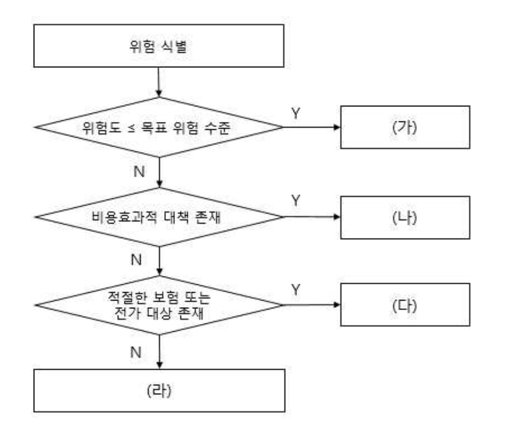

문서 버전: v1.0
대상 시험: 2016년(제17회) 정보시스템 감리사 필기시험
과목: 보안 (Security) — 문항 101~120, 총 20문항
정답 기준: 시험 시행 당시(2016년) 공식 정답 · 현행(2025) 개정사항 병기
근거 자료:6 기출문제/2016년(제17회) 정보시스템 감리사 필기시험 문제 및 답안.pdf
강의자료:5 보안도메인_PDF/(이아람기술사 Chapter I~V, 2017년 3월 기준) + 보안 특강(2019년 4월)
| 문항 | 정답 | 출제주제 | 난이도 |
|---|---|---|---|
| 101 | ① | 솔트(Salt) — 유닉스 패스워드 암호화 | 하 |
| 102 | ③ | 개인정보보호법 미규정 사항 (★ 현행 개정으로 답 변화 ★) | 중상 |
| 103 | ④ | 네트워크 구축 요구사항 — 안티바이러스 | 하 |
| 104 | ① | 개발보안 7유형 — 부적절한 인가의 소속 | 중상 |
| 105 | ② | 시큐어코딩 탐지 판정 — TP·FP·FN | 상 |
| 106 | ④ | 정성적 위험분석의 특징 | 중 |
| 107 | ② | ISO/IEC 13335 위험처리 절차 (★ 그림 문항 ★) | 중 |
| 108 | ② | DB 감사 수집 정보 — 암호화 키 | 중 |
| 109 | ③ | NAT | 중 |
| 110 | ② | OWASP Top 10(2013) — XSS 설명 오류 | 중상 |
| 111 | ② | 악성 소프트웨어 — 논리 폭탄 | 중 |
| 112 | ① | 암호화 방식 — 비밀번호는 일방향 | 중 |
| 113 | ② | DRM 요소 기술 — DOI·DII는 식별 체계 | 상 |
| 114 | ③ | 포트 스캐닝 도구 — nmap | 하 |
| 115 | ① | S/MIME 보안 서비스 — 신뢰망은 PGP | 중상 |
| 116 | ④ | 디지털 포렌식 — 연계 보관성 | 하 |
| 117 | ④ | ISO/IEC 27014 거버넌스 프로세스 | 중상 |
| 118 | ④ | 커버로스 — 대칭키 기반(공개키 아님) | 중 |
| 119 | ① | ARP — MITM·주소 대응 | 하 |
| 120 | ④ | 정보보호 관리과정 — 사후관리 | 중 |
정답 분포: ① 5개 · ② 7개 · ③ 3개 · ④ 5개
1. 영역 배분이 가장 고른 회차 — 모든 영역이 1~4문항
2016년은 특정 영역 편중 없이 고르게 출제되었다. 관리·표준 4문항(106·107·117·120) · 네트워크 3문항(103·109·119) · 암호·인증 3문항(101·112·118) · 개발보안 2문항(104·105) 에, 웹·DB·시스템·콘텐츠·메일·포렌식·도구·법령이 각 1문항씩이다. 네트워크·웹에 쏠린 2017년, 관리·법에 쏠린 2018년과 달리 전 범위를 균등하게 확인하는 구성이다.
2. ★ 107번이 유일한 그림 문항 — ISO/IEC 13335 위험처리 흐름도 ★
보안 5개년(2016~2020) 중 유일하게 도표가 제시된 문항이다. "위험도 ≤ 목표 위험 수준 → Y면 (가)" 형태의 판단 흐름도로, (가) 수용 · (나) 감소 · (다) 전가 · (라) 회피 순서를 읽어내야 한다. 흐름도의 조건문을 순서대로 따라가면 확실히 맞출 수 있는 문항이다.
3. 105번이 최고난도 — TP/FP/FN 판정
시큐어코딩 진단 도구의 판정 결과를 묻는다. ②는 "Good 코드에서 탐지하지 못한 경우 False Positive" 라고 했는데, 탐지하지 못한 것이 정상이므로 True Negative다. 혼동행렬(Confusion Matrix) 개념을 정확히 알아야 풀리며, 보안 5개년 중 가장 까다로운 문항 중 하나다.
4. "이름은 맞지만 분류가 틀린" 함정이 3개 — 104·113·115
★ 이 세 문항이 2016년의 성격을 규정한다. 용어를 아는 것만으로는 부족하고 "어디에 속하는가" 를 알아야 한다.
5. ★ 102번은 현행 기준으로 답이 달라진다 ★
"개인정보 이용내역의 통지" 는 2016년 당시 정보통신망법에만 있던 규정이라 개인정보보호법 미규정 사항으로 정답이었다. 그러나 2023년 개인정보보호법 전면 개정으로 제20조의2(이용·제공 내역의 통지)가 신설되어 현재는 개인정보보호법에 규정되어 있다. ★ 기출을 그대로 외우면 오히려 틀리는 대표 사례 ★★다.
6. 법령·표준·가이드가 대거 개정되었다
| 문항 | 2016년 당시 | 현행(2025) |
|---|---|---|
| 102 | 이용내역 통지 = 망법 규정 | ★ 2023 개정으로 개보법 제20조의2 신설 ★★ |
| 104 | 개발보안 가이드(2013.11) | ★ 행정안전부 가이드 개정 ★★ |
| 110 | OWASP Top 10(2013) | ★ 2021년판(A01 접근통제) ★★ |
| 112 | 기술적·관리적 보호조치 기준 | ★ 2023.9.15 폐지 → 안전성 확보조치 기준 ★★ |
| 120 | 정보보호 관리과정(ISMS) | ★ 2018.11 ISMS-P 통합 ★★ |
학습 전략: 2016년은 "분류를 묻는 회차" 다. 개발보안 7유형 · DRM 요소 기술 · 위험 대응 4전략 · ISO 표준 번호를 소속과 함께 정리하면 절반 이상을 확보한다. 105번(TP/FP/FN)과 107번(흐름도) 은 개념만 알면 확실히 득점할 수 있으므로 반드시 챙겨야 한다.
| 항목 | 내용 |
|---|---|
| 작성 기준 | 2016년(제17회) 원본 PDF 문항·정답 전수 대조 |
| 정답 검증 | PyMuPDF stroke-text(Bold) 추출 + 260dpi 렌더 육안 확인 (20/20 일치) |
| 이례 형식 | 없음 (복수정답 문항 없음) |
| 그림 문항 | ★ 107번 1건 — ISO/IEC 13335 위험처리 흐름도 ★ |
| 강의자료 매핑 | 5 보안도메인_PDF/ Chapter I~V + 보안 특강 |
| 현행 반영 | 2025년 8월 기준 법령·표준·가이드 개정사항 병기 |
UNIX 시스템의 패스워드 암호화에 활용되는 것으로 다음 내용에 대한 설명으로 가장 적절한 것은?
사용자의 패스워드에 덧붙여져서 암호 함수의 입력을 정해진 길이로 만들기 위해 활용된다. 이를 통해 패스워드의 길이가 늘어나고, 동일한 패스워드를 사용하는 사용자의 암호화된 값이 다른 값을 갖게 되는 효과가 있다.
① 솔트(salt)
② 키(key)
③ 해쉬값(hash value)
④ 사전(dictionary)
정답 : ①번
정답 신뢰도 : 매우 높음 (원본 Bold 확인)
| 항목 | 내용 |
|---|---|
| 연도 | 2016년 (제17회) |
| 과목 | 보안 |
| 문항번호 | 101번 |
| 난이도 | 하 |
| 출제주제 | 솔트(Salt) — 유닉스 패스워드 암호화 |
솔트·비밀번호 저장은 암호 영역의 기본 출제 주제다. 형태는 ① 용어 매칭(본 문항), ② 솔트의 효과 판별, ③ 비밀번호 해시 알고리즘, ④ 크래킹 기법 구분이다. "같은 비밀번호가 다른 해시값을 갖게 한다" 는 표현이 나오면 솔트로 즉시 확정된다.
| 연도 | 문항번호 | 핵심개념 |
|---|---|---|
| 2016 | 112 | 비밀번호 일방향 암호화 |
| 2017 | 109 | 스트림 암호 |
| 2018 | 107 | 해시 함수 응용 |
솔트(Salt) = 사용자의 패스워드에 덧붙여지는 사용자별 난수 ★★
★ 두 가지 효과: ① 입력 길이 보정 ② 동일한 비밀번호라도 암호화된 값이 서로 달라진다 ★★
★★ 솔트의 목적은 "은닉"이 아니라 "사전 계산(레인보우 테이블) 방지" — 그래서 비밀일 필요가 없고 해시와 함께 저장된다 ★★
유닉스 /etc/shadow의$id$salt$hashed형식에 솔트가 평문으로 들어 있다($1$=MD5, $5$=SHA-256, $6$=SHA-512) ★★
/etc/passwd(644, 모두 읽기)와 /etc/shadow(400, root 전용)를 분리한 이유 — 해시를 아무나 가져가지 못하게 ★★
★ 솔트는 사용자마다 달라야 한다 — 고정 솔트는 사실상 솔트가 없는 것 ★★
솔트만으로는 부족 — GPU로 초당 수십억 회 계산이 가능하므로 느린 해시(PBKDF2·bcrypt·scrypt·Argon2) 를 함께 써야 한다 ★★
Salt(DB에 공개 저장, 사전계산 방지) vs Pepper(앱·HSM에 비밀 보관, DB 유출 대비) ★★
② 키는 반드시 비밀이어야 하는 값 — 솔트와 비밀성 요구가 정반대 ★★
③ 해시값은 함수의 "출력" — 지문은 "덧붙여지는 입력"을 설명하므로 솔트 ★★
④ 사전(Dictionary)은 공격자의 도구 — 솔트가 무력화하는 대상이지 방어 수단이 아니다 ★★
현행 권장: Argon2(PHC 우승) · 비밀번호 정책은 "복잡성·주기"에서 "길이·유출목록 대조·MFA"로 이동 ★★
①이 옳은 이유 — 지문의 두 효과가 솔트의 정의
| 지문 표현 | 솔트의 특성 |
|---|---|
| "패스워드에 덧붙여져서" | ★ 원본에 부가되는 값 ★★ |
| "입력을 정해진 길이로" | ★ 길이 보정 ★★ |
| "동일한 패스워드의 암호화 값이 다른 값" | ★ 솔트의 핵심 효과 ★★ |
★★ 솔트가 없을 때의 문제 ★★
· ★ 사용자 A: password123 → H("password123") ★★
· ★ 사용자 B: password123 → H("password123") ★★
↓
★ 두 해시값이 완전히 동일 ★★
↓
· ★ DB만 봐도 "같은 비밀번호를 쓴다"는 사실 노출 ★★
· ★ 미리 계산한 표(레인보우 테이블)로 즉시 역추적 ★★
★★ 솔트를 쓰면 ★★
· ★ 사용자 A: H("password123" + "x7Kq") ★★
· ★ 사용자 B: H("password123" + "9mZa") ★★
↓
★ 전혀 다른 해시값 ★★
↓
· ★ 같은 비밀번호인지 알 수 없다 ★★
· ★ 사용자마다 다른 표가 필요 → 사전 계산 무의미 ★★
| 항목 | 내용 |
|---|---|
| 정의 | ★ 비밀번호에 덧붙이는 사용자별 난수 ★★ |
| 목적 | ★ 레인보우 테이블·사전 공격 무력화 ★★ |
| 비밀성 | ★ 비밀일 필요 없다(해시와 함께 저장) ★★ |
| 유닉스 | ★ 전통적으로 12비트(2^12=4096가지) ★★ |
| 현대 | ★ 최소 128비트 이상 권장 ★★ |
| 저장 | ★ /etc/shadow에 해시와 함께 ★★ |
→ 정답 ①
★ 솔트가 비밀이 아니어도 되는 이유 ★
★ 솔트의 목적은 "은닉"이 아니다 ★★
· ★ 목적 = 사전 계산(Pre-computation) 방지 ★★
↓
· ★ 공격자가 솔트를 알아도 ★★
↓
· ★ 그 사용자 한 명을 위한 표를 새로 만들어야 한다 ★★
↓
★★ 전체 사용자를 한꺼번에 깨는 것이 불가능해진다 ★★
↓
★ 즉, 공격 비용을 "1회"에서 "N회"로 늘린다 ★★
| 관련 개념 | 내용 |
|---|---|
| ★ Salt ★ | ★ DB에 함께 저장(공개) — 사전 계산 방지 ★★ |
| ★ Pepper ★ | ★ 앱 코드·HSM에 별도 보관(비밀) — DB 유출 대비 ★★ |
| 반복 횟수 | ★ 대입 속도 지연 ★★ |
| 항목 | 내용 |
|---|---|
| 역할 | ★ 암·복호화에 사용하는 비밀값 ★★ |
| 비밀성 | ★ 반드시 비밀 ★★ |
| 해시와의 관계 | ★ 순수 해시에는 키가 없다 ★★ |
| 판정 | ★ "덧붙여 길이를 맞추는" 값이 아니다 ★★ |
★ 키 vs 솔트 ★★
· ★ 키 ★★
— ★ 반드시 비밀 ★★
— ★ 유출되면 보안이 무너진다 ★★
— ★ 암호화·MAC에 사용 ★★
· ★ 솔트 ★★
— ★ 공개되어도 된다 ★★
— ★ 사용자마다 다르다 ★★
— ★ 해시 입력에 부가 ★★
↓
★★ 비밀성 요구가 정반대 ★★
②가 오답인 이유: 키는 비밀이어야 하며 "덧붙이는 난수"가 아니다. ★★
| 항목 | 내용 |
|---|---|
| 역할 | ★ 해시 함수의 "출력" ★★ |
| 지문 | ★ "덧붙여지는 입력"을 설명 ★★ |
| 판정 | ★ 입력과 출력의 혼동 ★★ |
★ 입력과 출력 ★★
★ 입력: 비밀번호 + 솔트 ★★
↓
★ 해시 함수 ★★
↓
★ 출력: 해시값 ★★
↓
★★ 지문은 "덧붙여져서 입력을 만든다"고 했다 ★★
↓
★ 따라서 입력 쪽 = 솔트 ★★
③이 오답인 이유: 해시값은 결과물이지 덧붙이는 값이 아니다. ★★
| 항목 | 내용 |
|---|---|
| 의미 | ★ 사전 공격에 쓰는 후보 단어 목록 ★★ |
| 주체 | ★ 공격자가 사용 ★★ |
| 솔트와의 관계 | ★ 솔트가 무력화하는 대상 ★★ |
| 판정 | ★ 방어 수단이 아니라 공격 수단 ★★ |
★★ ④는 정반대다 ★★
· ★ 사전(Dictionary) = 공격 도구 ★★
— ★ 흔한 비밀번호 목록 ★★
↓
· ★ 솔트 = 그 공격을 어렵게 만드는 방어 수단 ★★
↓
★ 공격과 방어를 뒤바꾼 오답 ★★
| 비밀번호 크래킹 3종 | 내용 |
|---|---|
| 무차별 대입 | ★ 모든 조합 — 확실하나 느림 ★★ |
| 사전 공격 | ★ 흔한 단어·유출 목록 — 빠르고 효과적 ★★ |
| 레인보우 테이블 | ★ 미리 계산한 해시 표 — 솔트로 무력화 ★★ |
④가 오답인 이유: 공격 기법의 도구다. ★★
소거 요령: "덧붙여진다" 는 표현이 결정적이다.
보기 성격 ① 솔트 ★ 입력에 덧붙이는 난수 ★★ ✓ ② 키 ★ 비밀 값(별도) ★★ ✗ ③ 해시값 ★ 출력 ★★ ✗ ④ 사전 ★ 공격 도구 ★★ ✗
유닉스 패스워드 저장 방식
| 파일 | 내용 |
|---|---|
| /etc/passwd | ★ 계정 정보(UID·GID·홈·셸) — 644, 모두 읽기 가능 ★★ |
| ★ /etc/shadow ★ | ★ 비밀번호 해시·만료 정책 — root 전용(400) ★★ |
★ 왜 shadow로 분리했는가 ★★
· ★ /etc/passwd는 프로그램들이 읽어야 한다 ★★
— ★ UID → 사용자명 변환 ★★
↓
· ★ 여기에 해시를 두면 누구나 가져간다 ★★
↓
★★ 해시를 /etc/shadow로 분리하고 root 전용 ★★
↓
★ passwd에는 "x" 표시만 남긴다 ★★
★ /etc/shadow 필드 구조 ★★
★ 계정:암호화된비밀번호:최종변경일:최소:최대:경고:비활성:만료:예약 ★★
↓
★ 암호화 필드 형식 ★★
· ★ $id$salt$hashed ★★
— ★ $1$ = MD5 ★★
— ★ $5$ = SHA-256 ★★
— ★ $6$ = SHA-512 ★★
— ★ $y$ = yescrypt(최신) ★★
↓
★★ 솔트가 해시와 함께 평문으로 저장된다 ★★
· ★ 비밀이 아니라는 증거 ★★
비밀번호 저장의 현대적 요건
| 요건 | 내용 |
|---|---|
| 일방향 해시 | ★ 복호화 불가 ★★ |
| ★ 솔트 ★ | ★ 사용자별 난수 ★★ |
| ★ 느린 해시 ★ | ★ 의도적 지연 ★★ |
| 충분한 길이 | ★ SHA-256 이상 ★★ |
| 페퍼 | ★ 별도 보관(선택) ★★ |
| 비밀번호 해시 알고리즘 | 특징 |
|---|---|
| PBKDF2 | ★ 반복 횟수로 지연 ★★ |
| bcrypt | ★ 시간·메모리 비용 ★★ |
| scrypt | ★ 메모리 집약(GPU 방어) ★★ |
| ★ Argon2 ★ | ★ 현행 권장(PHC 우승) ★★ |
★★ 왜 "느린 해시"가 필요한가 ★★
· ★ SHA-256은 너무 빠르다 ★★
— ★ GPU로 초당 수십억 회 계산 ★★
↓
· ★ 솔트가 있어도 개별 사용자는 크랙된다 ★★
↓
★★ 의도적으로 느리게 만든다 ★★
· ★ 정상 로그인: 0.1초 (문제없음) ★★
· ★ 대입 공격: 초당 10회 (사실상 불가능) ★★
↓
★ 솔트(사전계산 방지) + 느린 해시(대입 지연) ★★
★ 둘 다 필요하다 ★★
해시 함수의 3대 성질
| 성질 | 내용 |
|---|---|
| 선이미지 저항성(일방향성) | ★ 해시값에서 원본을 찾기 어렵다 ★★ |
| 제2선이미지 저항성 | ★ 같은 해시를 갖는 다른 입력을 찾기 어렵다 ★★ |
| 충돌 저항성 | ★ 같은 해시를 갖는 임의의 쌍을 찾기 어렵다 ★★ |
★ 생일 공격과 해시 길이 ★★
· ★ n비트 해시의 충돌은 2^(n/2)회면 발견 ★★
↓
· ★ MD5(128비트) → 2^64 → 현실적으로 가능 ★★
↓
★★ 그래서 256비트 이상이 필요 ★★
패스워드 정책
| 항목 | 현행 권장 |
|---|---|
| 길이 | ★ 길이 우선(패스프레이즈) ★★ |
| 복잡성 | ★ 과도한 규칙 완화 추세 ★★ |
| 주기적 변경 | ★ 강제 변경 완화(유출 시에만) ★★ |
| 유출 목록 대조 | ★ 알려진 유출 비밀번호 차단 ★★ |
| MFA | ★ 병행 필수 ★★ |
| 계정 잠금 | ★ 반복 실패 시 ★★ |
★ 비밀번호 정책의 변화 ★★
[과거]
· ★ "3개월마다 변경 + 특수문자 포함" ★★
↓
· ★ 사용자가 Password1! → Password2! ★★
· ★ 오히려 예측 가능한 패턴 유발 ★★
· ★ 메모지에 적어 두는 부작용 ★★
[★ 현재(NIST SP 800-63B 이후) ★★]
· ★ 길이 중심(최소 8자, 권장 더 길게) ★★
· ★ 유출 목록 대조 ★★
· ★ 주기적 강제 변경 지양 ★★
· ★ MFA 병행 ★★
↓
★★ "복잡성·주기"에서 "길이·MFA"로 이동 ★★
현행(2025년 기준) 보충사항
| 항목 | 현황 |
|---|---|
| 솔트 | ★ 필수·변함없음 ★★ |
| Argon2 | ★ 권장 알고리즘 ★★ |
| yescrypt | ★ 리눅스 기본 채택 확산 ★★ |
| MD5·SHA-1 해시 | ★ 비밀번호 저장에 부적합 ★★ |
| 패스키(FIDO2) | ★ 비밀번호 없는 인증 확산 ★★ |
| 유출 대조 | ★ HIBP 등 활용 ★★ |
강의자료 근거:
5.보안(170319)_이아람기술사_Chapter1.pdfChapter I 암호 - 해시함수,Chapter4-1.pdf시스템 보안(패스워드) 에 수록되어 있다.
비밀번호 저장은 암호 통제 감리의 기본 점검 항목이다.
| 점검 항목 | 확인 사항 |
|---|---|
| 일방향 저장 | ★ 복호화 가능한 방식 금지 ★★ |
| 솔트 | ★ 사용자별 난수 적용 ★★ |
| 알고리즘 | ★ bcrypt·Argon2 등 느린 해시 ★★ |
| 난수 품질 | ★ CSPRNG 사용 ★★ |
| 전송 구간 | ★ TLS 적용 ★★ |
| 유출 대조 | ★ 취약 비밀번호 차단 ★★ |
흔한 결함 1: 비밀번호를 양방향 암호화(복호화 가능)로 저장해, 키 유출 시 전 사용자 비밀번호가 노출될 수 있었던 사례다. "비밀번호 찾기"에서 원래 비밀번호를 알려주는 서비스가 이 유형이다. ★★
흔한 결함 2: Salt 없이 SHA-256만 사용해 레인보우 테이블로 대량 복원된 사례다. ★★
흔한 결함 3: 모든 사용자에게 동일한 고정 솔트를 사용해, 사실상 솔트가 없는 것과 같았던 사례다. 솔트는 사용자마다 달라야 한다. ★★
흔한 결함 4: 솔트 생성에 rand()·Math.random() 같은 비암호학적 난수를 사용해 예측 가능했던 사례다. ★★
흔한 결함 5: MD5로 비밀번호를 저장한 레거시 시스템이 잔존한 사례다. ★★
흔한 결함 6: 비밀번호를 로그·디버그 출력에 평문으로 기록한 사례다. ★★
솔트 문항은 효과 두 가지만 알면 즉답이다.
절대 암기
$$\boxed{\text{솔트 = 비밀번호에 덧붙이는 \textbf{사용자별 난수}}}$$
$$\boxed{\text{효과 = ① 같은 비밀번호도 다른 해시 ② 레인보우 테이블 무력화}}$$
$$\boxed{\text{★ 솔트는 비밀이 아니어도 된다(해시와 함께 저장) ★}}$$
참인 서술 (○)
| 항목 |
|---|
| 솔트는 비밀번호에 덧붙이는 난수 ★★ |
| 같은 비밀번호라도 솔트가 다르면 해시값이 다르다 ★★ |
| 솔트는 레인보우 테이블 공격을 무력화한다 ★★ |
| 솔트는 비밀일 필요가 없으며 해시와 함께 저장된다 ★★ |
| 유닉스는 /etc/shadow에 해시와 솔트를 저장 ★★ |
| 비밀번호는 일방향 해시로 저장해야 한다 ★★ |
| 느린 해시(bcrypt·Argon2)가 대입 공격을 지연시킨다 ★★ |
| 페퍼는 DB가 아닌 별도 위치에 보관한다 ★★ |
| 솔트는 사용자마다 달라야 한다 ★★ |
거짓인 서술 (✗) — 출제 단골
| 틀린 서술 | 실제 |
|---|---|
| 솔트는 반드시 비밀로 보관해야 한다 | 공개 저장 가능 ★★ |
| 솔트는 해시 함수의 출력이다 | 입력에 부가 ★★ |
| 모든 사용자에게 같은 솔트를 써도 된다 | 사용자별 난수 ★★ |
| 솔트만 있으면 대입 공격도 막힌다 | 느린 해시 필요 ★★ |
| 사전(Dictionary)은 비밀번호 보호 수단이다 | 공격 도구 ★★ |
| SHA-256 단독으로 비밀번호 저장이 충분하다 | 너무 빠름 ★★ |
감점 포인트
| 실수 | 예방 |
|---|---|
| ★ 솔트의 비밀성 오해 ★ | ★ 목적은 사전 계산 방지 ★★ |
| 입력/출력 혼동 | ★ 솔트=입력, 해시값=출력 ★★ |
다음 중 「개인정보 보호법」에서 규정하고 있지 않은 것은?
① 개인정보의 수집 제한
② 개인정보의 목적 외 이용·제공 제한
③ 개인정보 이용내역의 통지
④ 개인정보영향평가
정답 : ③번 (2016년 당시 기준)
정답 신뢰도 : 매우 높음 (원본 Bold 확인)
★★ 중요 — 현행(2025) 기준으로는 답이 달라진다 ★★
2023년 개인정보보호법 전면 개정으로 「제20조의2(개인정보 이용·제공 내역의 통지)」가 신설되어, 현재는 ③도 개인정보보호법에 규정되어 있다. 아래 「현행 보충사항」에서 상세히 다룬다.
| 항목 | 내용 |
|---|---|
| 연도 | 2016년 (제17회) |
| 과목 | 보안 |
| 문항번호 | 102번 |
| 난이도 | 중상 |
| 출제주제 | 개인정보보호법 미규정 사항 (★ 현행 개정으로 답이 달라진 문항 ★) |
개인정보 법령은 보안 과목의 최다 출제 법령으로 매년 1~3문항이 나온다. 본 문항은 "법 개정으로 정답이 바뀐" 대표 사례로, 기출을 기계적으로 암기하면 오히려 틀리는 유형이다. 형태는 ① 조문 소속 판별(본 문항), ② 각 호 열거, ③ 기간·수량, ④ 최신 개정사항이다.
| 연도 | 문항번호 | 핵심개념 |
|---|---|---|
| 2016 | 112 | 기술적·관리적 보호조치 암호화 |
| 2018 | 119 | 망법 동의 예외 |
| 2019 | 108 | 개인정보 영향평가 |
(2016년 당시) "개인정보 이용내역의 통지"는 정보통신망법 제30조의2 규정이라 개인정보보호법에는 없었다 ★★
★★ 그러나 2023년 개인정보보호법 전면 개정으로 「제20조의2(개인정보 이용·제공 내역의 통지)」가 신설되어 현재는 개보법에 규정되어 있다 ★★
★ 기출을 그대로 외우면 오히려 틀리는 대표 문항 — "당시엔 망법, 지금은 개보법" 두 사실을 함께 기억 ★★
개인정보보호법 제16조 = 수집 제한(목적에 필요한 최소한, 입증 책임은 처리자) ★★
개인정보보호법 제18조 = 목적 외 이용·제공 제한(예외: 별도 동의·법률 규정·급박한 이익·가명처리 연구 등) ★★
개인정보보호법 제33조 = 개인정보 영향평가(공공기관 의무, 5만/50만/100만 기준) ★★
★ 법 개정 3단계: 2016년 이원 규제 → 2020년 데이터3법(망법 특례 이관) → 2023년 전면 개정(특례 삭제·통합) ★★
2023년 개정 3대 신설 권리: 전송요구권(마이데이터) · 자동화 결정 거부·설명 요구권(제37조의2) · 이용·제공 내역 통지(제20조의2) ★★
이용·제공 내역 통지는 연 1회 이상, 수집·이용 목적 및 항목·제3자 제공 현황을 통지 ★★
과징금 산정이 "관련 매출액 3%"에서 "전체 매출액 3%"로 상향되어 제재 규모가 대폭 커졌다 ★★
최소 수집 원칙상 선택 항목 미동의를 이유로 서비스 제공을 거부할 수 없다 ★★
★ 실무 시사점: 법령은 자주 바뀌므로 "법적 요구사항 준수 검토"를 연 1회 이상 수행해야 한다(ISMS-P 1.4) ★★
③이 2016년 당시 정답이었던 이유
「개인정보 이용내역의 통지」 는 당시 「정보통신망 이용촉진 및 정보보호 등에 관한 법률」 제30조의2 에만 있던 규정이었다. 정보통신서비스 제공자가 일정 규모 이상일 때 이용자에게 연 1회 이상 개인정보 이용내역을 통지하도록 한 조항으로, 개인정보보호법에는 없었다.
★★ 2016년 당시 이원 규제 구조 ★★
[★ 개인정보보호법 ★★]
· ★ 일반법 — 모든 개인정보처리자 ★★
· ★ 수집 제한 · 목적 외 이용 제한 ★★
· ★ 영향평가(공공기관) ★★
· ★★ "이용내역 통지"는 없었다 ★★
[★ 정보통신망법 ★★]
· ★ 특별법 — 정보통신서비스 제공자 ★★
· ★ 제30조의2 이용내역의 통지 ★★
↓
★★ 같은 개인정보인데 법이 둘 ★★
↓
★ 2016년 문항은 이 이원 구조를 물었다 ★★
| 보기 | 2016년 당시 개인정보보호법 조문 |
|---|---|
| ① 개인정보의 수집 제한 | ★ 제16조(개인정보의 수집 제한) ★★ |
| ② 목적 외 이용·제공 제한 | ★ 제18조(개인정보의 목적 외 이용·제공 제한) ★★ |
| ③ 이용내역의 통지 | ★ 없음 → 망법 제30조의2 ★★ |
| ④ 개인정보영향평가 | ★ 제33조(개인정보 영향평가) ★★ |
→ 정답(2016년 기준) ③
| 항목 | 내용 |
|---|---|
| 근거 | ★ 제16조 ★★ |
| 내용 | ★ 목적에 필요한 최소한의 개인정보 수집 ★★ |
| 입증 책임 | ★ 최소한이라는 입증은 개인정보처리자가 ★★ |
| 금지 | ★ 필요 최소 정보 외 미동의를 이유로 서비스 거부 금지 ★★ |
★ 최소 수집 원칙 ★★
· ★ 목적에 필요한 최소한만 수집 ★★
↓
· ★ "최소한"의 입증 책임은 처리자에게 ★★
↓
★★ 필수/선택 구분 ★★
· ★ 선택 항목 미동의를 이유로
서비스 제공을 거부할 수 없다 ★★
↓
★ 최다 위반: 마케팅 동의를 필수로 묶기 ★★
①은 개인정보보호법의 핵심 원칙이다. ★★
| 항목 | 내용 |
|---|---|
| 근거 | ★ 제18조 ★★ |
| 원칙 | ★ 수집 목적 범위를 초과해 이용·제공 금지 ★★ |
| 예외 | ★ 별도 동의·법률 규정·급박한 이익 등 ★★ |
| 공공기관 특례 | ★ 조약 이행·범죄 수사·법원 재판 등 ★★ |
★ 목적 외 이용·제공의 예외 ★★
· ★ 정보주체의 별도 동의 ★★
· ★ 다른 법률에 특별한 규정 ★★
· ★ 급박한 생명·신체·재산 이익 ★★
· ★ 통계작성·과학적 연구(가명처리) ★★
· ★ (공공기관) 조약 이행·범죄 수사·법원 재판 ★★
↓
★★ 예외 사유가 아니면 목적 외 이용은 위법 ★★
↓
★ 공공기관은 목적 외 이용 시
관보·홈페이지 게재 의무 ★★
②는 개인정보보호법 제18조다. ★★
| 항목 | 내용 |
|---|---|
| 근거 | ★ 제33조 ★★ |
| 의무 주체 | ★ 공공기관(민간은 권장) ★★ |
| 시기 | ★ 개인정보파일 구축·변경 전 ★★ |
| 고려사항 | ★ 처리하는 개인정보의 수 · 제3자 제공 여부 · 권리 침해 가능성 ★★ |
| 결과 제출 | ★ 개인정보보호위원회 ★★ |
★ 영향평가 의무 대상(시행령) ★★
· ★ 5만명 이상 ★★ — 민감정보·고유식별정보 파일
· ★ 50만명 이상 ★★ — 다른 파일과 연계
· ★ 100만명 이상 ★★ — 일반 개인정보파일
↓
★★ 5-50-100 만 → 민감/연계/일반 ★★
↓
★ 2019년 108번의 논점 ★★
④는 개인정보보호법 제33조다. ★★
소거 요령: "어느 법에 있는가" 로 판정한다.
· ★ ① 수집 제한 → 개보법 제16조 ★★
· ★ ② 목적 외 이용 제한 → 개보법 제18조 ★★
· ★ ④ 영향평가 → 개보법 제33조 ★★
↓
· ★★ ③ 이용내역 통지 → (당시) 망법 제30조의2 ★★
↓
★ 셋은 개보법, 하나만 망법 ★★
★★ 법 개정 연혁 ★★
[★ 2016년(출제 당시) ★★]
· ★ 개인정보보호법(일반법) ★★
· ★ 정보통신망법 특례(정보통신서비스 제공자) ★★
↓
· ★ 이용내역 통지 = 망법 제30조의2에만 ★★
[★ 2020년 데이터3법 개정 ★★]
· ★ 망법의 개인정보 조항을 개보법으로 이관 ★★
· ★ 개보법 제39조의8(이용내역의 통지) 신설 ★★
— ★ 단, "정보통신서비스 제공자 특례"로 존치 ★★
↓
[★★ 2023년 전면 개정(2023.9.15 시행) ★★]
· ★ 특례 규정 대부분 삭제·일반 규정으로 통합 ★★
· ★★ 제20조의2(개인정보 이용·제공 내역의 통지) 신설 ★★
↓
★★ 현재는 개인정보보호법에 규정되어 있다 ★★
↓
★ 즉, 2025년 기준으로 이 문항의 정답이 성립하지 않는다 ★★
현행 제20조의2(개인정보 이용·제공 내역의 통지)
| 항목 | 내용 |
|---|---|
| 의무 주체 | ★ 일정 기준 이상 개인정보처리자(시행령) ★★ |
| 주기 | ★ 연 1회 이상 ★★ |
| 통지 내용 | ★ 수집·이용 목적 및 항목, 제3자 제공 현황 ★★ |
| 방법 | ★ 서면·전자우편·문자 등 ★★ |
| 예외 | ★ 연락처를 알 수 없는 경우 등 ★★ |
★★ 시험 대비 정리 ★★
· ★ 2016년 기출을 그대로 외우면 → 오답 ★★
↓
· ★ "당시에는 망법에만 있었다" ★★
· ★ "2023년 개정으로 개보법에 신설되었다" ★★
↓
★★ 두 사실을 함께 기억해야 한다 ★★
↓
★ 최근 기출에서는 "개보법에 규정되어 있다"가 정답 ★★
개인정보보호법 주요 조문(현행)
| 조 | 내용 |
|---|---|
| 제3조 | ★ 개인정보 보호 원칙 ★★ |
| 제15조 | ★ 수집·이용(7가지 근거) ★★ |
| ★ 제16조 ★ | ★ 수집 제한(최소 수집) ★★ |
| 제17조 | ★ 제3자 제공 ★★ |
| ★ 제18조 ★ | ★ 목적 외 이용·제공 제한 ★★ |
| ★ 제20조의2 ★ | ★ 이용·제공 내역의 통지(2023 신설) ★★ |
| 제21조 | ★ 파기 ★★ |
| 제23조 | ★ 민감정보 처리 제한 ★★ |
| 제24조·24조의2 | ★ 고유식별정보·주민등록번호 ★★ |
| 제26조 | ★ 위탁 ★★ |
| 제28조의2~7 | ★ 가명정보 특례 ★★ |
| 제29조 | ★ 안전조치 의무 ★★ |
| 제30조 | ★ 처리방침 ★★ |
| 제31조 | ★ 개인정보 보호책임자(CPO) ★★ |
| ★ 제33조 ★ | ★ 영향평가 ★★ |
| 제34조 | ★ 유출 통지·신고 ★★ |
| 제35~37조 | ★ 열람·정정·삭제·처리정지 ★★ |
| 제37조의2 | ★ 자동화 결정 거부권(2023 신설) ★★ |
개인정보 보호 원칙(제3조)
| 원칙 | 내용 |
|---|---|
| 목적 명확화·최소 수집 | ★ 목적을 명확히 하고 최소한만 ★★ |
| 목적 범위 내 처리 | ★ 목적 외 활용 금지 ★★ |
| 정확성·완전성·최신성 | ★ 보장 ★★ |
| 안전성 확보 | ★ 위험에 상응하는 조치 ★★ |
| 공개·투명성 | ★ 처리방침 공개 ★★ |
| 사생활 침해 최소화 | ★ 최소한의 방법 ★★ |
| 익명·가명 처리 | ★ 가능하면 익명, 곤란하면 가명 ★★ |
| 신뢰 확보 | ★ 책임·의무 준수 ★★ |
정보주체의 권리(제4조)
| 권리 | 근거 |
|---|---|
| 처리 정보 고지 요구 | 제4조 ★★ |
| 동의 여부·범위 선택 | ★★ |
| ★ 열람 요구 ★ | ★ 제35조 ★★ |
| ★ 정정·삭제 요구 ★ | ★ 제36조 ★★ |
| ★ 처리정지 요구 ★ | ★ 제37조 ★★ |
| ★ 자동화 결정 거부·설명 요구 ★ | ★ 제37조의2(2023 신설) ★★ |
| 피해 구제 | ★ 신속·공정한 절차 ★★ |
| 전송요구권 | ★ 마이데이터 ★★ |
★ 2023년 개정의 3대 신설 권리 ★★
· ★ 개인정보 전송요구권 ★★
— ★ 마이데이터의 법적 근거 ★★
· ★ 자동화 결정 거부·설명 요구권 ★★
— ★ AI 채용·신용평가 등 ★★
· ★ 이용·제공 내역 통지(제20조의2) ★★
— ★ 본 문항과 직결 ★★
과징금·과태료(현행)
| 항목 | 내용 |
|---|---|
| 과징금 | ★ 전체 매출액 3% 이하(2023 개정으로 상향) ★★ |
| 기존 | ★ 관련 매출액 3% ★★ |
| 의미 | ★ 제재 수준 대폭 강화 ★★ |
| 과태료 | ★ 의무 위반 유형별 ★★ |
★★ 과징금 산정 기준 변화 ★★
· ★ 개정 전: "관련 매출액"의 3% ★★
— ★ 관련 매출 산정이 어려워 실효성 낮음 ★★
↓
· ★★ 개정 후: "전체 매출액"의 3% ★★
↓
★ 제재 규모가 수십 배로 커질 수 있다 ★★
↓
★ 개인정보 보호의 경영 리스크가 급상승 ★★
현행(2025년 기준) 보충사항
| 항목 | 현황 |
|---|---|
| ★ 이용내역 통지 ★ | ★ 개보법 제20조의2로 신설 ★★ |
| 망법 특례 | ★ 대부분 삭제·통합 ★★ |
| 개인정보보호위원회 | ★ 중앙행정기관 ★★ |
| 가명정보 | ★ 제28조의2~7 ★★ |
| 자동화 결정 | ★ 제37조의2 ★★ |
| 과징금 | ★ 전체 매출액 기준 ★★ |
| 국외 이전 | ★ 요건 정비 ★★ |
강의자료 근거:
1.5 보안 특강 및 출제 예상_V1.0_20190410_final.pdfp.4 개인정보보호법, p.55 정보통신망법 에 수록되어 있다. ★ 2019년 자료이므로 2020·2023 개정 반영이 필요하다. ★★
법령 준수는 개인정보 감리의 최우선 기준이다.
| 점검 항목 | 확인 사항 |
|---|---|
| 최소 수집 | ★ 불필요 항목 제거 ★★ |
| 필수/선택 구분 | ★ 선택 미동의 시 서비스 제공 ★★ |
| 목적 외 이용 | ★ 별도 동의·법적 근거 ★★ |
| ★ 이용내역 통지 ★ | ★ 연 1회 이상(현행 의무) ★★ |
| 영향평가 | ★ 대상 여부·수행 시기 ★★ |
| 법 개정 반영 | ★ 정기 준수 검토 ★★ |
| 처리방침 | ★ 최신화·공개 ★★ |
흔한 결함 1: 2023년 법 개정 이후에도 이용·제공 내역 통지를 시행하지 않은 사례다. 현행 의무 사항이다. ★★
흔한 결함 2: 법 개정 사항을 반영하지 않아 동의서·처리방침이 구법 기준으로 남아 있던 사례다. 연 1회 이상 법적 요구사항 준수 검토가 필요하다. ★★
흔한 결함 3: 서비스와 무관한 항목(직업·결혼 여부)을 수집해 최소 수집 원칙을 위반한 사례다. ★★
흔한 결함 4: 수집 목적을 벗어난 마케팅 활용을 별도 동의 없이 수행한 사례다. ★★
흔한 결함 5: 영향평가 의무 대상임에도 수행하지 않은 사례다. ★★
흔한 결함 6: 마케팅 동의를 필수 항목에 포함해 미동의 시 가입을 거부한 사례다. ★★
법령 조문 문항은 "어느 법 어느 조" 를 외워야 한다.
절대 암기
$$\boxed{\text{(당시) 이용내역 통지 = \textbf{정보통신망법} 제30조의2 → 개보법에 없었다}}$$
$$\boxed{\text{★ (현행) 2023 개정으로 \textbf{개인정보보호법 제20조의2} 신설 ★}}$$
$$\boxed{\text{개보법: 제16조 수집제한 · 제18조 목적외 제한 · 제33조 영향평가}}$$
참인 서술 (○)
| 항목 |
|---|
| (당시) 이용내역 통지는 정보통신망법 규정이었다 ★★ |
| ★ (현행) 개인정보보호법 제20조의2에 신설되었다 ★★ |
| 수집 제한은 개인정보보호법 제16조 ★★ |
| 목적 외 이용·제공 제한은 제18조 ★★ |
| 영향평가는 제33조이며 공공기관 의무 ★★ |
| 최소 수집의 입증 책임은 개인정보처리자에게 있다 ★★ |
| 2020년 데이터3법으로 망법 특례가 개보법으로 이관 ★★ |
| 2023년 전면 개정으로 특례가 대부분 삭제·통합 ★★ |
| 과징금이 전체 매출액 기준으로 상향 ★★ |
거짓인 서술 (✗) — 출제 단골
| 틀린 서술 | 실제 |
|---|---|
| (현행) 이용내역 통지는 개보법에 없다 | ★ 제20조의2 신설 ★★ |
| 수집 제한은 망법에만 있다 | 개보법 제16조 ★★ |
| 영향평가는 민간기업 의무다 | 공공기관 의무·민간 권장 ★★ |
| 목적 외 이용은 동의만 있으면 자유롭다 | 별도 동의 필요 ★★ |
| 최소 수집 입증은 정보주체가 한다 | 처리자 ★★ |
| 망법과 개보법은 여전히 이원 규제다 | 일원화 ★★ |
감점 포인트
| 실수 | 예방 |
|---|---|
| ★ 기출을 그대로 암기 ★ | ★ 개정 연혁을 함께 정리 ★★ |
| 조문 번호 혼동 | ★ 16·18·33 ★★ |
다음과 같은 네트워크 구축 요구사항을 충족하기 위한 것으로 가장 거리가 먼 것은?
우리 기업의 네트워크를 내부망과 외부망으로 구분하고 외부에 공개해야 하는 웹서비스는 구분된 네트워크에서 운영하고자 한다. 또한 외부망에서 내부망으로 암호터널을 이용하여 안전한 통신을 제공하고자 한다.
① 방화벽(Firewall)
② 중간지점(DMZ)
③ 가상사설망(VPN)
④ 안티바이러스(Anti-Virus)
정답 : ④번
정답 신뢰도 : 매우 높음 (원본 Bold 확인)
| 항목 | 내용 |
|---|---|
| 연도 | 2016년 (제17회) |
| 과목 | 보안 |
| 문항번호 | 103번 |
| 난이도 | 하 |
| 출제주제 | 네트워크 보안 구성 요소 — 안티바이러스의 역할 |
네트워크 보안 구성은 가장 기본적인 출제 형태로 난이도가 낮아 반드시 득점해야 한다. 형태는 ① 요구사항-장비 매칭(본 문항), ② 방화벽 구축 유형(2018년 101번), ③ 장비 역할 구분, ④ 계층별 보안 프로토콜이다. 요구사항 문장 수와 보기 수를 대조하면 남는 것이 답이다.
| 연도 | 문항번호 | 핵심개념 |
|---|---|---|
| 2016 | 109 | NAT |
| 2018 | 101 | 방화벽 구축 유형 |
| 2018 | 116 | SIEM |
④ 안티바이러스는 엔드포인트의 악성코드를 탐지·제거하는 통제로, 지문의 네트워크 "구성" 요구사항과 무관 ★★
★★ 요구사항 1:1 매칭 ★★
★ "내부망과 외부망으로 구분" → ① 방화벽 ★★
★ "공개 웹서비스는 구분된 네트워크에서 운영" → ② DMZ ★★
★ "외부망에서 내부망으로 암호터널" → ③ VPN ★★
★ 풀이 요령: 요구사항 문장을 하나씩 지워 나가면 대응되지 않는 보기가 답 ★★
DMZ 통신 원칙: 외부→DMZ 제한 허용 / ★ DMZ→내부 원칙적 차단 ★★ / 내부→DMZ 허용
DMZ→내부 차단이 핵심인 이유: DMZ 서버는 외부 노출되어 "언젠가 뚫린다"고 가정해야 하기 때문 ★★
방화벽 세대: 패킷 필터링 → 상태 검사(Stateful) → 응용계층 프록시 → NGFW(애플리케이션 인식) ★★
VPN 유형: IPSec VPN(L3, 전체 네트워크, 사이트 간) vs SSL VPN(L4~7, 브라우저, 원격 접속) ★★
IDS(미러링·탐지·경고) vs IPS(인라인·탐지·차단) ★★
심층 방어: 물리 → 네트워크(방화벽·DMZ·VPN) → 호스트(백신·EDR) → 애플리케이션(WAF) → 데이터(암호화·DLP) → 사람(교육) ★★
클라우드 대응: 방화벽=보안그룹/NACL, DMZ=퍼블릭 서브넷, 내부망=프라이빗 서브넷 — 이름만 다를 뿐 개념 동일 ★★
요구사항과 구성 요소를 1:1로 매칭한다
| 요구사항 | 대응 구성 요소 |
|---|---|
| "내부망과 외부망으로 구분" | ★ ① 방화벽(Firewall) ★★ |
| "공개 웹서비스는 구분된 네트워크에서" | ★ ② DMZ ★★ |
| "암호터널을 이용하여 안전한 통신" | ★ ③ VPN ★★ |
| — (해당 없음) | ★ ④ 안티바이러스 ★★ |
★★ 요구사항이 그리는 네트워크 구조 ★★
[인터넷]
│
★ ① 방화벽 ★★ ← "내부망/외부망 구분"
│
┌───┴──────────────────────┐
│ ★★ ② DMZ ★★ │ ← "공개 웹서비스 구간"
│ · 웹서버 · 메일서버 │
└───┬──────────────────────┘
│
★ 내부 방화벽 ★
│
[내부망]
↑
★★ ③ VPN 터널 ★★ ← "외부망에서 암호터널"
│
[원격 사용자]
↓
★★ ④ 안티바이러스가 들어갈 자리가 없다 ★★
→ 정답(거리가 먼 것) ④
안티바이러스의 실제 역할
| 항목 | 내용 |
|---|---|
| 대상 | ★ 단말·서버의 파일·프로세스 ★★ |
| 역할 | ★ 악성코드 탐지·차단·제거 ★★ |
| 탐지 방식 | ★ 시그니처·휴리스틱·행위 기반 ★★ |
| 계층 | ★ 엔드포인트 보안 ★★ |
| 판정 | ★ 네트워크 "구성"과 무관 ★★ |
★ 안티바이러스가 중요하지 않다는 뜻이 아니다 ★★
· ★ 악성코드 대응에 필수적인 통제 ★★
↓
· ★ 그러나 지문의 요구사항은 ★★
— ★ 망 분리 ★★
— ★ 공개 서버 구간 ★★
— ★ 암호 터널 ★★
↓
★★ 모두 "네트워크 구조"의 문제 ★★
↓
★ 안티바이러스는 구조가 아니라
엔드포인트의 파일을 다룬다 ★★
| 항목 | 내용 |
|---|---|
| 역할 | ★ 네트워크 간 접근 통제 ★★ |
| 요구사항 대응 | ★ "내부망과 외부망 구분" ★★ |
| 기본 정책 | ★ Deny All 후 필요한 것만 허용 ★★ |
| 발전 | ★ 패킷필터링 → 상태검사 → 프록시 → NGFW ★★ |
★ 방화벽 세대별 발전 ★★
· ★ 1세대: 패킷 필터링 ★★
— ★ IP·포트 기준, 빠르지만 단순 ★★
· ★ 2세대: 상태 검사(Stateful) ★★
— ★ 연결 상태 추적 → 응답만 자동 허용 ★★
· ★ 3세대: 응용계층 게이트웨이(프록시) ★★
— ★ 내용 검사·인증, 느림 ★★
· ★ 현재: NGFW ★★
— ★ 애플리케이션 식별·IPS·사용자 인식 ★★
①은 "망 구분"의 핵심 수단이다. ★★
| 항목 | 내용 |
|---|---|
| 개념 | ★ 내부망과 외부망 사이의 완충 구간 ★★ |
| 배치 대상 | ★ 웹서버·메일서버·DNS·베스천 호스트 ★★ |
| 통신 원칙 | ★ 외부→DMZ 제한 허용 / DMZ→내부 차단 ★★ |
| 요구사항 대응 | ★ "공개 웹서비스는 구분된 네트워크" ★★ |
★★ DMZ가 필요한 이유 ★★
· ★ 웹서버는 외부에 공개해야 한다 ★★
↓
· ★ 내부망에 두면 → 침해 시 내부 전체 노출 ★★
· ★ 외부에 두면 → 보호가 안 된다 ★★
↓
★★ 중간 지대(DMZ)에 배치 ★★
↓
★ DMZ 서버가 뚫려도 내부망은 안전 ★★
↓
★ 2018년 101번(스크린드 서브넷)과 동일 논점 ★★
②는 "공개 서버 구간"에 정확히 대응한다. ★★
| 항목 | 내용 |
|---|---|
| 개념 | ★ 공중망에 암호 터널을 만들어 사설망처럼 사용 ★★ |
| 요구사항 대응 | ★ "암호터널을 이용하여 안전한 통신" ★★ |
| 유형 | ★ IPSec VPN · SSL VPN ★★ |
| 용도 | ★ 원격 접속 · 사이트 간 연결 ★★ |
★ VPN 유형 ★★
· ★ IPSec VPN(3계층) ★★
— ★ 전체 네트워크 접근 ★★
— ★ 사이트 간 상시 연결에 적합 ★★
· ★ SSL VPN(4~7계층) ★★
— ★ 브라우저 기반·443 포트 ★★
— ★ 재택·모바일 원격 접속에 적합 ★★
↓
★★ 지문의 "외부망에서 내부망으로 암호터널" ★★
↓
★ 원격 접속 VPN ★★
③은 "암호 터널"의 정확한 대응이다. ★★
소거 요령: 요구사항 문장을 하나씩 지워 나간다.
· ★ "내부망/외부망 구분" → ① 방화벽 ★★ ✓
· ★ "공개 웹서비스 별도 구간" → ② DMZ ★★ ✓
· ★ "암호터널" → ③ VPN ★★ ✓
↓
★★ 대응되는 요구사항이 없는 것 = ④ ★★
네트워크 보안 장비 지도
| 장비 | 역할 | 계층 |
|---|---|---|
| 방화벽 | ★ 접근 통제(허용/차단) ★★ | L3~L4(NGFW는 L7) ★★ |
| IDS | ★ 침입 탐지·경고 ★★ | L3~L7 ★★ |
| IPS | ★ 침입 방지·차단(인라인) ★★ | L3~L7 ★★ |
| WAF | ★ 웹 공격 차단 ★★ | L7 ★★ |
| UTM | ★ 다기능 통합 ★★ | 복합 ★★ |
| VPN | ★ 암호 터널 ★★ | L2·L3·L4~7 ★★ |
| NAC | ★ 단말 접근 제어·검역 ★★ | L2 ★★ |
| DLP | ★ 정보 유출 방지 ★★ | 복합 ★★ |
| 안티바이러스 | ★ 악성코드 탐지·제거 ★★ | 엔드포인트 ★★ |
| EDR | ★ 단말 행위 탐지·대응 ★★ | 엔드포인트 ★★ |
| SIEM | ★ 로그 통합 분석 ★★ | 관리 ★★ |
★ IDS vs IPS ★★
| 항목 | ★ IDS ★ | ★ IPS ★★ |
|------|------|------|
| 배치 | ★ 미러링(수동) ★ | ★ 인라인 ★★ |
| 동작 | ★ 탐지·경고 ★ | ★ 탐지·차단 ★★ |
| 오탐 영향 | ★ 경고만 ★ | ★ 정상 차단 ★★ |
| 성능 | ★ 영향 없음 ★ | ★ 지연 ★★ |
망 분리(Network Separation)
| 방식 | 내용 |
|---|---|
| 물리적 망분리 | ★ 별도 PC·별도 회선 — 가장 안전, 고비용 ★★ |
| 논리적 망분리(서버 기반) | ★ VDI로 업무·인터넷 분리 ★★ |
| 논리적 망분리(PC 기반) | ★ 가상 환경으로 분리 ★★ |
| 근거 | ★ 정보통신망법·안전성 확보조치 기준 ★★ |
★ 망분리 의무 ★★
· ★ 일정 규모 이상 개인정보취급자 ★★
↓
· ★ 개인정보처리시스템 접속 PC와
인터넷 PC를 분리 ★★
↓
★★ 목적: 악성코드 감염 경로 차단 ★★
↓
★ 최근에는 제로 트러스트·클라우드 확산으로
망분리 규제 완화 논의 진행 ★★
DMZ 구성 원칙
| 원칙 | 내용 |
|---|---|
| 외부 → DMZ | ★ 필요한 서비스만 제한 허용 ★★ |
| ★ DMZ → 내부 ★ | ★ 원칙적 차단 ★★ |
| 내부 → DMZ | ★ 허용 ★★ |
| DMZ 서버 하드닝 | ★ 불필요 서비스 제거 ★★ |
| 로그 | ★ 중앙 수집 ★★ |
★★ DMZ→내부 차단이 핵심 ★★
· ★ DMZ 서버는 외부에 노출되어 있다 ★★
↓
· ★ 언젠가 뚫린다고 가정해야 한다 ★★
↓
★ 그때 내부망으로 넘어가지 못하게 ★★
↓
★★ 부득이 필요하면 ★★
· ★ 특정 IP·포트만 최소 허용 ★★
· ★ 애플리케이션 게이트웨이 경유 ★★
↓
★ 흔한 결함: DMZ에서 내부 DB로 광범위 허용 ★★
안티바이러스와 엔드포인트 보안
| 항목 | 내용 |
|---|---|
| 시그니처 기반 | ★ 알려진 패턴 대조 — 변종에 취약 ★★ |
| 휴리스틱 | ★ 의심스러운 특징 판단 ★★ |
| 행위 기반 | ★ 실행 중 행위로 판단 ★★ |
| ★ EDR ★ | ★ 상시 텔레메트리·탐지·대응 ★★ |
| XDR | ★ 엔드포인트+네트워크+클라우드 통합 ★★ |
| 샌드박스 | ★ 격리 환경 동적 분석 ★★ |
★ 시그니처 백신의 한계 ★★
· ★ 알려진 악성코드만 탐지 ★★
↓
· ★ 제로데이·다형성·파일리스에 무력 ★★
↓
★★ 그래서 EDR이 등장 ★★
· ★ "무엇인가"가 아니라 "무엇을 하는가" ★★
· ★ 이상 행위를 탐지 ★★
↓
★ 백신 + EDR 병행이 현재 표준 ★★
심층 방어(Defense in Depth)
| 계층 | 통제 |
|---|---|
| 물리 | ★ 출입통제·시설 보안 ★★ |
| 네트워크 | ★ 방화벽·DMZ·VPN·세그멘테이션 ★★ |
| 호스트 | ★ 하드닝·백신·EDR·패치 ★★ |
| 애플리케이션 | ★ 시큐어 코딩·WAF ★★ |
| 데이터 | ★ 암호화·DLP·DRM ★★ |
| 사람 | ★ 교육·인식 제고 ★★ |
★★ 한 계층에만 의존하면 안 된다 ★★
· ★ 방화벽만 있으면? ★★
— ★ 허용된 포트로 들어오는 공격은 통과 ★★
· ★ 백신만 있으면? ★★
— ★ 제로데이·파일리스에 무력 ★★
↓
★ 여러 계층이 겹겹이 있어야 한다 ★★
↓
★★ 본 문항의 ①②③이 네트워크 계층,
④가 호스트 계층 ★★
↓
★ 실무에서는 넷 다 필요하다 ★★
현행(2025년 기준) 보충사항
| 항목 | 변화 |
|---|---|
| NGFW | ★ 애플리케이션 인식 표준 ★★ |
| 클라우드 DMZ | ★ 퍼블릭/프라이빗 서브넷 ★★ |
| ZTNA/SASE | ★ VPN 대체 흐름 ★★ |
| 마이크로 세그멘테이션 | ★ 내부망도 세분화 ★★ |
| EDR/XDR | ★ 백신 대체·보완 ★★ |
| 망분리 | ★ 규제 완화 논의 ★★ |
★ 클라우드에서의 대응 ★★
· ★ 방화벽 → 보안 그룹·NACL ★★
· ★ DMZ → 퍼블릭 서브넷 ★★
· ★ 내부망 → 프라이빗 서브넷 ★★
· ★ VPN → Site-to-Site VPN·Direct Connect ★★
↓
★★ 이름만 바뀌었을 뿐 개념은 동일 ★★
강의자료 근거:
5.보안(170319)_이아람기술사_Chapter3-1_20170320(최종).pdfChapter III 네트워크 보안 - 보안 장비,Chapter3-2VPN 에 수록되어 있다.
네트워크 구조는 아키텍처 감리의 기본 점검 항목이다.
| 점검 항목 | 확인 사항 |
|---|---|
| DMZ 구성 | ★ 공개 서버가 내부망에 있지 않은가 ★★ |
| DMZ→내부 | ★ 최소 허용·역방향 차단 ★★ |
| 방화벽 정책 | ★ Deny All 기본·정기 검토 ★★ |
| VPN | ★ MFA·최소 권한·패치 ★★ |
| 엔드포인트 | ★ 백신·EDR 설치율 ★★ |
| 세그멘테이션 | ★ 내부망 분리 ★★ |
| 로그 | ★ 중앙 수집 ★★ |
흔한 결함 1: 웹서버를 내부망에 두고 포트 포워딩으로 공개해, 웹서버 침해가 곧 내부망 침해로 이어질 수 있었던 사례다. ★★
흔한 결함 2: DMZ에서 내부 DB로의 접근이 광범위하게 허용되어 DMZ 침해 시 내부 DB까지 노출된 사례다. ★★
흔한 결함 3: VPN 접속에 MFA를 적용하지 않아, 계정 유출로 내부망이 그대로 노출된 사례다. ★★
흔한 결함 4: 방화벽 룰셋에 "Any-Any-Allow" 가 상단에 있어 하위 규칙이 모두 무력화된 사례다. ★★
흔한 결함 5: 백신은 설치했으나 EDR이 없어 파일리스 악성코드를 탐지하지 못한 사례다. ★★
흔한 결함 6: 내부망이 평면 구조여서 한 단말 감염이 전 시스템으로 확산된 사례다. ★★
요구사항 매칭형은 문장을 하나씩 지우는 방식으로 푼다.
절대 암기
$$\boxed{\text{망 구분 = 방화벽 / 공개 서버 구간 = DMZ / 암호 터널 = VPN}}$$
$$\boxed{\text{안티바이러스 = 엔드포인트 악성코드 대응(네트워크 구성과 무관)}}$$
$$\boxed{\text{DMZ 원칙: 외부→DMZ 제한 허용, \textbf{DMZ→내부 차단}, 내부→DMZ 허용}}$$
참인 서술 (○)
| 항목 |
|---|
| 방화벽은 내부망과 외부망을 구분하는 접근 통제 장비 ★★ |
| DMZ는 공개 서버를 두는 완충 구간 ★★ |
| DMZ에서 내부망으로의 접근은 원칙적으로 차단 ★★ |
| VPN은 공중망에 암호 터널을 만든다 ★★ |
| 안티바이러스는 엔드포인트의 악성코드를 다룬다 ★★ |
| IDS는 탐지·경고, IPS는 인라인 차단 ★★ |
| 방화벽 기본 정책은 Deny All ★★ |
| 심층 방어는 여러 계층의 통제를 겹치는 것 ★★ |
| 클라우드의 퍼블릭 서브넷이 DMZ에 해당 ★★ |
거짓인 서술 (✗) — 출제 단골
| 틀린 서술 | 실제 |
|---|---|
| 안티바이러스가 망 분리를 수행한다 | 엔드포인트 보안(← ④) ★★ |
| DMZ는 내부망의 일부다 | 완충 구간 ★★ |
| DMZ에서 내부망 접근은 자유롭게 허용한다 | 원칙적 차단 ★★ |
| VPN은 평문 터널을 제공한다 | 암호 터널 ★★ |
| 방화벽만 있으면 충분하다 | 심층 방어 필요 ★★ |
| 백신만으로 제로데이를 막을 수 있다 | EDR 필요 ★★ |
감점 포인트
| 실수 | 예방 |
|---|---|
| ★ 요구사항 매칭 누락 ★ | ★ 문장을 하나씩 지우기 ★★ |
| 네트워크/엔드포인트 혼동 | ★ 구조 vs 파일 ★★ |
「소프트웨어 개발 보안 가이드(2013.11)」 에서 보안 약점은 7개의 유형으로 분류하여 정의하고 있다. 다음 중 '입력데이터 검증 및 표현' 유형에 해당하는 보안약점과 가장 거리가 먼 것은?
① 부적절한 인가
② 경로 조작 및 자원 삽입
③ XPath 삽입
④ 정수형 오버플로우
정답 : ①번
정답 신뢰도 : 매우 높음 (원본 Bold 확인)
| 항목 | 내용 |
|---|---|
| 연도 | 2016년 (제17회) |
| 과목 | 보안 |
| 문항번호 | 104번 |
| 난이도 | 중상 |
| 출제주제 | 소프트웨어 개발보안 7유형 — 부적절한 인가의 소속 |
개발보안 7유형 분류는 공공 감리와 직결되어 꾸준히 출제된다. 2016년에는 104(유형 분류)·105(진단 판정) 두 문항이 개발보안에 배정되었다. 형태는 ① 유형 소속 판별(본 문항), ② 취약점-대책 매칭, ③ 진단 절차, ④ 시큐어 코딩 원칙이다. "입력값이 원인인가, 권한·암호가 원인인가" 만 구분해도 대부분 풀린다.
| 연도 | 문항번호 | 핵심개념 |
|---|---|---|
| 2016 | 105 | 시큐어코딩 탐지 판정 |
| 2017 | 110 | 파일 업로드/다운로드 검증 |
| 2019 | 112 | 입력값 검증 |
① 부적절한 인가는 "보안 기능" 유형 — 입력값의 문제가 아니라 권한 검증의 문제 ★★
★★ 소프트웨어 개발보안 7개 유형 ★★
★ ① 입력데이터 검증 및 표현 ★ — SQL/XPath/LDAP/명령어 삽입 · XSS · CSRF · 경로 조작 · 파일 업로드 · 정수형 오버플로우 · 버퍼 오버플로우 · HTTP 응답 분할
★ ② 보안 기능 ★ — 부적절한 인가 · 적절한 인증 없는 중요기능 허용 · 평문 저장/전송 · 하드코딩된 비밀번호 · 취약한 암호 알고리즘 · 부적절한 난수
★ ③ 시간 및 상태 ★ — 경쟁조건(TOCTOU) · 종료되지 않는 반복문
★ ④ 에러 처리 ★ — 오류 메시지 정보 노출 · 부적절한 예외 처리
★ ⑤ 코드 오류 ★ — 널 포인터 역참조 · 자원 해제 후 사용 · 초기화되지 않은 변수
★ ⑥ 캡슐화 ★ — 디버그 코드 잔존 · 잘못된 세션에 의한 정보 노출
★ ⑦ API 오용 ★ — DNS lookup 의존 보안결정 · 취약한 API 사용
★ 판별 요령: "외부 입력이 원인이면 ①, 인증·인가·암호가 원인이면 ②" ★★
인증(Authentication)=누구인지 확인 / 인가(Authorization)=그 사람이 해도 되는지 확인 — 부적절한 인가의 대표가 IDOR ★★
정수형 오버플로우가 입력 검증 유형인 이유: 검증 없는 입력값 연산이 범위를 넘어 작은 버퍼가 할당되고 결국 버퍼 오버플로우로 이어지기 때문 ★★
현행: 부처명이 행정자치부 → 행정안전부로 변경되었고 가이드도 개정되었으나 7유형 체계는 유지 ★★
①이 다른 유형인 이유 — 인가는 "보안 기능"이다
「부적절한 인가(Improper Authorization)」 는 접근 권한 검증이 미흡한 보안약점으로, 7개 유형 중 「보안 기능」에 속한다. ②③④는 모두 사용자 입력이 제대로 검증되지 않아 발생하는 「입력데이터 검증 및 표현」 유형이다.
★★ 판별 기준: "입력값 때문인가, 권한 검증 때문인가" ★★
[★ 입력데이터 검증 및 표현 ★★]
· ★ 사용자 입력이 검증 없이 사용된다 ★★
· ★ ② 경로 조작 및 자원 삽입 ★★
— ★ 입력이 파일 경로로 사용 ★★
· ★ ③ XPath 삽입 ★★
— ★ 입력이 XML 질의 구문으로 해석 ★★
· ★ ④ 정수형 오버플로우 ★★
— ★ 입력값 연산 결과가 범위를 넘음 ★★
[★★ 보안 기능 ★★]
· ★ ① 부적절한 인가 ★★
— ★ "이 사용자가 접근해도 되는가"를
제대로 검사하지 않음 ★★
↓
★★ 입력값의 문제가 아니라 권한 검증의 문제 ★★
| 보기 | 유형 | 판정 |
|---|---|---|
| ★ ① 부적절한 인가 ★ | ★ 보안 기능 ★★ | ✗ |
| ② 경로 조작 및 자원 삽입 | ★ 입력데이터 검증 및 표현 ★★ | ✓ |
| ③ XPath 삽입 | ★ 입력데이터 검증 및 표현 ★★ | ✓ |
| ④ 정수형 오버플로우 | ★ 입력데이터 검증 및 표현 ★★ | ✓ |
→ 정답(거리가 먼 것) ①
★ 소프트웨어 개발보안 7개 유형 ★
| 유형 | 대표 보안약점 |
|---|---|
| ★ ① 입력데이터 검증 및 표현 ★ | ★ SQL 삽입 · XSS · 경로 조작 및 자원 삽입 · XPath 삽입 · LDAP 삽입 · 운영체제 명령어 삽입 · 위험한 형식 파일 업로드 · 정수형 오버플로우 · 메모리 버퍼 오버플로우 · HTTP 응답 분할 ★★ |
| ★ ② 보안 기능 ★ | ★ 적절한 인증 없는 중요기능 허용 · 부적절한 인가 · 중요정보 평문 저장/전송 · 하드코딩된 비밀번호 · 취약한 암호화 알고리즘 · 사용자 하드디스크 저장 쿠키 ★★ |
| ★ ③ 시간 및 상태 ★ | ★ 경쟁조건(TOCTOU) · 종료되지 않는 반복문·재귀 ★★ |
| ★ ④ 에러 처리 ★ | ★ 오류 메시지 정보 노출 · 오류 상황 대응 부재 · 부적절한 예외 처리 ★★ |
| ★ ⑤ 코드 오류 ★ | ★ 널 포인터 역참조 · 부적절한 자원 해제 · 해제된 자원 사용 · 초기화되지 않은 변수 사용 ★★ |
| ★ ⑥ 캡슐화 ★ | ★ 잘못된 세션에 의한 정보 노출 · 제거되지 않은 디버그 코드 · Private 배열에 Public 데이터 할당 ★★ |
| ★ ⑦ API 오용 ★ | ★ DNS lookup에 의존한 보안결정 · 취약한 API 사용 ★★ |
★★ 7유형 암기 요령 ★★
★ 입 · 보 · 시 · 에 · 코 · 캡 · A ★★
· ★ 입 ★ 력데이터 검증 및 표현 (가장 많다)
· ★ 보 ★ 안 기능 (인증·인가·암호)
· ★ 시 ★ 간 및 상태 (경쟁조건)
· ★ 에 ★ 러 처리
· ★ 코 ★ 드 오류 (메모리·자원)
· ★ 캡 ★ 슐화 (정보 노출)
· ★ A ★ PI 오용
| 항목 | 내용 |
|---|---|
| 원리 | ★ 사용자 입력이 파일 경로·자원 식별자로 사용 ★★ |
| 공격 예 | ★ ../../../etc/passwd ★★ |
| 결과 | ★ 임의 파일 읽기·쓰기·삭제 ★★ |
| 대책 | ★ 정규화 후 화이트리스트 검증·식별자 방식 ★★ |
★ 경로 조작(Path Traversal) ★★
· ★ 취약 코드 ★★
File f = new File("/data/" + request.getParameter("file"));
↓
· ★ 입력: ../../../etc/passwd ★★
↓
★★ 시스템 파일 접근 ★★
↓
★ 우회 기법 ★
· ★ ..%2f (URL 인코딩) ★★
· ★ ....// (중첩) ★★
↓
★★ 반드시 "정규화 → 검증" 순서 ★★
②는 명백한 입력 검증 문제다. ★★
| 항목 | 내용 |
|---|---|
| 원리 | ★ 입력값이 XPath 질의 구문으로 해석 ★★ |
| 대상 | ★ XML 기반 데이터 저장소 ★★ |
| 결과 | ★ 인증 우회·XML 데이터 유출 ★★ |
| 대책 | ★ 파라미터화 XPath·입력 검증 ★★ |
★ XPath 삽입 = SQL 인젝션의 XML 버전 ★★
· ★ 취약 코드 ★★
//user[name='" + input + "' and pw='...']
↓
· ★ 입력: ' or '1'='1 ★★
↓
★★ 조건이 항상 참 → 인증 우회 ★★
↓
★ 인젝션 계열은 모두 "입력데이터 검증 및 표현" ★★
③은 인젝션 계열이다. ★★
| 항목 | 내용 |
|---|---|
| 원리 | ★ 정수 연산 결과가 표현 범위를 초과 ★★ |
| 결과 | ★ 값이 음수로 뒤집히거나 작아짐 → 버퍼 크기 오산 ★★ |
| 연계 | ★ 메모리 버퍼 오버플로우로 이어진다 ★★ |
| 대책 | ★ 연산 전 범위 검증·안전한 정수 API ★★ |
★★ 정수형 오버플로우가 위험한 이유 ★★
· ★ int size = user_input * 4; ★★
↓
· ★ 입력이 매우 크면 곱셈 결과가 범위 초과 ★★
↓
· ★ 값이 뒤집혀 작은 수(또는 음수)가 된다 ★★
↓
· ★ malloc(size) → 아주 작은 버퍼 할당 ★★
↓
★★ 이후 복사 시 버퍼 오버플로우 ★★
↓
★ 입력값 검증 부재가 근본 원인 ★★
↓
★ 그래서 "입력데이터 검증 및 표현" 유형 ★★
④는 입력값 검증 부재가 원인이다. ★★
소거 요령: "입력값 때문인가" 로 판정한다.
· ★ ② 입력이 경로가 된다 ★★ ✓
· ★ ③ 입력이 질의 구문이 된다 ★★ ✓
· ★ ④ 입력값 연산이 범위를 넘는다 ★★ ✓
↓
· ★★ ① 입력값과 무관 — 권한 검사의 문제 ★★ ✗
↓
★ 인증·인가·암호는 "보안 기능" 유형 ★★
보안 기능 유형 상세(①의 소속)
| 보안약점 | 내용 |
|---|---|
| 적절한 인증 없는 중요기능 허용 | ★ 인증 절차 없이 중요 기능 접근 ★★ |
| ★ 부적절한 인가 ★ | ★ 권한 검증 미흡 → 타인 자원 접근 ★★ |
| 중요정보 평문 저장·전송 | ★ 암호화 미적용 ★★ |
| 하드코딩된 비밀번호 | ★ 소스에 계정 정보 포함 ★★ |
| 취약한 암호화 알고리즘 | ★ DES·MD5 등 ★★ |
| 충분하지 않은 키 길이 | ★ 짧은 키 ★★ |
| 적절하지 않은 난수값 | ★ 예측 가능한 난수 ★★ |
| 쿠키 하드디스크 저장 | ★ 중요정보 로컬 저장 ★★ |
★★ 인증(Authentication) vs 인가(Authorization) ★★
· ★ 인증 = "당신이 누구인지 확인" ★★
— ★ 로그인 ★★
· ★ 인가 = "그 사람이 이것을 해도 되는지 확인" ★★
— ★ 권한 검사 ★★
↓
★★ 부적절한 인가의 전형 ★★
· ★ 로그인은 했지만 ★★
· ★ 남의 데이터에 접근할 수 있다 ★★
↓
★ IDOR(취약한 직접 객체 참조)이 대표 사례 ★★
↓
★ OWASP 2021 A01(취약한 접근 통제) 1위 ★★
입력데이터 검증 및 표현 유형 상세
| 보안약점 | 내용 |
|---|---|
| SQL 삽입 | ★ 데이터베이스 ★★ |
| 경로 조작 및 자원 삽입 | ★ 파일 경로 ★★ |
| 크로스사이트 스크립트(XSS) | ★ 브라우저 ★★ |
| 운영체제 명령어 삽입 | ★ OS 셸 ★★ |
| 위험한 형식 파일 업로드 | ★ 웹셸 ★★ |
| 신뢰되지 않는 URL 자동접속 연결 | ★ 오픈 리다이렉트 ★★ |
| XQuery·XPath 삽입 | ★ XML ★★ |
| LDAP 삽입 | ★ 디렉터리 ★★ |
| 크로스사이트 요청 위조(CSRF) | ★ 요청 위조 ★★ |
| HTTP 응답 분할 | ★ CRLF ★★ |
| 정수형 오버플로우 | ★ 연산 범위 ★★ |
| 메모리 버퍼 오버플로우 | ★ 경계 검사 ★★ |
| 포맷 스트링 삽입 | ★ printf ★★ |
★★ 왜 "입력데이터 검증"이 가장 많은가 ★★
· ★ 대부분의 공격이 "외부 입력"에서 시작 ★★
↓
· ★ 입력을 신뢰하면 거의 모든 취약점이 생긴다 ★★
↓
★★ 시큐어 코딩의 제1원칙 ★★
· ★ "모든 외부 입력을 신뢰하지 않는다" ★★
↓
★ 검증 → 정규화 → 인코딩 ★★
시큐어 코딩 원칙
| 원칙 | 내용 |
|---|---|
| 입력 검증 | ★ 화이트리스트 · 서버 측 검증 ★★ |
| 출력 인코딩 | ★ 컨텍스트별 이스케이프 ★★ |
| 최소 권한 | ★ DB 계정·프로세스 권한 ★★ |
| 안전한 기본값 | ★ Fail-Secure ★★ |
| 심층 방어 | ★ 다층 통제 ★★ |
| 단순성 | ★ 복잡하면 실수가 는다 ★★ |
| 검증된 라이브러리 | ★ 직접 구현 금지(암호 등) ★★ |
★ "직접 구현하지 말라" ★★
· ★ 암호 알고리즘·난수 생성기·인증 로직 ★★
↓
· ★ 직접 만들면 거의 반드시 취약해진다 ★★
↓
★★ 검증된 표준 라이브러리 사용 ★★
↓
★ "Don't roll your own crypto" ★★
전자정부 개발보안 제도
| 항목 | 내용 |
|---|---|
| 근거 | ★ 「정보시스템 구축·운영 지침」 ★★ |
| 대상 | ★ 공공 정보화사업 ★★ |
| 의무 | ★ 개발보안 적용·진단 ★★ |
| 진단 | ★ 소프트웨어 보안약점 진단원 ★★ |
| 감리 | ★ 개발보안 적용 여부 확인 ★★ |
★ 개발보안 적용 절차 ★★
① ★ 분석·설계 단계 ★★
· ★ 보안 요구사항 도출 ★★
↓
② ★ 구현 단계 ★★
· ★ 시큐어 코딩 적용 ★★
↓
③ ★ 테스트 단계 ★★
· ★ 보안약점 진단(정적분석) ★★
↓
④ ★ 조치 및 재진단 ★★
↓
★★ 감리에서 진단 결과와 조치 이력을 확인 ★★
정적분석(SAST) 도구
| 항목 | 내용 |
|---|---|
| 시점 | ★ 코드 단계(실행 전) ★★ |
| 장점 | ★ 조기 발견·정확한 위치 ★★ |
| 단점 | ★ 오탐(False Positive) 많음 ★★ |
| 보완 | ★ DAST·IAST·SCA ★★ |
| 판정 개념 | ★ TP·FP·FN·TN(105번) ★★ |
현행(2025년 기준) 보충사항
| 항목 | 변화 |
|---|---|
| 부처명 | ★ 행정자치부 → 행정안전부 ★★ |
| 가이드 | ★ 지속 개정(약점 항목 조정) ★★ |
| 7유형 체계 | ★ 유지 ★★ |
| DevSecOps | ★ CI/CD에 SAST·SCA 통합 ★★ |
| SBOM | ★ 공급망 보안 ★★ |
| 메모리 안전 언어 | ★ Rust 등 채택 확대 ★★ |
강의자료 근거:
5.보안(170319)_이아람기술사_Chapter4-2.pdfChapter IV 개발보안(시큐어 코딩) - 7개 유형 에 수록되어 있다.
개발보안은 공공 정보화사업 감리의 필수 확인 항목이다.
| 점검 항목 | 확인 사항 |
|---|---|
| 적용 계획 | ★ 분석·설계 단계 보안 요구사항 ★★ |
| 진단 수행 | ★ 진단원·도구 활용 ★★ |
| 조치 이력 | ★ 발견 약점의 조치·재진단 ★★ |
| 권한 검증 | ★ 서버 측 인가 확인 ★★ |
| 입력 검증 | ★ 화이트리스트·서버 측 ★★ |
| 하드코딩 | ★ 비밀번호·키 미포함 ★★ |
| 라이브러리 | ★ SCA·버전 관리 ★★ |
흔한 결함 1: 인증만 하고 인가를 검증하지 않아, 로그인한 사용자가 파라미터를 바꿔 타인 데이터에 접근(IDOR) 할 수 있었던 사례다. 부적절한 인가의 전형이다. ★★
흔한 결함 2: 관리자 기능 URL을 화면에서 숨기기만 하고 서버 권한 검증이 없어, 직접 호출하면 실행된 사례다. ★★
흔한 결함 3: DB 접속 계정·API 키가 소스코드에 하드코딩된 사례다. ★★
흔한 결함 4: 정적분석에서 다수 약점이 발견되었으나 조치·재진단 없이 종료된 사례다. ★★
흔한 결함 5: 파일 다운로드에 사용자 입력 경로를 그대로 사용해 경로 조작이 가능했던 사례다. ★★
흔한 결함 6: 암호화를 자체 구현해 취약한 알고리즘·고정 IV를 사용한 사례다. ★★
유형 분류 문항은 "7유형 대표 항목" 을 외워야 한다.
절대 암기
$$\boxed{\text{7유형 = 입력데이터 검증 및 표현 · 보안 기능 · 시간 및 상태 · 에러 처리 · 코드 오류 · 캡슐화 · API 오용}}$$
$$\boxed{\text{★ 인증·인가·암호·하드코딩 = \textbf{보안 기능} ★}}$$
$$\boxed{\text{삽입(SQL·XPath·LDAP·명령어) · 경로 조작 · XSS · 오버플로우 = \textbf{입력데이터 검증 및 표현}}}$$
참인 서술 (○)
| 항목 |
|---|
| 부적절한 인가는 "보안 기능" 유형 ★★ |
| 경로 조작 및 자원 삽입은 입력데이터 검증 및 표현 ★★ |
| XPath 삽입은 입력데이터 검증 및 표현 ★★ |
| 정수형 오버플로우는 입력데이터 검증 및 표현 ★★ |
| 하드코딩된 비밀번호는 보안 기능 유형 ★★ |
| 경쟁조건(TOCTOU)은 시간 및 상태 유형 ★★ |
| 디버그 코드 잔존은 캡슐화 유형 ★★ |
| 오류 메시지 정보 노출은 에러 처리 유형 ★★ |
| 널 포인터 역참조는 코드 오류 유형 ★★ |
거짓인 서술 (✗) — 출제 단골
| 틀린 서술 | 실제 |
|---|---|
| 부적절한 인가는 입력데이터 검증 유형이다 | 보안 기능(← ①) ★★ |
| 경로 조작은 보안 기능 유형이다 | 입력데이터 검증 ★★ |
| 정수형 오버플로우는 코드 오류 유형이다 | 입력데이터 검증 ★★ |
| 레이스 컨디션은 에러 처리 유형이다 | 시간 및 상태 ★★ |
| 인증과 인가는 같은 개념이다 | 누구인가 vs 해도 되는가 ★★ |
| 화면에서 버튼을 숨기면 인가 통제가 된다 | 서버 검증 필요 ★★ |
감점 포인트
| 실수 | 예방 |
|---|---|
| ★ 소속 유형 혼동 ★ | ★ "입력값 때문인가"로 판정 ★★ |
| 인증/인가 혼동 | ★ 인증=신원, 인가=권한 ★★ |
시큐어코딩 점검 시 보안약점 탐지에 관한 설명으로 가장 거리가 먼 것은?
① 보안약점이 내포된 Bad 코드에서 취약한 함수의 위치를 정확하게 탐지한 경우 True Positive로 판정한다.
② 보안약점이 존재하지 않는 Good 코드에서 보안약점의 위치를 탐지하지 못한 경우 False Positive로 판정한다.
③ 보안약점이 내포된 Bad 코드에서 취약한 함수의 위치를 탐지하지 못한 경우 False Negative로 판정한다.
④ 시큐어코딩 점검 시 False Positive에 대해 효과적으로 관리하지 못하면 Good 코드에 대해서 계속적인 분석을 하게 되어 점검효율이 떨어진다.
정답 : ②번
정답 신뢰도 : 매우 높음 (원본 Bold 확인)
| 항목 | 내용 |
|---|---|
| 연도 | 2016년 (제17회) |
| 과목 | 보안 |
| 문항번호 | 105번 |
| 난이도 | 상 |
| 출제주제 | 시큐어코딩 진단 판정 — True/False Positive·Negative |
혼동행렬 개념은 진단 도구·IDS·생체인증에 공통으로 적용되어, 여러 형태로 변형 출제된다. 2016년 105번이 가장 직접적인 형태이며, 2018년 105번(생체인증 FAR/FRR) 도 같은 개념이다. 형태는 ① 판정 정의(본 문항), ② 성능 지표 계산, ③ FP/FN의 위험도 비교, ④ SAST/DAST 비교다.
| 연도 | 문항번호 | 핵심개념 |
|---|---|---|
| 2016 | 104 | 개발보안 7유형 |
| 2017 | 110 | 개발보안 파일 검증 |
| 2019 | 112 | 입력값 검증 |
② "Good 코드에서 탐지하지 못한 경우"는 도구가 정확히 판단한 것이므로 True Negative — False Positive가 아니다 ★★
★★ 혼동행렬 4칸 ★★
★ TP(True Positive) = Bad 코드 + "있다" 판정 = 정확한 탐지 ★★
★ FP(False Positive) = Good 코드 + "있다" 판정 = 오탐(誤探) ★★
★ FN(False Negative) = Bad 코드 + "없다" 판정 = 미탐(未探) ★★
★ TN(True Negative) = Good 코드 + "없다" 판정 = 정확한 판단 ★★
★ 용어 푸는 요령: 뒤 단어(Positive/Negative)는 도구가 "있다/없다"고 했는지, 앞 단어(True/False)는 그 판정이 맞았는지 ★★
★ 보안 진단에서는 FN(미탐)이 더 치명적 — 오탐은 시간 낭비지만 미탐은 "안전하다"고 믿고 배포해 실제 침해로 이어진다 ★★
④ FP가 많으면 Good 코드를 계속 분석하게 되어 점검 효율이 떨어지고, 결국 개발자가 경보를 무시하게 된다(경보 피로) ★★
성능 지표: 정밀도 = TP/(TP+FP), 재현율 = TP/(TP+FN), 정확도 = (TP+TN)/전체 ★★
정적분석(SAST)은 실행 컨텍스트를 모르고 "가능성"만으로 경고하므로 오탐이 많다 → 트리아지·룰 튜닝 필요 ★★
SAST(조기·FP 많음) vs DAST(실제 동작·FP 적음·위치 특정 어려움) — 상호 보완적으로 병행 ★★
생체인증의 FAR(오수락)=FP, FRR(오거부)=FN에 대응하나, 인증에서는 FAR이 더 위험해 우선순위가 반대다 ★★
②가 틀린 이유 — 그것은 True Negative다
보안약점이 없는 Good 코드에서 아무것도 탐지하지 않았다면, 도구가 정확하게 판단한 것이다. 이는 True Negative(참 부정) 이며 False Positive가 아니다.
★★ 혼동행렬(Confusion Matrix) ★★
★ 실제 상태 ★★
Bad(약점 있음) │ Good(약점 없음)
┌────────────────┼────────────────┐
도구가 │ ★★ TP ★★ │ ★★ FP ★★ │
"있다" │ True Positive │ False Positive │
판정 │ ★ 정확한 탐지 ★★│ ★ 오탐 ★★ │
├────────────────┼────────────────┤
도구가 │ ★★ FN ★★ │ ★★ TN ★★ │
"없다" │ False Negative │ True Negative │
판정 │ ★ 미탐 ★★ │ ★ 정확한 판단 ★★│
└────────────────┴────────────────┘
↓
★★ ②의 상황 = Good + "없다" 판정 = TN ★★
↓
★ 그런데 ②는 FP라고 했다 → 오답 ★★
| 판정 | 실제 | 도구 판정 | 의미 |
|---|---|---|---|
| ★ True Positive(TP) ★ | ★ Bad ★★ | ★ 있다 ★★ | ★ 정확한 탐지 ★★ |
| ★ False Positive(FP) ★ | ★ Good ★★ | ★ 있다 ★★ | ★ 오탐(誤探) ★★ |
| ★ False Negative(FN) ★ | ★ Bad ★★ | ★ 없다 ★★ | ★ 미탐(未探) ★★ |
| ★ True Negative(TN) ★ | ★ Good ★★ | ★ 없다 ★★ | ★ 정확한 판단 ★★ |
→ 정답(거리가 먼 것) ②
★ 용어를 푸는 요령 ★
★★ 두 단어를 나눠서 해석한다 ★★
★ 뒤 단어(Positive/Negative) ★★
· ★ 도구가 "있다"고 했는가 "없다"고 했는가 ★★
· ★ Positive = "있다" ★★
· ★ Negative = "없다" ★★
★ 앞 단어(True/False) ★★
· ★ 그 판정이 맞았는가 틀렸는가 ★★
· ★ True = 맞음 ★★
· ★ False = 틀림 ★★
↓
★★ False Positive = "있다"고 했는데 틀림 ★★
= ★ 실제로는 없는데 있다고 함 = 오탐 ★★
↓
★★ False Negative = "없다"고 했는데 틀림 ★★
= ★ 실제로는 있는데 놓침 = 미탐 ★★
| 항목 | 내용 |
|---|---|
| 실제 | ★ Bad(약점 있음) ★★ |
| 판정 | ★ 있다(Positive) ★★ |
| 정확성 | ★ 맞음(True) ★★ |
| 결과 | ★ True Positive ★★ |
★ TP가 많을수록 ★★
· ★ 도구의 탐지 능력이 좋다 ★★
↓
★ 관련 지표: 재현율(Recall) ★★
· ★ Recall = TP / (TP + FN) ★★
· ★ "실제 약점 중 몇 개를 잡았는가" ★★
①은 정확한 정의다. ★★
| 항목 | 내용 |
|---|---|
| 실제 | ★ Bad(약점 있음) ★★ |
| 판정 | ★ 없다(Negative) ★★ |
| 정확성 | ★ 틀림(False) ★★ |
| 결과 | ★ False Negative = 미탐 ★★ |
★★ 보안에서 FN이 더 치명적이다 ★★
· ★ FP(오탐) ★★
— ★ 없는 것을 있다고 함 ★★
— ★ 확인해 보면 아니다 ★★
— ★ 시간 낭비이지만 사고는 안 난다 ★★
· ★★ FN(미탐) ★★
— ★ 있는 것을 놓침 ★★
— ★ "안전하다"고 믿고 배포 ★★
↓
★★ 실제 침해로 이어진다 ★★
↓
★ 그래서 진단 도구는 대체로
FN을 줄이려다 FP가 늘어나도록 설계 ★★
③은 정확한 정의다. ★★
| 항목 | 내용 |
|---|---|
| 원인 | ★ 오탐이 많으면 확인 작업이 늘어난다 ★★ |
| 결과 | ★ Good 코드를 계속 분석하게 됨 ★★ |
| 부작용 | ★ 경보 피로 → 진짜 취약점도 무시 ★★ |
| 대책 | ★ 룰 튜닝·예외 처리·우선순위화 ★★ |
★★ 오탐이 많으면 생기는 일 ★★
· ★ 진단 결과 1,000건 중 900건이 오탐 ★★
↓
· ★ 개발자가 하나씩 확인해야 한다 ★★
↓
· ★ "어차피 대부분 오탐이야" ★★
↓
★★ 진짜 취약점도 무시하게 된다 ★★
↓
★ 도구를 아예 안 쓰게 되는 것이 최악 ★★
↓
★★ 그래서 FP 관리(튜닝)가 도구 운영의 핵심 ★★
④는 실무적으로 정확한 서술이다. ★★
소거 요령: 4칸 표를 그려서 대조한다.
· ★ ① Bad + 탐지 = TP ★★ ✓
· ★★ ② Good + 미탐지 = TN (FP 아님) ★★ ✗
· ★ ③ Bad + 미탐지 = FN ★★ ✓
· ★ ④ FP 관리 실패 → 효율 저하 ★★ ✓
↓
★ "Good 코드 + 아무것도 안 나옴"은
도구가 잘한 것 = True Negative ★★
진단 도구 성능 지표
| 지표 | 계산식 | 의미 |
|---|---|---|
| ★ 정확도(Accuracy) ★ | ★ (TP+TN)/전체 ★★ | ★ 전체 판정의 정확성 ★★ |
| ★ 정밀도(Precision) ★ | ★ TP/(TP+FP) ★★ | ★ "있다"고 한 것 중 진짜 비율 ★★ |
| ★ 재현율(Recall) ★ | ★ TP/(TP+FN) ★★ | ★ 실제 약점 중 잡은 비율 ★★ |
| F1 Score | ★ 정밀도·재현율의 조화평균 ★★ | ★ 균형 지표 ★★ |
| 오탐률 | ★ FP/(FP+TN) ★★ | ★ |
★★ 정밀도와 재현율의 트레이드오프 ★★
· ★ 탐지 기준을 느슨하게 하면 ★★
— ★ 재현율 ↑ (많이 잡는다) ★★
— ★ 정밀도 ↓ (오탐도 는다) ★★
· ★ 탐지 기준을 엄격하게 하면 ★★
— ★ 정밀도 ↑ (정확해진다) ★★
— ★ 재현율 ↓ (놓치는 게 는다) ★★
↓
★★ 보안에서는 재현율을 우선 ★★
· ★ 놓치는 것(FN)이 더 위험하기 때문 ★★
↓
★ 대신 FP를 튜닝으로 관리 ★★
생체인증 지표와의 대응(2018년 105번 연계)
| 보안 진단 | 생체인증 | 의미 |
|---|---|---|
| False Positive | ★ FAR(오수락률) ★★ | ★ 아닌 것을 맞다고 ★★ |
| False Negative | ★ FRR(오거부률) ★★ | ★ 맞는 것을 아니라고 ★★ |
| — | ★ CER/EER ★★ | ★ FAR=FRR 지점 ★★ |
★ 같은 개념, 다른 이름 ★★
· ★ 진단 도구: TP/FP/FN/TN ★★
· ★ 생체인증: FAR/FRR/CER ★★
· ★ IDS: 오탐/미탐 ★★
↓
★★ 모두 혼동행렬의 변형 ★★
↓
★ 한 번 이해하면 여러 문항에 적용된다 ★★
★ 생체인증에서는 FAR이 더 위험 ★★
· ★ FAR(오수락) = 타인을 본인으로 승인 ★★
→ ★ 보안 사고 ★★
· ★ FRR(오거부) = 본인을 거부 ★★
→ ★ 불편 ★★
↓
★★ 진단 도구와 우선순위가 반대다 ★★
· ★ 진단: FN(미탐)이 위험 ★★
· ★ 인증: FAR(오수락)이 위험 ★★
↓
★ 맥락에 따라 무엇이 치명적인지 다르다 ★★
정적분석(SAST)의 특성
| 항목 | 내용 |
|---|---|
| 시점 | ★ 코드 단계(실행 전) ★★ |
| 대상 | ★ 소스코드·바이트코드 ★★ |
| 장점 | ★ 조기 발견·정확한 라인 지시·전체 경로 탐색 ★★ |
| ★ 단점 ★ | ★ 오탐(FP)이 많다 ★★ |
| 원인 | ★ 실행 컨텍스트를 모른다 ★★ |
★★ 정적분석의 오탐이 많은 이유 ★★
· ★ 코드만 보고 판단한다 ★★
↓
· ★ 실제로 그 경로가 실행되는지 모른다 ★★
· ★ 상위에서 이미 검증했는지 모른다 ★★
· ★ 프레임워크가 자동 처리하는지 모른다 ★★
↓
★★ "가능성"만으로 경고를 낸다 ★★
↓
★ 그래서 사람의 확인(트리아지)이 필요 ★★
| 분석 기법 | 특성 |
|---|---|
| ★ SAST ★ | ★ 정적 · FP 많음 · 조기 발견 ★★ |
| ★ DAST ★ | ★ 동적 · FP 적음 · 늦게 발견·위치 특정 어려움 ★★ |
| IAST | ★ 실행 중 내부 계측 · 정확도 높음 ★★ |
| SCA | ★ 오픈소스 취약점 ★★ |
| 퍼징 | ★ 무작위 입력으로 크래시 유발 ★★ |
★ SAST와 DAST의 상호 보완 ★★
· ★ SAST ★★
— ★ 소스가 있어야 한다 ★★
— ★ 논리 취약점은 못 잡는다 ★★
· ★ DAST ★★
— ★ 실행 중이라 실제 동작 기반 ★★
— ★ 소스 없이도 가능 ★★
— ★ 커버리지가 낮을 수 있다 ★★
↓
★★ 둘을 함께 써야 커버리지가 확보된다 ★★
FP 관리 방법
| 방법 | 내용 |
|---|---|
| 룰 튜닝 | ★ 프로젝트 특성에 맞게 조정 ★★ |
| 예외 처리 | ★ 검증된 항목 제외(근거 기록) ★★ |
| 우선순위화 | ★ 위험도 높은 것부터 ★★ |
| 베이스라인 | ★ 기존 이슈 분리, 신규만 차단 ★★ |
| 개발자 피드백 | ★ 오탐 신고 반영 ★★ |
| 자동 트리아지 | ★ AI 활용 ★★ |
★★ 예외 처리 시 주의 ★★
· ★ "오탐이니 무시" 처리는 반드시 ★★
— ★ 근거를 기록 ★★
— ★ 검토자 승인 ★★
↓
★ 근거 없는 예외는 실제 취약점을 덮는다 ★★
↓
★★ 감리에서 예외 처리 근거를 확인한다 ★★
보안약점 진단 절차(공공)
① ★ 진단 대상·범위 확정 ★★
↓
② ★ 진단 도구 적용(정적분석) ★★
↓
③ ★★ 결과 검토(트리아지) ★★
· ★ TP/FP 판별 ★★
↓
④ ★ 보안약점 제거(수정) ★★
↓
⑤ ★ 재진단 ★★
↓
⑥ ★ 진단 결과 확인서 ★★
↓
★★ ③단계가 실무의 핵심이자 부담 ★★
현행(2025년 기준) 보충사항
| 항목 | 변화 |
|---|---|
| DevSecOps | ★ CI/CD에 SAST 통합 ★★ |
| AI 트리아지 | ★ 오탐 자동 분류 ★★ |
| 베이스라인 방식 | ★ 신규 이슈만 차단 ★★ |
| SCA·SBOM | ★ 공급망 필수 ★★ |
| IAST | ★ 정확도 개선 ★★ |
| 진단원 제도 | ★ 유지 ★★ |
★ 현대적 SAST 운영 ★★
· ★ 매 커밋마다 자동 실행 ★★
↓
· ★ 기존 이슈는 베이스라인으로 분리 ★★
· ★ 신규 이슈만 빌드 실패 처리 ★★
↓
★★ "한 번에 1,000건"이 아니라
"커밋마다 0~2건" ★★
↓
★ 개발자가 감당할 수 있는 양 ★★
↓
★ 이것이 FP 피로를 줄이는 실질적 방법 ★★
강의자료 근거:
5.보안(170319)_이아람기술사_Chapter4-2.pdfChapter IV 개발보안 - 보안약점 진단 에 수록되어 있다.
진단 품질 관리는 개발보안 감리의 확인 항목이다.
| 점검 항목 | 확인 사항 |
|---|---|
| 진단 수행 | ★ 도구·범위·시점 ★★ |
| 결과 검토 | ★ TP/FP 판별 근거 ★★ |
| 예외 처리 | ★ 근거·승인 기록 ★★ |
| 조치 이행 | ★ 수정·재진단 ★★ |
| 잔존 이슈 | ★ 수용 결정 근거 ★★ |
| 도구 튜닝 | ★ 오탐 개선 이력 ★★ |
흔한 결함 1: 진단 결과의 대부분을 근거 없이 "오탐"으로 처리해, 실제 취약점이 그대로 남은 사례다. 예외 처리에는 근거와 승인이 필요하다. ★★
흔한 결함 2: 진단은 수행했으나 조치·재진단이 없어, 발견된 약점이 그대로 운영에 배포된 사례다. ★★
흔한 결함 3: 오탐이 과다해 개발자가 도구를 무시하게 되었고, 결국 진단이 형식화된 사례다. 룰 튜닝이 필요하다. ★★
흔한 결함 4: 정적분석만 수행하고 동적분석·모의해킹을 하지 않아, 비즈니스 로직 취약점(IDOR 등)을 놓친 사례다. ★★
흔한 결함 5: 진단 범위에서 일부 모듈(관리자 화면·배치)이 제외되어 사각지대가 생긴 사례다. ★★
흔한 결함 6: 오픈소스 라이브러리를 진단 대상에서 제외해 알려진 취약점이 방치된 사례다. SCA가 필요하다. ★★
판정 문항은 4칸 표를 그리면 즉답이다.
절대 암기
$$\boxed{\text{TP = Bad + "있다"(정탐) / FP = Good + "있다"(\textbf{오탐})}}$$
$$\boxed{\text{FN = Bad + "없다"(\textbf{미탐}) / TN = Good + "없다"(정상)}}$$
$$\boxed{\text{앞 단어 = 판정의 정오 / 뒤 단어 = 도구가 "있다"고 했는지 여부}}$$
참인 서술 (○)
| 항목 |
|---|
| Bad 코드에서 정확히 탐지하면 True Positive ★★ |
| Good 코드에서 탐지하지 않으면 True Negative ★★ |
| Good 코드에서 탐지하면 False Positive(오탐) ★★ |
| Bad 코드에서 탐지하지 못하면 False Negative(미탐) ★★ |
| 보안에서는 FN(미탐)이 더 치명적이다 ★★ |
| FP가 많으면 점검 효율이 떨어진다 ★★ |
| 정적분석은 오탐이 상대적으로 많다 ★★ |
| 정밀도 = TP/(TP+FP), 재현율 = TP/(TP+FN) ★★ |
| SAST와 DAST는 상호 보완적이다 ★★ |
거짓인 서술 (✗) — 출제 단골
| 틀린 서술 | 실제 |
|---|---|
| Good 코드에서 탐지하지 못하면 False Positive다 | True Negative(← ②) ★★ |
| Bad 코드에서 탐지하면 False Positive다 | True Positive ★★ |
| FP가 FN보다 위험하다 | 보안에서는 FN이 더 치명적 ★★ |
| 정적분석은 오탐이 없다 | 오탐 많음 ★★ |
| 오탐은 근거 없이 무시해도 된다 | 근거·승인 필요 ★★ |
| SAST만으로 모든 취약점을 잡는다 | 논리 취약점은 못 잡음 ★★ |
감점 포인트
| 실수 | 예방 |
|---|---|
| ★ TN을 FP로 오인 ★ | ★ 4칸 표를 직접 그린다 ★★ |
| Positive/Negative 방향 | ★ 도구가 "있다"=Positive ★★ |
정보보호 위험관리에서 정성적(Qualitative) 위험분석이 갖는 특징으로 틀린 것은?
① 손실크기를 화폐가치로 측정할 수 없어 위험을 기술변수로 표현하는 경우 주관적이며, 근거가 제공되지 않지만 시간·노력·비용이 적게 든다.
② 델파이법, 시나리오법, 순위결정법, 질문서법 등이 해당된다.
③ 위험의 우선순위 파악이 용이하다는 장점이 있다.
④ 많은 데이터의 입력과 복잡한 계산이 필요하다는 단점이 있다.
정답 : ④번
정답 신뢰도 : 매우 높음 (원본 Bold 확인)
| 항목 | 내용 |
|---|---|
| 연도 | 2016년 (제17회) |
| 과목 | 보안 |
| 문항번호 | 106번 |
| 난이도 | 중 |
| 출제주제 | 정성적 위험분석의 특징 |
정량/정성 위험분석은 보안 관리 영역의 최다 빈출 논점으로 거의 매년 출제된다. 2016년 106번 · 2019년 105번 · 2020년 103번이 모두 같은 주제다. 형태는 ① 특징 판별(본 문항), ② 기법 분류(2019년), ③ 정량 분석 특징(2020년), ④ 계산(2018년 109번)이다. 대비표 하나로 여러 회차를 동시에 대비할 수 있다.
| 연도 | 문항번호 | 핵심개념 |
|---|---|---|
| 2016 | 107 | ISO 13335 위험처리 |
| 2019 | 105 | 정량/정성 기법 분류 |
| 2020 | 103 | 정량적 분석 특징 |
④ "많은 데이터의 입력과 복잡한 계산이 필요하다"는 정량적(Quantitative) 분석의 단점 — 정성적이 아니다 ★★
★★ 정성적 분석: 등급·서술 표현 · 주관 개입 · 시간·노력·비용이 적게 든다 · 무형자산 평가 가능 · 비용 정당화 곤란 ★★
★★ 정량적 분석: 금액 표현 · 객관적 · 대량 데이터와 복잡한 계산 필요 · 무형자산 부적합 · 비용 정당화 용이(ROSI) ★★
★ ①과 ④가 서로 모순된다는 점이 단서 — ①은 "비용이 적게 든다", ④는 "복잡한 계산이 필요하다" ★★
★ 정성적 5기법: 델파이법 · 시나리오법 · 순위결정법 · 질문서법 · 퍼지행렬법 ★★
★ 정량적 4기법: 과거자료 접근법 · 수학공식 접근법 · 확률분포 추정법 · 점수법 ★★
판별 요령: 이름에 "공식·계산·확률·자료"가 있으면 정량적, "의견·상황·순위·설문"이면 정성적 ★★
델파이법의 핵심은 "익명" 반복 설문 — 대면 회의로 진행하면 델파이법이 아니다 ★★
정성적은 우선순위 파악이 용이하나 위험 간 차이의 "크기"는 알 수 없다 ★★
정량적 분석의 최대 난점은 ARO(발생 빈도) 산정 — 근거 없는 수치는 정밀해 보이지만 자의적이다 ★★
위험 분석 접근법: 기준선 · 비정형 · 상세 · ★ 복합(중요 자산만 상세 — 실무 표준) ★★
SLE = AV × EF, ALE = SLE × ARO, 위험 = f(자산×위협×취약점) − 대책 ★★
④가 틀린 이유 — 그것은 정량적 분석의 단점이다
정성적 위험분석은 전문가의 경험·판단에 의존하므로 대량의 데이터나 복잡한 계산이 필요하지 않다. 오히려 "시간·노력·비용이 적게 든다"는 것이 정성적 분석의 대표적 장점이다. "많은 데이터의 입력과 복잡한 계산" 은 정량적(Quantitative) 분석의 단점이다.
★★ 정량적 vs 정성적 — 핵심 대비 ★★
[★ 정량적(Quantitative) ★★]
· ★ 결과: 금액(화폐가치) ★★
· ★ 객관적 ★★
· ★★ 단점: 많은 데이터·복잡한 계산·고비용 ★★ ← ④
· ★ 무형 자산 평가 부적합 ★★
[★ 정성적(Qualitative) ★★]
· ★ 결과: 등급·서술(상중하) ★★
· ★ 주관 개입 ★★
· ★★ 장점: 시간·노력·비용이 적게 든다 ★★ ← ①
· ★ 무형 자산 평가 가능 ★★
↓
★★ ④는 정량적의 단점을 정성적의 단점이라 했다 ★★
| 항목 | 정량적 | 정성적 |
|---|---|---|
| 결과 표현 | ★ 금액 ★★ | ★ 등급·서술 ★★ |
| 객관성 | ★ 높음 ★★ | ★ 낮음(주관) ★★ |
| ★ 소요 시간·비용 ★ | ★ 많음 ★★ | ★ 적음 ★★ |
| ★ 데이터 요구 ★ | ★ 대량 통계 필요 ★★ | ★ 전문가 경험 ★★ |
| ★ 계산 복잡도 ★ | ★ 복잡 ★★ | ★ 단순 ★★ |
| 비용 정당화 | ★ 용이(ROSI) ★★ | ★ 곤란 ★★ |
| 무형 자산 | ★ 부적합 ★★ | ★ 적합 ★★ |
| 우선순위 파악 | 가능 ★★ | ★ 용이 ★★ |
→ 정답(틀린 것) ④
| 항목 | 내용 |
|---|---|
| 화폐가치 미측정 | ★ 정성적의 정의 ★★ |
| 기술변수 표현 | ★ 상·중·하 등급 ★★ |
| 주관성 | ★ 전문가 판단 의존 → 근거 제시 곤란 ★★ |
| 저비용 | ★ 정성적의 대표 장점 ★★ |
★ 정성적 분석의 표현 방식 ★★
· ★ 위험도 = 발생 가능성 × 영향도 ★★
↓
· ★ 발생 가능성: 상(3) / 중(2) / 하(1) ★★
· ★ 영향도: 상(3) / 중(2) / 하(1) ★★
↓
★★ 위험도 = 1~9의 등급 ★★
↓
★ "9는 1보다 9배 위험한가?" → 알 수 없다 ★★
↓
★★ 상대적 순위는 알지만 절대적 크기는 모른다 ★★
①은 정성적 분석의 정확한 서술이다. ★★
| 기법 | 내용 |
|---|---|
| ★ 델파이법 ★ | ★ 전문가 익명 반복 설문 → 의견 수렴 ★★ |
| ★ 시나리오법 ★ | ★ 상황을 설정하고 결과 예측 ★★ |
| ★ 순위결정법 ★ | ★ 위험 항목의 상대 순위 ★★ |
| ★ 질문서법 ★ | ★ 설문으로 위험 요소 파악 ★★ |
| 퍼지행렬법 | ★ 정성적 값을 행렬로 ★★ |
★★ 정성적 5기법 ★★
· ★ 델파이법 ★★ — 익명 반복 설문
· ★ 시나리오법 ★★ — 상황 가정
· ★ 순위결정법 ★★ — 상대 순위
· ★ 질문서법 ★★ — 설문 조사
· ★ 퍼지행렬법 ★★ — 정성 값 행렬화
★★ 정량적 4기법 ★★
· ★ 과거자료 접근법 ★★ — 통계로 확률 추정
· ★ 수학공식 접근법 ★★ — ALE 등 수식
· ★ 확률분포 추정법 ★★ — 불확실성 모델링
· ★ 점수법 ★★
↓
★★ 2019년 105번의 논점과 동일 ★★
· ★ "수학공식 접근법은 정량적" ★★
★ 델파이법의 핵심은 "익명" ★★
· ★ 대면 회의는 목소리 큰 사람에게 끌려간다 ★★
↓
· ★ 익명 설문 → 결과 요약 배포 → 재설문 ★★
↓
★★ 순수하게 내용으로 판단 ★★
↓
★ 대면으로 하면 델파이법이 아니다 ★★
②는 정성적 기법의 정확한 열거다. ★★
| 항목 | 내용 |
|---|---|
| 장점 | ★ 상대적 순위를 빠르게 도출 ★★ |
| 활용 | ★ 어디부터 조치할지 결정 ★★ |
| 한계 | ★ 위험 간 차이의 크기는 모름 ★★ |
★ 우선순위 파악이 쉬운 이유 ★★
· ★ 정량적: 금액을 산출해야 비교 가능 ★★
— ★ ARO·EF 산정에 시간이 걸린다 ★★
↓
· ★★ 정성적: 등급만 매기면 바로 정렬 ★★
↓
★ 빠르게 "무엇부터 할지" 결정 가능 ★★
↓
★★ 다만 "얼마를 투자할지"는 판단 곤란 ★★
· ★ 그건 정량적 분석의 몫 ★★
③은 정성적 분석의 장점이다. ★★
소거 요령: "많은 데이터·복잡한 계산" 은 정량적의 표지다.
· ★ ① 저비용 → 정성적 장점 ★★ ✓
· ★ ② 델파이·시나리오·순위·질문서 → 정성적 기법 ★★ ✓
· ★ ③ 우선순위 용이 → 정성적 장점 ★★ ✓
↓
· ★★ ④ 많은 데이터·복잡한 계산 → 정량적 단점 ★★ ✗
↓
★ ①과 ④가 서로 모순된다는 점도 단서 ★★
— ★ ①은 "비용이 적게 든다" ★★
— ★ ④는 "복잡한 계산이 필요하다" ★★
위험분석 기법 전체 분류
| 분류 | 기법 |
|---|---|
| ★ 정량적 ★ | ★ 과거자료 접근법 · 수학공식 접근법 · 확률분포 추정법 · 점수법 ★★ |
| ★ 정성적 ★ | ★ 델파이법 · 시나리오법 · 순위결정법 · 질문서법 · 퍼지행렬법 ★★ |
★★ 판별 요령 ★★
· ★ 이름에 "공식·계산·확률·자료"가 있으면 정량적 ★★
· ★ 이름에 "의견·상황·순위·설문"이 있으면 정성적 ★★
↓
★ 델파이 = 전문가 의견 → 정성적 ★★
★ 수학공식 = 계산 → 정량적 ★★
정량적 분석의 계산식
$$\text{SLE} = \text{AV} \times \text{EF}$$
$$\text{ALE} = \text{SLE} \times \text{ARO}$$
$$\text{ROSI} = \frac{(\text{ALE}_{before} - \text{ALE}_{after}) - \text{ACS}}{\text{ACS}}$$
| 용어 | 의미 |
|---|---|
| AV | ★ 자산 가치 ★★ |
| EF | ★ 노출 계수(손실 비율) ★★ |
| SLE | ★ 1회 손실액 ★★ |
| ARO | ★ 연간 발생 횟수 ★★ |
| ALE | ★ 연간 예상 손실액 ★★ |
| ACS | ★ 연간 대책 비용 ★★ |
★★ 정량적 분석의 현실적 난점 ★★
· ★ ARO(발생 빈도)를 알아야 한다 ★★
↓
· ★ 그런데 사이버 사고는 통계가 부족 ★★
— ★ "APT가 연 몇 회 발생하는가?" ★★
↓
★ 근거 없는 숫자를 넣으면 ★★
↓
★★ 정밀해 보이지만 실은 자의적 ★★
↓
★ 그래서 실무는 정성적을 병행한다 ★★
위험 분석 접근법(ISO/NIST)
| 접근법 | 내용 |
|---|---|
| 기준선 접근법(Baseline) | ★ 표준 체크리스트 일괄 적용 — 빠르나 획일적 ★★ |
| 비정형 접근법(Informal) | ★ 전문가 경험 의존 — 신속하나 편차 ★★ |
| 상세 위험 분석(Detailed) | ★ 자산·위협·취약점 정밀 분석 — 정확하나 고비용 ★★ |
| ★ 복합 접근법(Combined) ★ | ★ 중요 자산은 상세, 나머지는 기준선 → 실무 표준 ★★ |
★★ 실무는 정량 + 정성을 함께 쓴다 ★★
· ★ 핵심 자산 ★★ → 정량적 상세 분석
· ★ 나머지 자산 ★★ → 정성적 신속 평가
↓
★ 모든 자산을 정량 분석하는 것은 비현실적 ★★
↓
★★ 복합 접근법(Combined Approach) ★★
위험관리 절차
① ★ 위험관리 전략·계획 수립 ★★
· ★ 범위·조직·방법론·DoA 설정 ★★
↓
② ★ 위험 분석 ★★
· ★ 자산 식별·가치 평가 ★★
· ★ 위협·취약점 식별 ★★
· ★★ 위험 산정(정량/정성 선택) ★★
↓
③ ★ 위험 평가 ★★
· ★ DoA와 비교 ★★
↓
④ ★ 위험 대응(4전략) ★★
· ★ 감소 · 회피 · 전가 · 수용 ★★
↓
⑤ ★ 정보보호 대책 구현 ★★
↓
⑥ ★ 사후 관리·모니터링 ★★
| 핵심 개념 | 내용 |
|---|---|
| 자산(Asset) | ★ 보호 대상 ★★ |
| 위협(Threat) | ★ 손실을 초래할 잠재 원인 ★★ |
| 취약점(Vulnerability) | ★ 위협이 이용할 약점 ★★ |
| 위험(Risk) | ★ 위협이 취약점을 이용해 손실이 발생할 가능성 ★★ |
| DoA | ★ 수용 가능 위험 수준 ★★ |
| 잔여 위험 | ★ 대책 후에도 남는 위험 ★★ |
$$\text{위험} = f(\text{자산} \times \text{위협} \times \text{취약점}) - \text{정보보호 대책}$$
★ 위협과 취약점의 관계 ★★
· ★ 위협만 있고 취약점이 없으면 → 위험 없음 ★★
· ★ 취약점만 있고 위협이 없으면 → 위험 낮음 ★★
↓
★★ 둘이 만나야 위험이 된다 ★★
↓
★ 대책은 주로 "취약점"을 줄인다 ★★
· ★ 위협은 통제할 수 없기 때문 ★★
위험 대응 4전략(107번 연계)
| 전략 | 내용 |
|---|---|
| 위험 감소(Reduction) | ★ 대책 도입 ★★ |
| 위험 회피(Avoidance) | ★ 활동 중단 ★★ |
| 위험 전가(Transfer) | ★ 보험·아웃소싱 ★★ |
| 위험 수용(Acceptance) | ★ DoA 이하 감수 ★★ |
현행(2025년 기준) 보충사항
| 항목 | 현황 |
|---|---|
| 정량/정성 분류 | ★ 변함없음 ★★ |
| FAIR 모델 | ★ 위험 정량화 프레임워크 확산 ★★ |
| ISO 27005 | ★ 정보보안 위험관리 표준 ★★ |
| ISMS-P 1.2 | ★ 위험 관리 통제 ★★ |
| 사이버 보험 | ★ 데이터 축적으로 ARO 정확도 개선 ★★ |
| 상시 평가 | ★ 연 1회 → 지속 모니터링 ★★ |
★ FAIR 모델 ★★
· ★ 위험을 "손실 사건 빈도 × 손실 규모"로 분해 ★★
↓
· ★ 각 요소를 세부 요인으로 다시 분해 ★★
↓
· ★★ 단일 값이 아니라 확률 분포로 표현 ★★
— ★ "90% 확률로 $2,000~$12,000" ★★
↓
★ 불확실성을 정직하게 드러내는 접근 ★★
↓
★ 정량적 분석의 자의성 문제를 완화 ★★
강의자료 근거:
5.보안(170319)_이아람기술사_Chapter5-1(수정본).pdfChapter V 정책/인증 - 위험관리 에 수록되어 있다.
위험분석은 ISMS-P 인증과 보안 감리의 필수 절차다.
| 점검 항목 | 확인 사항 |
|---|---|
| 방법 선택 근거 | ★ 정량/정성 선택 사유 문서화 ★★ |
| 자산 목록 | ★ 최신성·누락 여부 ★★ |
| DoA 승인 | ★ 경영진 승인 ★★ |
| 대응 계획 | ★ 위험별 전략·일정·담당 ★★ |
| 잔여 위험 | ★ 수용 결정 근거 ★★ |
| 주기성 | ★ 연 1회 이상 재수행 ★★ |
| 투자 연계 | ★ 결과가 예산에 반영되는가 ★★ |
흔한 결함 1: 위험 분석을 인증 심사 직전에 형식적으로 수행하고 결과가 실제 보안 투자에 반영되지 않은 사례다. ★★
흔한 결함 2: 델파이법을 쓴다면서 대면 회의로 진행해 부서장 의견에 모두 동조한 사례다. 익명성이 델파이법의 핵심이다. ★★
흔한 결함 3: DoA를 정의하지 않아 어떤 위험을 수용할지 기준이 없었던 사례다. ★★
흔한 결함 4: 정량적 분석을 시도했으나 ARO 근거가 없어 임의 수치로 계산한 사례다. 근거 없는 정량화는 정성적 분석만 못하다. ★★
흔한 결함 5: 클라우드 자원·SaaS가 자산 목록에서 누락되어 평가 대상에서 빠진 사례다. ★★
흔한 결함 6: 잔여 위험을 실무자가 임의로 수용 처리한 사례다. 수용은 경영진의 의사결정이다. ★★
정량/정성 비교는 대비표 한 장이면 끝난다.
절대 암기
$$\boxed{\text{정성적: 등급 표현 · 주관적 · \textbf{시간·비용 적음} · 무형자산 가능 · 비용정당화 곤란}}$$
$$\boxed{\text{정량적: 금액 표현 · 객관적 · \textbf{많은 데이터·복잡한 계산} · 무형자산 부적합 · 비용정당화 용이}}$$
$$\boxed{\text{정성 기법 = 델파이·시나리오·순위결정·질문서·퍼지행렬}}$$
참인 서술 (○)
| 항목 |
|---|
| 정성적 분석은 시간·노력·비용이 적게 든다 ★★ |
| 정성적 분석은 주관이 개입되어 근거 제시가 어렵다 ★★ |
| 정성적 기법에 델파이·시나리오·순위결정·질문서법이 있다 ★★ |
| 정성적 분석은 위험 우선순위 파악이 용이하다 ★★ |
| 정성적 분석은 무형 자산 평가에 적합하다 ★★ |
| 정량적 분석은 많은 데이터와 복잡한 계산이 필요하다 ★★ |
| 정량적 분석은 비용 정당화(ROSI)에 유리하다 ★★ |
| 델파이법의 핵심은 익명 반복 설문 ★★ |
| 복합 접근법이 실무 표준 ★★ |
거짓인 서술 (✗) — 출제 단골
| 틀린 서술 | 실제 |
|---|---|
| 정성적 분석은 많은 데이터와 복잡한 계산이 필요하다 | 정량적의 단점(← ④) ★★ |
| 정성적 분석은 금액으로 결과를 산출한다 | 등급·서술 ★★ |
| 수학공식 접근법은 정성적 기법이다 | 정량적 ★★ |
| 델파이법은 정량적 기법이다 | 정성적 ★★ |
| 정량적 분석이 무형 자산 평가에 적합하다 | 부적합 ★★ |
| 정성적 분석이 비용 정당화에 유리하다 | 정량적 ★★ |
감점 포인트
| 실수 | 예방 |
|---|---|
| ★ 장단점 뒤바꿈 ★ | ★ 정성=간단·주관 / 정량=복잡·객관 ★★ |
| 기법 소속 혼동 | ★ "공식·계산"이면 정량 ★★ |
다음은 위험관리 국제표준 ISO/IEC 13335의 위험 처리 절차이다. (가) ~ (라)에 해당되는 위험 처리 방법으로 올바르게 짝지어진 것은?

★ 흐름도 서술 전사 ★★
┌──────────────────────┐
│ 위험 식별 │
└──────────┬───────────┘
↓
◇ 위험도 ≤ 목표 위험 수준 ◇ ──── Y ───→ ┌─────────┐
│ │ (가) │
N └─────────┘
↓
◇ 비용효과적 대책 존재 ◇ ──────── Y ───→ ┌─────────┐
│ │ (나) │
N └─────────┘
↓
◇ 적절한 보험 또는 전가 대상 존재 ◇ ─ Y ─→ ┌─────────┐
│ │ (다) │
N └─────────┘
↓
┌──────────────────────┐
│ (라) │
└──────────────────────┘
① (가)위험 회피, (나)위험 감소, (다)위험 전가, (라)위험 수용
② (가)위험 수용, (나)위험 감소, (다)위험 전가, (라)위험 회피
③ (가)위험 감소, (나)위험 회피, (다)위험 전가, (라)위험 수용
④ (가)위험 수용, (나)위험 회피, (다)위험 전가, (라)위험 감소
정답 : ②번
정답 신뢰도 : 매우 높음 (원본 Bold 확인 + 흐름도 판독)
| 항목 | 내용 |
|---|---|
| 연도 | 2016년 (제17회) |
| 과목 | 보안 |
| 문항번호 | 107번 |
| 난이도 | 중 |
| 출제주제 | ISO/IEC 13335 위험처리 절차 (★ 그림 문항 ★) |
위험 대응 4전략은 위험관리 영역의 최다 빈출 논점이다. 2016년 107번(흐름도)·2018년 120번(정의 판별) 처럼 형태를 바꿔 반복 출제된다. 본 문항은 보안 5개년 중 유일한 그림 문항으로, 흐름도의 조건문을 읽으면 확실히 득점할 수 있다. 형태는 ① 흐름도 매칭(본 문항), ② 전략 정의 판별, ③ 사례-전략 매칭, ④ 위험관리 절차다.
| 연도 | 문항번호 | 핵심개념 |
|---|---|---|
| 2016 | 106 | 정성적 위험분석 |
| 2018 | 109 | SLE·ALE 계산 |
| 2018 | 120 | 위험완화 4전략 |
★★ (가) 위험 수용 · (나) 위험 감소 · (다) 위험 전가 · (라) 위험 회피 → 정답 ② ★★
★ 각 판단 조건이 곧 전략을 지목한다 ★★
★ "위험도 ≤ 목표 위험 수준(DoA)" → Y면 이미 감당 가능 → 수용 ★★
★ "비용효과적 대책 존재" → Y면 돈으로 해결 → 감소 ★★
★ "적절한 보험 또는 전가 대상 존재" → Y면 제3자에게 → 전가 ★★
★ 모두 N이면 → 감당도 못 하고 대책도 없고 넘길 곳도 없다 → 회피(활동 중단) ★★
★ 검토 순서의 논리: 비용이 적은 것부터(수용 0원 → 감소 대책비 → 전가 보험료 → 회피 사업기회 상실) ★★
회피가 마지막인 이유: 가장 확실하지만 사업 기회도 함께 잃는 최후의 수단 ★★
소거 요령: 네 보기 모두 (다)=전가로 동일하므로 (가)(나)(라) 세 자리만 비교 ★★
★ 위험 전가로 넘어가는 것은 "재정적 손실 부담"뿐 — 위험 자체·법적 최종 책임·평판 손실은 이전되지 않는다 ★★
DoA(수용 가능 위험 수준)는 경영진이 승인하며, 없으면 흐름도의 첫 판단 자체가 불가능하다 ★★
ISO/IEC 13335(GMITS)는 현재 ISO/IEC 27005로 계승·대체되었으나 4전략 체계는 동일 ★★
흐름도의 각 조건이 전략을 지목한다
★★ 판단 조건 → 전략 매칭 ★★
★ ① "위험도 ≤ 목표 위험 수준?" → Y ★★
· ★ 이미 감당할 수 있는 수준 ★★
↓
★★ (가) = 위험 수용(Acceptance) ★★
★ ② "비용효과적 대책 존재?" → Y ★★
· ★ 돈을 들여 위험을 낮출 수 있다 ★★
↓
★★ (나) = 위험 감소(Reduction/Mitigation) ★★
★ ③ "적절한 보험 또는 전가 대상 존재?" → Y ★★
· ★ 제3자에게 손실 부담을 넘길 수 있다 ★★
↓
★★ (다) = 위험 전가(Transfer) ★★
★ ④ 위 조건이 모두 N ★★
· ★ 감당도 못 하고, 대책도 없고, 넘길 곳도 없다 ★★
↓
★★ (라) = 위험 회피(Avoidance) ★★
↓
★ 그 활동·사업 자체를 하지 않는다 ★★
| 순서 | 판단 조건 | 결과 |
|---|---|---|
| 1 | ★ 위험도 ≤ 목표 위험 수준(DoA) ★★ | ★ (가) 위험 수용 ★★ |
| 2 | ★ 비용효과적 대책 존재 ★★ | ★ (나) 위험 감소 ★★ |
| 3 | ★ 적절한 보험·전가 대상 존재 ★★ | ★ (다) 위험 전가 ★★ |
| 4 | ★ 모두 아니면 ★★ | ★ (라) 위험 회피 ★★ |
→ 정답 ②
★ 흐름의 논리 — 왜 이 순서인가 ★
★★ 비용이 적게 드는 것부터 검토한다 ★★
① ★ 수용 ★★ — 비용 0
— ★ "이미 괜찮으면 아무것도 안 한다" ★★
↓
② ★ 감소 ★★ — 대책 비용
— ★ "돈으로 해결되면 대책을 도입한다" ★★
↓
③ ★ 전가 ★★ — 보험료
— ★ "직접 못 줄이면 남에게 넘긴다" ★★
↓
④ ★★ 회피 ★★ — 사업 기회 상실
— ★ "아무것도 안 되면 그만둔다" ★★
↓
★★ 회피가 마지막인 이유 ★★
· ★ 가장 확실하지만 사업 기회도 잃는다 ★★
· ★ 최후의 수단 ★★
| 오류 | 내용 |
|---|---|
| (가) 회피 | ★ "위험도가 이미 낮다"인데 활동을 중단? ★★ |
| (라) 수용 | ★ "모든 방법이 없다"인데 감수? ★★ |
| 판정 | ★ (가)와 (라)가 서로 뒤바뀜 ★★ |
★★ ①이 가장 매력적인 오답 ★★
· ★ (나)(다)는 정답과 동일 ★★
↓
· ★ (가)와 (라)만 뒤바뀌었다 ★★
↓
★★ 논리적 모순 ★★
· ★ "위험도가 목표 이하인데 사업을 중단한다"? ★★
· ★ "감당 못 하고 대책도 없는데 그냥 받아들인다"? ★★
↓
★ 두 조건문의 의미를 읽으면 즉시 배제 ★★
①이 오답인 이유: (가)와 (라)가 정반대다. ★★
| 오류 | 내용 |
|---|---|
| (가) 감소 | ★ 위험도가 이미 낮은데 대책 도입? ★★ |
| (나) 회피 | ★ "비용효과적 대책이 있는데" 사업 중단? ★★ |
| (라) 수용 | ★ 마지막 단계에 수용? ★★ |
★ ③의 모순 ★★
· ★ (나) 조건: "비용효과적 대책 존재 = Y" ★★
↓
· ★ 대책이 있는데 왜 사업을 그만두는가 ★★
↓
★★ 대책이 있으면 감소를 선택한다 ★★
③이 오답인 이유: 세 항목이 어긋난다. ★★
| 오류 | 내용 |
|---|---|
| (가) 수용 | 맞음 ✓ ★★ |
| (나) 회피 | ★ 틀림 — 감소 ★★ |
| (다) 전가 | 맞음 ✓ ★★ |
| (라) 감소 | ★ 틀림 — 회피 ★★ |
★ ④의 오류 ★★
· ★ (나)와 (라)가 뒤바뀌었다 ★★
↓
· ★ (나) 조건은 "대책이 있는가" ★★
→ ★ 대책이 있으면 감소 ★★
· ★ (라)는 모든 조건이 N ★★
→ ★ 마지막 수단은 회피 ★★
↓
★★ 감소와 회피의 위치가 반대 ★★
④가 오답인 이유: (나)·(라)가 뒤바뀜이다. ★★
소거 요령: (다)는 모든 보기가 "전가"로 동일하다.
★ (다) 조건: "보험 또는 전가 대상 존재" ★★
↓
★ 네 보기 모두 (다)=전가 ★★
↓
★★ 따라서 (가)(나)(라) 세 자리만 비교 ★★
↓
· ★ (가) 조건 "위험도 ≤ 목표" → 수용 ★★
↓
· ★ (가)=수용인 보기: ② ④ ★★
↓
· ★ (나) 조건 "대책 존재" → 감소 ★★
↓
★★ ② ★★
★ 위험 대응 4전략 ★
| 전략 | 정의 | 선택 조건 | 수단 |
|---|---|---|---|
| ★ 수용(Acceptance) ★ | ★ 위험을 감수 ★★ | ★ DoA 이하 / 대책이 더 비쌈 ★★ | ★ 경영진 승인·문서화 ★★ |
| ★ 감소(Reduction) ★ | ★ 대책으로 위험 축소 ★★ | ★ 비용효과적 대책 존재 ★★ | ★ 보안 솔루션·절차·교육 ★★ |
| ★ 전가(Transfer) ★ | ★ 손실 부담을 제3자에게 ★★ | ★ 보험·아웃소싱 가능 ★★ | ★ 사이버 보험·계약 조항 ★★ |
| ★ 회피(Avoidance) ★ | ★ 활동 자체 중단 ★★ | ★ 다른 방법이 없음 ★★ | ★ 사업 포기·기능 미제공 ★★ |
★★ 확률×영향 매트릭스로도 설명된다 ★★
영향 작음 영향 큼
┌──────────────┬──────────────┐
확률 │ ★ 수용 ★★ │ ★ 전가 ★★ │
낮음 │ (감수) │ (보험) │
├──────────────┼──────────────┤
확률 │ ★ 감소 ★★ │ ★ 회피 ★★ │
높음 │ (통제) │ (중단) │
└──────────────┴──────────────┘
↓
★ 확률 낮음 + 영향 큼 → 보험(전가) ★★
— ★ 지진·대형 화재·대규모 유출 ★★
★ 확률 높음 + 영향 큼 → 회피 ★★
★ 위험 이전(전가)의 한계 ★
★★ 이전되는 것과 안 되는 것 ★★
★ 이전된다 ★★
· ★ 재정적 손실 부담(보험금으로 보전) ★★
★★ 이전되지 않는다 ★★
· ★ 위험 그 자체(사고는 여전히 발생) ★★
· ★ 법적·최종 책임(Accountability) ★★
· ★ 평판 손실(보험금으로 신뢰는 회복 불가) ★★
↓
★★ "돈은 넘길 수 있어도 책임은 못 넘긴다" ★★
↓
★ 개인정보 처리를 위탁해도
위탁자의 관리·감독 의무와 배상 책임은 남는다 ★★
ISO/IEC 13335와 위험관리 표준
| 표준 | 내용 |
|---|---|
| ★ ISO/IEC 13335 ★ | ★ IT 보안관리 지침(GMITS) — 본 문항 근거 ★★ |
| ★ ISO/IEC 27005 ★ | ★ 정보보안 위험관리(13335 후속) ★★ |
| ISO 31000 | ★ 일반 위험관리 원칙·지침 ★★ |
| NIST SP 800-30 | ★ 위험 평가 지침 ★★ |
| NIST RMF | ★ 위험관리 프레임워크 ★★ |
| FAIR | ★ 위험 정량화 ★★ |
★ ISO/IEC 13335의 위치 ★★
· ★ IT 보안관리 지침(GMITS) ★★
— ★ 1~5부 구성 ★★
↓
· ★★ 현재는 ISO/IEC 27005로 계승·대체 ★★
↓
★ 시험에서는 "13335 = 위험관리 국제표준"으로 출제 ★★
↓
★ 현행 학습은 27005 기준으로 ★★
DoA(수용 가능 위험 수준)
| 항목 | 내용 |
|---|---|
| 정의 | ★ 조직이 감수하기로 정한 위험의 상한선 ★★ |
| 결정 주체 | ★ 경영진 ★★ |
| 역할 | ★ 대응 여부 판단 기준 ★★ |
| 흐름도 대응 | ★ "목표 위험 수준"이 곧 DoA ★★ |
★★ DoA가 없으면 흐름도가 작동하지 않는다 ★★
· ★ 첫 번째 판단이 "위험도 ≤ 목표 위험 수준" ★★
↓
· ★ 목표 위험 수준(DoA)이 정해져 있어야 ★★
↓
★ 비교가 가능하다 ★★
↓
★★ DoA 미정의는 감리 단골 지적 사항 ★★
· ★ "어디까지 감수할지"를 정하지 않으면 ★★
· ★ 어느 위험에 얼마를 투자할지 판단 불가 ★★
잔여 위험(Residual Risk)
| 항목 | 내용 |
|---|---|
| 정의 | ★ 대책 적용 후에도 남는 위험 ★★ |
| 목표 | ★ 0이 아니라 DoA 이하 ★★ |
| 처리 | ★ 수용(경영진 승인) ★★ |
| 재평가 | ★ 정기적으로 다시 확인 ★★ |
★ 잔여 위험은 0이 될 수 없다 ★★
· ★ 모든 위험을 없애려면 무한한 비용 ★★
↓
· ★ 현실적 목표 = DoA 이하로 관리 ★★
↓
★★ 남는 잔여 위험은 "수용" 처리 ★★
↓
★ 그 수용은 반드시 경영진이 승인 ★★
↓
★ 실무자가 임의로 수용하면 안 된다 ★★
위험 대응 계획 수립
| 항목 | 내용 |
|---|---|
| 위험별 전략 | ★ 4전략 중 선택·근거 ★★ |
| 일정 | ★ 조치 목표 시점 ★★ |
| 담당 | ★ 책임자 지정 ★★ |
| 예산 | ★ 대책 비용 ★★ |
| 효과 측정 | ★ 잔여 위험 재산정 ★★ |
| 승인 | ★ 경영진 결재 ★★ |
현행(2025년 기준) 보충사항
| 항목 | 현황 |
|---|---|
| ISO 13335 | ★ ISO 27005로 대체 ★★ |
| 4전략 체계 | ★ 변함없음 ★★ |
| 사이버 보험 | ★ 전가 수단으로 성장 ★★ |
| 공급망 위험(TPRM) | ★ 제3자 위험관리 강조 ★★ |
| 지속 평가 | ★ 상시 모니터링 ★★ |
| ISMS-P 1.2 | ★ 위험 관리 통제 ★★ |
★ 사이버 보험의 역설적 효과 ★★
· ★ 보험사가 가입 조건으로 보안 통제를 요구 ★★
— ★ MFA · EDR · 백업 · 사고대응 계획 ★★
↓
★★ 결과적으로 보안 수준이 올라간다 ★★
↓
★ "전가" 전략이 "감소"를 유도 ★★
↓
★★ 단, 기본 조치 미이행 시 면책 ★★
· ★ 보험만 믿으면 안 된다 ★★
강의자료 근거:
5.보안(170319)_이아람기술사_Chapter5-1(수정본).pdfChapter V 정책/인증 - 위험관리(위험 대응 전략) 에 수록되어 있다.
위험 대응 전략은 위험관리 체계 감리의 확인 항목이다.
| 점검 항목 | 확인 사항 |
|---|---|
| DoA 정의·승인 | ★ 경영진 결재 ★★ |
| 전략 선택 근거 | ★ 위험별 대응 사유 문서화 ★★ |
| 수용 결정 | ★ 승인·기록 ★★ |
| 전가 계약 | ★ 보험·위탁 조항 ★★ |
| 위탁 감독 | ★ 관리·감독 이행 ★★ |
| 잔여 위험 | ★ 산정·재평가 ★★ |
| 이행 점검 | ★ 대책 구현 확인 ★★ |
흔한 결함 1: DoA를 정의하지 않아 어느 위험을 수용하고 어느 위험에 투자할지 기준이 없었던 사례다. 흐름도의 첫 판단 자체가 불가능하다. ★★
흔한 결함 2: 개인정보 처리를 위탁하면서 "책임도 넘어갔다"고 인식해 수탁자 관리·감독을 하지 않은 사례다. 전가로 이전되는 것은 재정적 부담뿐이다. ★★
흔한 결함 3: 위험 수용 결정을 실무자가 임의로 처리하고 경영진 승인이 없었던 사례다. ★★
흔한 결함 4: 사이버 보험만 가입하고 기본 보안 조치를 소홀히 해, 면책 사유에 해당되어 보상받지 못한 사례다. ★★
흔한 결함 5: 위험 평가는 수행했으나 대응 전략을 정하지 않아 분석이 문서로만 남은 사례다. ★★
흔한 결함 6: 잔여 위험을 산정하지 않아 대책 적용 후 위험 수준을 알 수 없었던 사례다. ★★
흐름도형 문항은 조건문을 읽어 전략을 지목한다.
절대 암기
$$\boxed{\text{(가) 위험도 ≤ 목표 → \textbf{수용} / (나) 대책 존재 → \textbf{감소}}}$$
$$\boxed{\text{(다) 보험·전가 대상 존재 → \textbf{전가} / (라) 모두 아님 → \textbf{회피}}}$$
$$\boxed{\text{검토 순서: 수용 → 감소 → 전가 → 회피 (비용이 적은 것부터)}}$$
참인 서술 (○)
| 항목 |
|---|
| 위험도가 목표 수준 이하면 수용한다 ★★ |
| 비용효과적 대책이 있으면 감소를 선택한다 ★★ |
| 보험·전가 대상이 있으면 전가한다 ★★ |
| 어떤 방법도 없으면 회피(활동 중단)한다 ★★ |
| 회피는 가장 확실하나 사업 기회도 잃는다 ★★ |
| 전가로 넘어가는 것은 재정적 손실 부담뿐 ★★ |
| 법적·최종 책임은 이전되지 않는다 ★★ |
| DoA는 경영진이 승인한다 ★★ |
| 잔여 위험은 0이 아니라 DoA 이하로 관리 ★★ |
거짓인 서술 (✗) — 출제 단골
| 틀린 서술 | 실제 |
|---|---|
| 위험도가 낮으면 회피한다 | 수용(← ①) ★★ |
| 대책이 있으면 회피한다 | 감소(← ③④) ★★ |
| 보험 가입은 위험 감소 전략이다 | 위험 전가 ★★ |
| 아웃소싱하면 법적 책임도 넘어간다 | 관리·감독 의무 존속 ★★ |
| 위험 수용은 실무자가 결정한다 | 경영진 승인 ★★ |
| 잔여 위험은 0으로 만들어야 한다 | DoA 이하 관리 ★★ |
감점 포인트
| 실수 | 예방 |
|---|---|
| ★ (가)·(라) 위치 혼동 ★ | ★ 첫 조건=수용, 마지막=회피 ★★ |
| 감소/회피 혼동 | ★ 대책 있으면 감소, 없으면 회피 ★★ |
데이터베이스에 대한 감사에서 수집하는 정보로 적절하지 않은 것은?
① 데이터베이스 서버의 설정 및 운영과 관련된 정보 변경
② 데이터베이스 암호화 키
③ 객체 생성 및 변경 내역
④ 주요 데이터의 조회 및 이동 내역
정답 : ②번
정답 신뢰도 : 매우 높음 (원본 Bold 확인)
| 항목 | 내용 |
|---|---|
| 연도 | 2016년 (제17회) |
| 과목 | 보안 |
| 문항번호 | 108번 |
| 난이도 | 중 |
| 출제주제 | 데이터베이스 감사(DB Audit) 수집 정보 |
DB 보안은 2~3년 주기로 출제되는 중빈도 주제다. 형태는 ① 감사 대상 판별(본 문항), ② 암호화 방식(TDE·컬럼), ③ 접근제어 솔루션, ④ 접속기록 법적 요건이다. "키·비밀번호는 로그에 남기지 않는다" 는 원칙은 DB뿐 아니라 모든 시스템에 공통되므로 폭넓게 활용된다.
| 연도 | 문항번호 | 핵심개념 |
|---|---|---|
| 2016 | 112 | 암호화 방식 구분 |
| 2019 | 107 | 유닉스 로그 |
| 2019 | 109 | 접속기록 보관 기간 |
② 데이터베이스 암호화 키는 감사에서 "수집"하는 정보가 아니라 최고 등급으로 "보호"해야 할 비밀 자산 ★★
★★ 감사 로그에 암호화 키·비밀번호·민감정보 원본을 기록하면, 로그 유출이 곧 암호화 무력화 ★★
DB 감사는 "행위"를 기록한다: 누가·언제·어디서·무엇을·어떻게·결과 ★★
① 설정 변경 · ③ 객체 생성·변경(DDL·DCL) · ④ 데이터 조회·이동(DML) — 모두 행위이므로 감사 대상 ★★
★ 판별 요령: ①③④는 "~내역·변경"이라는 행위 표현, ②만 값 그 자체 ★★
감사 설정의 변경도 반드시 감사 대상 — 공격자가 가장 먼저 하는 일이 "로그 끄기"이기 때문 ★★
★ 조회(SELECT)도 기록해야 한다 — 데이터를 바꾸지 않아도 대량 조회는 유출 준비 ★★
개인정보 접속기록 5항목: 계정 · 접속일시 · 접속지 정보 · ★ 처리한 정보주체 정보 ★★ · 수행업무(1년 이상, 강화 2년, 월 1회 점검)
★ 키 관리 원칙: 데이터와 분리 보관 · HSM/KMS · 최소 인원 접근 · 주기적 교체 · 이중 통제 · 로그 미기록 ★★
계층적 키 구조: 마스터 키(HSM) → KEK → DEK → 데이터 — 데이터 키가 유출돼도 마스터 키 없이는 복호화 불가 ★★
★ 직무 분리: DBA ↔ 감사 담당, 키 관리자 ↔ 데이터 접근자 ★★ — 감시받는 사람이 감시 기록을 관리하면 안 된다
감사 로그는 DBA가 삭제할 수 있으므로 별도 서버·SIEM으로 실시간 전송해야 무결성이 확보된다 ★★
②가 부적절한 이유 — 키는 감사 대상이 아니라 보호 대상이다
DB 감사는 "행위"를 기록한다. 암호화 키는 행위가 아니라 최고 등급의 비밀 자산이다. 감사 로그에 키를 기록하면, 로그가 유출되는 순간 암호화 전체가 무력화된다.
★★ 감사 로그에 기록해야 할 것 ★★
· ★ 누가(계정) ★★
· ★ 언제(시각) ★★
· ★ 어디서(접속지 IP) ★★
· ★ 무엇을(대상 객체·데이터) ★★
· ★ 어떻게(수행 작업: 조회·수정·삭제·권한변경) ★★
· ★ 결과(성공/실패) ★★
↓
★★ 절대 기록하면 안 되는 것 ★★
· ★ 암호화 키 ★★
· ★ 비밀번호(평문) ★★
· ★ 민감정보 원본 값 ★★
↓
★ 로그는 여러 사람이 보고 장기 보관된다 ★★
↓
★★ 로그 자체가 유출 경로가 된다 ★★
| 보기 | 성격 | 감사 대상 |
|---|---|---|
| ① 서버 설정·운영 정보 변경 | ★ 구성 변경 행위 ★★ | ✓ |
| ★ ② 암호화 키 ★ | ★ 비밀 자산(보호 대상) ★★ | ✗ |
| ③ 객체 생성·변경 내역 | ★ DDL 행위 ★★ | ✓ |
| ④ 주요 데이터 조회·이동 내역 | ★ DML·반출 행위 ★★ | ✓ |
→ 정답(적절하지 않은 것) ②
★ 암호화 키의 관리 원칙 ★
| 원칙 | 내용 |
|---|---|
| 분리 보관 | ★ 암호화된 데이터와 다른 곳에 ★★ |
| 접근 통제 | ★ 최소 인원만 ★★ |
| HSM/KMS | ★ 하드웨어 보안 모듈·키 관리 시스템 ★★ |
| ★ 로그 미기록 ★ | ★ 어떤 로그에도 키를 남기지 않는다 ★★ |
| 주기적 교체 | ★ 키 로테이션 ★★ |
| 이중 통제 | ★ 두 사람 이상 관여 ★★ |
★★ 키를 데이터와 함께 두면 ★★
· ★ DB를 암호화했는데 ★★
· ★ 키를 같은 DB의 테이블에 저장 ★★
↓
★★ DB가 통째로 유출되면 키도 함께 나간다 ★★
↓
★ 암호화가 아무 의미 없다 ★★
↓
★★ 감리 단골 지적 사항 ★★
↓
★ 같은 논리로 "로그에 키 기록"도 금지 ★★
| 항목 | 내용 |
|---|---|
| 대상 | ★ 파라미터·감사 설정·네트워크 구성 ★★ |
| 중요성 | ★ 설정 변경이 보안 통제를 무력화할 수 있다 ★★ |
| 예 | ★ 감사 기능 비활성화·인증 설정 완화 ★★ |
| 판정 | ★ 반드시 감사해야 할 행위 ★★ |
★★ 설정 변경 감사가 중요한 이유 ★★
· ★ 공격자·내부자가 먼저 하는 일 ★★
— ★ "감사 로그를 끈다" ★★
— ★ "인증 요건을 낮춘다" ★★
↓
★★ 그 행위 자체가 기록되어야 한다 ★★
↓
★ 그래서 "감사 설정의 변경"도 감사 대상 ★★
↓
★★ 로그를 끈 사실이 로그에 남아야 한다 ★★
①은 명백한 감사 대상이다. ★★
| 항목 | 내용 |
|---|---|
| 대상 | ★ 테이블·뷰·인덱스·프로시저·계정·권한 ★★ |
| SQL 유형 | ★ DDL(CREATE·ALTER·DROP) · DCL(GRANT·REVOKE) ★★ |
| 위험 | ★ 무단 계정 생성·권한 부여 ★★ |
| 판정 | ★ 핵심 감사 대상 ★★ |
★ DDL·DCL 감사가 중요한 이유 ★★
· ★ 무단 계정 생성 ★★
— ★ 백도어 계정 ★★
· ★ 권한 상승(GRANT DBA) ★★
· ★ 테이블 삭제(DROP) ★★
· ★ 뷰·프로시저 변조 ★★
↓
★★ 구조 변경은 되돌리기 어렵고 파급이 크다 ★★
↓
★ 반드시 기록·검토해야 한다 ★★
③은 감사 대상이다. ★★
| 항목 | 내용 |
|---|---|
| 대상 | ★ 민감 테이블 SELECT·대량 조회·EXPORT ★★ |
| 목적 | ★ 개인정보 유출 탐지 ★★ |
| 법적 요구 | ★ 개인정보 접속기록(안전성 확보조치 기준) ★★ |
| 판정 | ★ 필수 감사 대상 ★★ |
★★ "조회"까지 기록해야 하는 이유 ★★
· ★ 데이터를 수정·삭제하지 않아도 ★★
↓
· ★ 대량 조회 = 유출 준비 ★★
↓
★★ 개인정보보호법상 접속기록 필수 항목 ★★
· ★ 계정 · 접속일시 · 접속지 정보 ★★
· ★★ 처리한 정보주체 정보 ★★
· ★ 수행업무 ★★
↓
★ "누구의 정보를 조회했는가"까지 남겨야 한다 ★★
↓
★ 이 항목이 가장 자주 누락된다 ★★
④는 법적 의무이기도 한 감사 대상이다. ★★
소거 요령: "행위인가 자산인가" 로 판정한다.
보기 성격 ① 설정 변경 ★ 행위 ★★ ✓ ★ ② 암호화 키 ★ ★ 자산(비밀) ★★ ✗ ③ 객체 생성·변경 ★ 행위 ★★ ✓ ④ 조회·이동 ★ 행위 ★★ ✓ ①③④는 모두 "~내역·변경" 이라는 행위 표현인데 ②만 값 그 자체다. ★★
데이터베이스 감사(DB Audit)
| 항목 | 내용 |
|---|---|
| 목적 | ★ 부정 접근·오남용 탐지, 책임추적성 확보 ★★ |
| 대상 | ★ 접속·DDL·DML·DCL·설정 변경 ★★ |
| 구현 | ★ DB 자체 감사 기능 · 별도 DB 감사 솔루션 ★★ |
| 요건 | ★ 위·변조 방지·장기 보관·정기 검토 ★★ |
| 법적 근거 | ★ 개인정보 안전성 확보조치 기준 ★★ |
★ DB 감사 구현 방식 ★★
· ★ ① DB 자체 감사 기능 ★★
— ★ Oracle Audit·SQL Server Audit ★★
— ★ 장점: 정확 / 단점: DB 부하·DBA가 조작 가능 ★★
· ★ ② 네트워크 스니핑 방식 ★★
— ★ DB 트래픽을 미러링해 분석 ★★
— ★ 장점: DB 무부하 / 단점: 로컬 접속 누락 ★★
· ★ ③ 에이전트 방식 ★★
— ★ DB 서버에 에이전트 설치 ★★
— ★ 장점: 로컬 접속도 포착 / 단점: 부하 ★★
↓
★★ 실무는 ②+③ 혼합 ★★
★★ DBA가 감사 로그를 조작할 수 있다는 문제 ★★
· ★ DB 자체 감사는 DBA 권한으로 삭제 가능 ★★
↓
★★ 별도 시스템으로 즉시 전송해야 한다 ★★
↓
· ★ 감사 서버·SIEM으로 실시간 반출 ★★
· ★ 감사 담당과 DBA의 직무 분리 ★★
↓
★ "감시받는 사람이 감시 기록을 관리하면 안 된다" ★★
데이터베이스 보안 통제
| 통제 | 내용 |
|---|---|
| 접근통제 | ★ 계정·권한·IP 제한 ★★ |
| ★ 암호화 ★ | ★ 저장·전송 암호화 ★★ |
| ★ 감사 ★ | ★ 행위 기록·검토 ★★ |
| 마스킹 | ★ 조회 시 일부 가림 ★★ |
| 접근제어 솔루션(DB 방화벽) | ★ 쿼리 차단·승인 ★★ |
| 취약점 점검 | ★ 계정·패치·설정 ★★ |
| 백업·복구 | ★ 가용성 ★★ |
★ DB 암호화 방식 ★★
· ★ TDE(투명 데이터 암호화) ★★
— ★ DBMS가 자동 암·복호화 ★★
— ★ 애플리케이션 수정 불요 ★★
— ★ 파일·매체 유출에는 강하나
정상 접속자에게는 평문 ★★
· ★ 컬럼 암호화(API·플러그인) ★★
— ★ 특정 컬럼만 ★★
— ★ 애플리케이션 수정 필요 ★★
↓
★★ 어느 방식이든 "키 관리"가 핵심 ★★
↓
★ 키를 어디에 두느냐가 보안 수준을 결정 ★★
키 관리 생애주기
① ★ 생성(Generation) ★★
· ★ 안전한 난수(CSPRNG) ★★
↓
② ★ 배포(Distribution) ★★
· ★ 안전한 채널 ★★
↓
③ ★ 저장(Storage) ★★
· ★ HSM·KMS·분리 보관 ★★
↓
④ ★ 사용(Use) ★★
· ★ 최소 권한·접근 기록 ★★
↓
⑤ ★ 교체(Rotation) ★★
· ★ 주기적·유출 시 즉시 ★★
↓
⑥ ★ 폐기(Destruction) ★★
· ★ 복구 불가하게 ★★
↓
★★ 각 단계마다 통제가 필요하다 ★★
| 키 관리 수단 | 내용 |
|---|---|
| ★ HSM ★ | ★ 하드웨어 보안 모듈 — 키가 외부로 나오지 않음 ★★ |
| KMS | ★ 키 관리 서비스(클라우드) ★★ |
| 키 암호화 키(KEK) | ★ 데이터 키를 다시 암호화 ★★ |
| 이중 통제 | ★ 두 사람 이상 ★★ |
| 에스크로 | ★ 키 복구 대비 ★★ |
★ 계층적 키 구조 ★★
· ★ 마스터 키(HSM 보관) ★★
↓
· ★ 키 암호화 키(KEK) ★★
↓
· ★ 데이터 암호화 키(DEK) ★★
↓
· ★ 실제 데이터 ★★
↓
★★ 데이터 키가 유출되어도
마스터 키 없이는 복호화 불가 ★★
↓
★ 키 교체 시 DEK만 바꾸면 되어 효율적 ★★
개인정보 접속기록 요건(법적)
| 항목 | 내용 |
|---|---|
| 필수 기록 항목 | ★ 계정 · 접속일시 · 접속지 정보 · 처리한 정보주체 정보 · 수행업무 ★★ |
| 보관 기간 | ★ 1년 이상 ★★ |
| 강화 대상 | ★ 2년 이상(5만명 이상·고유식별·민감정보) ★★ |
| 점검 주기 | ★ 월 1회 이상 ★★ |
| 위·변조 방지 | ★ 별도 저장장치 백업 ★★ |
★★ 감사 로그의 무결성 ★★
· ★ 로그를 조작할 수 있으면 감사가 무의미 ★★
↓
★ 대책 ★★
· ★ 별도 서버 실시간 전송 ★★
· ★ WORM 저장 매체 ★★
· ★ 해시·전자서명 ★★
· ★ append-only 속성 ★★
· ★ 접근 권한 제한 ★★
↓
★ 그리고 "정기 검토"가 있어야 의미가 있다 ★★
↓
★★ 수집만 하고 보지 않으면 미이행 ★★
직무 분리(Separation of Duties)
| 분리 대상 | 이유 |
|---|---|
| 개발 ↔ 운영 | ★ 부정 코드 배포 방지 ★★ |
| ★ DBA ↔ 감사 담당 ★ | ★ 감사 기록 조작 방지 ★★ |
| 요청 ↔ 승인 | ★ 자기 승인 방지 ★★ |
| 키 관리 ↔ 데이터 접근 | ★ 단독 복호화 방지 ★★ |
★★ 키 관리와 데이터 접근의 분리 ★★
· ★ DBA가 데이터에 접근하고 ★★
· ★ 동시에 키도 관리하면 ★★
↓
★ 혼자서 모든 데이터를 복호화할 수 있다 ★★
↓
★★ 키 관리자와 DBA를 분리 ★★
↓
★ 이중 통제로 단독 행위를 막는다 ★★
현행(2025년 기준) 보충사항
| 항목 | 현황 |
|---|---|
| DB 접근제어 솔루션 | ★ 국내 도입 보편화 ★★ |
| 클라우드 KMS | ★ 키 관리 표준화 ★★ |
| 접속기록 | ★ 1년(강화 2년) ★★ |
| DAM/DBF | ★ 감사·차단 통합 ★★ |
| 데이터 마스킹 | ★ 동적 마스킹 확산 ★★ |
| Zero Trust | ★ DB 접근도 지속 검증 ★★ |
강의자료 근거:
5.보안(170319)_이아람기술사_Chapter4-3.pdfChapter IV 시스템 및 어플리케이션 보안 - DB 보안,Chapter1.pdf키 관리 에 수록되어 있다.
DB 감사는 개인정보·데이터 보안 감리의 핵심 항목이다.
| 점검 항목 | 확인 사항 |
|---|---|
| 감사 대상 범위 | ★ 접속·DDL·DML·DCL·설정 변경 ★★ |
| ★ 키 미기록 ★ | ★ 로그에 키·비밀번호 없음 ★★ |
| 로그 무결성 | ★ 별도 저장·권한 제한 ★★ |
| 보관 기간 | ★ 법정 기간 충족 ★★ |
| 정기 검토 | ★ 월 1회 이상 증적 ★★ |
| 직무 분리 | ★ DBA ↔ 감사 담당 ★★ |
| 키 관리 | ★ 분리 보관·HSM ★★ |
흔한 결함 1: DB 암호화 키를 같은 DB의 테이블에 저장해, DB 유출 시 암호화가 무의미해진 사례다. ★★
흔한 결함 2: DBA가 감사 로그를 직접 삭제할 수 있어 감사의 신뢰성이 없었던 사례다. 별도 전송·직무 분리가 필요하다. ★★
흔한 결함 3: 개인정보 조회 로그에 "처리한 정보주체 정보"가 없어, 유출 시 피해 범위를 특정할 수 없었던 사례다. ★★
흔한 결함 4: 감사 로그를 수집만 하고 아무도 검토하지 않아 대량 조회 징후를 인지하지 못한 사례다. ★★
흔한 결함 5: 애플리케이션 계정 하나로 모든 사용자가 DB에 접속해 실제 행위자를 특정할 수 없었던 사례다. ★★
흔한 결함 6: 디버그 로그에 SQL 쿼리와 함께 암호화 키·비밀번호가 출력된 사례다. ★★
감사 대상 판별은 "행위인가 비밀 자산인가" 로 구분한다.
절대 암기
$$\boxed{\text{DB 감사 = 접속 · DDL · DML · DCL · 설정 변경 등 \textbf{행위}를 기록}}$$
$$\boxed{\text{★ 암호화 키·비밀번호·민감정보 원본은 \textbf{어떤 로그에도 기록 금지} ★}}$$
$$\boxed{\text{접속기록 5항목: 계정·접속일시·접속지·처리한 정보주체 정보·수행업무}}$$
참인 서술 (○)
| 항목 |
|---|
| DB 감사는 설정 변경·객체 변경·데이터 조회 행위를 기록 ★★ |
| 암호화 키는 감사 로그에 기록해서는 안 된다 ★★ |
| 암호화 키는 데이터와 분리 보관해야 한다 ★★ |
| 감사 설정의 변경도 감사 대상이다 ★★ |
| 조회(SELECT)도 개인정보 접속기록 대상 ★★ |
| DBA와 감사 담당은 직무를 분리해야 한다 ★★ |
| 감사 로그는 별도 시스템으로 즉시 전송해야 한다 ★★ |
| 접속기록은 1년 이상(강화 2년) 보관·월 1회 이상 점검 ★★ |
| HSM·KMS로 키를 보호한다 ★★ |
거짓인 서술 (✗) — 출제 단골
| 틀린 서술 | 실제 |
|---|---|
| 암호화 키를 감사 정보로 수집한다 | 기록 금지(← ②) ★★ |
| 키를 암호화된 데이터와 같은 DB에 두어도 된다 | 분리 보관 ★★ |
| 조회는 데이터를 바꾸지 않으므로 기록 불필요 | 필수 기록 ★★ |
| DBA가 감사 로그를 관리하면 된다 | 직무 분리 ★★ |
| 로그는 수집만 하면 된다 | 정기 검토 필요 ★★ |
| TDE를 적용하면 정상 접속자에게도 암호문이다 | 평문으로 보인다 ★★ |
감점 포인트
| 실수 | 예방 |
|---|---|
| ★ 자산과 행위 혼동 ★ | ★ 감사는 "행위"를 기록 ★★ |
| 키 보관 위치 | ★ 데이터와 분리·HSM ★★ |
다음과 같은 네트워크 보안관리 요구사항에서 제시하고 있는 기능을 수행하기 위한 네트워크 장비로 가장 적절한 것은?
내부망의 컴퓨터가 사용하는 IP 주소와 port 번호를 외부망에서 알아낼 수 없도록 하고, 특히 외부망에서 스니퍼를 통해서 패킷을 수집해서 보더라도 내부망의 어떤 IP 주소 및 port 번호와 통신하는지 알아내지 못하게 하고 싶다.
① IDS
② Anti-Virus
③ NAT
④ Honeypot
정답 : ③번
정답 신뢰도 : 매우 높음 (원본 Bold 확인)
| 항목 | 내용 |
|---|---|
| 연도 | 2016년 (제17회) |
| 과목 | 보안 |
| 문항번호 | 109번 |
| 난이도 | 중 |
| 출제주제 | NAT(Network Address Translation) |
네트워크 장비 매칭은 가장 기본적인 출제 형태다. 2016년에는 103(방화벽·DMZ·VPN)·109(NAT)·119(ARP) 세 문항이 네트워크에 배정되었다. 형태는 ① 요구사항-장비 매칭(본 문항), ② 장비 역할 구분, ③ 계층별 프로토콜, ④ 공격 기법 대응이다. "주소를 감춘다"는 표현은 NAT뿐이다.
| 연도 | 문항번호 | 핵심개념 |
|---|---|---|
| 2016 | 103 | 방화벽·DMZ·VPN |
| 2016 | 119 | ARP |
| 2018 | 116 | SIEM |
NAT(Network Address Translation) = 내부 사설 IP를 공인 IP로 변환해 외부에서 내부 주소·포트를 알 수 없게 한다 ★★
★ 지문의 "IP 주소와 port 번호를 알아낼 수 없도록"은 PAT/NAPT(포트 주소 변환)를 가리킨다 ★★
NAT 유형: 정적 NAT(1:1) · 동적 NAT(N:M) · ★ PAT/NAPT(N:1, 포트로 구분) ★★
NAT의 본래 목적은 IPv4 주소 절약이고, 내부 구조 은닉은 "부수 효과" ★★
★★ NAT는 방화벽이 아니다 — 정책 기반 접근 통제를 하지 않으므로 방화벽·IPS와 함께 써야 한다 ★★
NAT의 한계: 내부→외부 통신은 그대로 허용(C&C 통신 통과) · 포트포워딩 경로는 노출 · 내부망 스니핑에는 무력 · 통신 "내용"은 보호하지 못한다 ★★
사설 IP 대역(RFC 1918): 10.0.0.0/8 · 172.16.0.0/12 · 192.168.0.0/16 ★★
★ IPSec AH는 IP 헤더까지 무결성 검증하므로 NAT 통과 불가 → NAT-T(UDP 4500 캡슐화) 필요 ★★
NAT 환경에서는 다수가 IP 하나를 공유하므로 NAT 변환 로그(시각+외부포트+내부IP)를 보관해야 행위자 추적이 가능 ★★
① IDS = 침입 탐지·경고(미러링) / ② 백신 = 엔드포인트 악성코드 / ④ 허니팟 = 공격자 유인·정보 수집 ★★
★ 허니팟은 "끌어들이는" 장치로 NAT의 "감추는" 목적과 방향이 반대 ★★
IPv6는 주소가 충분해 NAT가 원칙적으로 불필요 — 은닉 대신 방화벽 접근 통제 + 프라이버시 확장(임시 주소) 으로 대응 ★★
③이 옳은 이유 — 지문이 NAT의 부수 효과를 설명
| 지문 표현 | NAT의 특성 |
|---|---|
| "내부망 IP 주소를 외부에서 알 수 없게" | ★ 주소 변환으로 은닉 ★★ |
| "port 번호도" | ★ PAT(포트 주소 변환) ★★ |
| "스니퍼로 봐도 내부 주소를 알 수 없다" | ★ 외부 구간에는 변환된 주소만 흐른다 ★★ |
★★ NAT 동작 ★★
[내부망] [NAT 장비] [외부망]
192.168.1.10:5000 → ★ 변환 ★★ → 203.0.113.5:41001
192.168.1.11:5000 → ★ 변환 ★★ → 203.0.113.5:41002
192.168.1.12:3000 → ★ 변환 ★★ → 203.0.113.5:41003
↓
★★ 외부에서 보이는 것은 203.0.113.5 하나뿐 ★★
↓
· ★ 내부에 몇 대가 있는지 모른다 ★★
· ★ 어떤 사설 IP를 쓰는지 모른다 ★★
· ★ 어떤 포트를 쓰는지 모른다 ★★
↓
★ NAT 테이블은 장비 내부에만 존재 ★★
| 항목 | 내용 |
|---|---|
| 주 목적 | ★ 공인 IP 부족 해결(IPv4 주소 절약) ★★ |
| ★ 보안 효과 ★ | ★ 내부 네트워크 구조 은닉 ★★ |
| 동작 계층 | ★ 네트워크 계층(L3)·전송 계층(L4) ★★ |
| 위치 | ★ 라우터·방화벽 ★★ |
| 부수 효과 | ★ 외부에서 내부로 직접 접속 불가 ★★ |
→ 정답 ③
NAT 유형
| 유형 | 내용 |
|---|---|
| 정적 NAT(Static) | ★ 사설 IP ↔ 공인 IP 1:1 고정 ★★ |
| 동적 NAT(Dynamic) | ★ 풀에서 할당(N:M) ★★ |
| ★ PAT / NAPT ★ | ★ 포트까지 변환해 1개 공인 IP를 다수가 공유(N:1) ★★ |
| 별칭 | ★ IP 마스커레이딩 ★★ |
★★ PAT(Port Address Translation) ★★
· ★ 공인 IP 하나로 수백 대가 인터넷 사용 ★★
↓
· ★ 구분은 "포트 번호"로 한다 ★★
↓
★ NAT 테이블 ★★
┌──────────────────┬──────────────────┐
│ 내부 │ 외부 │
├──────────────────┼──────────────────┤
│ 192.168.1.10:5000│ 203.0.113.5:41001│
│ 192.168.1.11:5000│ 203.0.113.5:41002│
└──────────────────┴──────────────────┘
↓
★★ 응답이 오면 포트로 내부 목적지를 찾는다 ★★
↓
★ 지문의 "port 번호"까지 언급한 것이 PAT ★★
★ NAT의 보안 효과와 한계 ★
| 효과 | 내용 |
|---|---|
| 내부 구조 은닉 | ★ 사설 IP·호스트 수 노출 방지 ★★ |
| 비대칭 통신 | ★ 외부→내부 직접 접속 불가(기본) ★★ |
| 스캐닝 방어 | ★ 내부 호스트 개별 스캔 곤란 ★★ |
★★ 그러나 NAT는 방화벽이 아니다 ★★
· ★ NAT는 "주소 변환" 기능 ★★
↓
· ★ 정책 기반 접근 통제는 하지 않는다 ★★
↓
★ 한계 ★★
· ★ 내부에서 나가는 통신은 그대로 허용 ★★
· ★ 악성코드가 내부에서 C&C로 접속하면 통과 ★★
· ★ 포트포워딩을 열면 그 경로는 노출 ★★
· ★ 애플리케이션 계층 정보는 그대로 ★★
↓
★★ "NAT가 있으니 안전하다"는 착각 ★★
↓
★ 방화벽·IPS와 함께 사용해야 한다 ★★
| 항목 | 내용 |
|---|---|
| 역할 | ★ 침입 탐지·경고 ★★ |
| 배치 | ★ 미러링(수동) ★★ |
| 동작 | ★ 시그니처·이상행위 탐지 ★★ |
| 판정 | ★ 주소 은닉과 무관 ★★ |
★ IDS vs IPS ★★
| 항목 | ★ IDS ★ | ★ IPS ★★ |
|------|------|------|
| 배치 | ★ 미러링 ★ | ★ 인라인 ★★ |
| 동작 | ★ 탐지·경고 ★ | ★ 탐지·차단 ★★ |
| 오탐 영향 | ★ 경고만 ★ | ★ 정상 차단 ★★ |
↓
★★ 둘 다 "탐지"가 목적이지
"주소 변환"이 아니다 ★★
①이 오답인 이유: 침입 탐지 장비이며 주소를 감추지 않는다. ★★
| 항목 | 내용 |
|---|---|
| 역할 | ★ 악성코드 탐지·제거 ★★ |
| 대상 | ★ 엔드포인트 파일·프로세스 ★★ |
| 계층 | ★ 호스트 보안 ★★ |
| 판정 | ★ 네트워크 주소와 무관 ★★ |
②가 오답인 이유: 엔드포인트 악성코드 대응이다. 103번의 오답과 같은 성격이다. ★★
| 항목 | 내용 |
|---|---|
| 개념 | ★ 공격자를 유인하는 미끼 시스템 ★★ |
| 목적 | ★ 공격 기법 수집·시간 지연·탐지 ★★ |
| 유형 | ★ 저상호작용·고상호작용 ★★ |
| 확장 | ★ 허니넷(네트워크 규모) ★★ |
| 판정 | ★ 은닉이 아니라 유인 ★★ |
★ 허니팟(Honeypot) ★★
· ★ 일부러 취약해 보이는 시스템을 배치 ★★
↓
· ★ 공격자가 그쪽으로 유인된다 ★★
↓
★★ 얻는 것 ★★
· ★ 공격 기법·도구 수집 ★★
· ★ 실제 자산 공격까지 시간 지연 ★★
· ★ 침입 탐지(허니팟 접근 = 무조건 이상) ★★
↓
★★ 주의 ★★
· ★ 허니팟이 뚫려 발판이 되지 않도록 격리 ★★
· ★ 법적 쟁점(유인 논란) 검토 ★★
↓
★ 유인 목적이지 은닉 목적이 아니다 ★★
④가 오답인 이유: 공격자를 "끌어들이는" 장치이며 주소를 감추는 것과 반대 방향이다. ★★
소거 요령: "주소를 바꾸는가" 로 판정한다.
보기 핵심 동작 ① IDS ★ 탐지·경고 ★★ ✗ ② Anti-Virus ★ 악성코드 제거 ★★ ✗ ★ ③ NAT ★ ★ 주소·포트 변환 ★★ ✓ ④ Honeypot ★ 유인 ★★ ✗ 지문의 "IP 주소와 port 번호를 알아낼 수 없도록" 은 변환(NAT/PAT)뿐이다. ★★
사설 IP 대역(RFC 1918)
| 클래스 | 대역 |
|---|---|
| A | ★ 10.0.0.0 ~ 10.255.255.255 (10.0.0.0/8) ★★ |
| B | ★ 172.16.0.0 ~ 172.31.255.255 (172.16.0.0/12) ★★ |
| C | ★ 192.168.0.0 ~ 192.168.255.255 (192.168.0.0/16) ★★ |
| 링크 로컬 | ★ 169.254.0.0/16 ★★ |
| 루프백 | ★ 127.0.0.0/8 ★★ |
★ 사설 IP는 인터넷에서 라우팅되지 않는다 ★★
· ★ 그래서 반드시 NAT가 필요하다 ★★
↓
· ★ 사설 IP → 공인 IP 변환 후 인터넷 진입 ★★
↓
★★ 부수적으로 내부 구조가 감춰진다 ★★
↓
★ 원래 목적은 "IPv4 주소 절약"이었고
보안은 부수 효과 ★★
NAT의 문제점
| 문제 | 내용 |
|---|---|
| 종단 간 연결성 저해 | ★ P2P·VoIP 곤란 ★★ |
| IPSec 통과 문제 | ★ AH는 통과 불가 → NAT-T 필요 ★★ |
| 애플리케이션 호환 | ★ FTP·SIP 등 ALG 필요 ★★ |
| 로그 추적 | ★ 다수가 한 IP를 공유 → 행위자 특정 곤란 ★★ |
| 성능 | ★ 변환 테이블 관리 부하 ★★ |
★★ IPSec과 NAT의 충돌 ★★
· ★ AH는 IP 헤더까지 무결성 검증 ★★
↓
· ★ NAT가 IP 주소를 바꾸면 ★★
↓
★★ 무결성 검증 실패 → 통과 불가 ★★
↓
★ 대책: NAT-T(NAT Traversal) ★★
· ★ ESP 패킷을 UDP 4500으로 캡슐화 ★★
↓
★ ESP는 NAT-T로 통과 가능, AH는 근본적으로 곤란 ★★
★ NAT 환경의 로그 추적 문제 ★★
· ★ 수백 명이 하나의 공인 IP를 공유 ★★
↓
· ★ 외부 서버 로그에는 IP 하나만 남는다 ★★
↓
★★ "누가 접속했는지" 특정 불가 ★★
↓
★ 대책: NAT 로그(변환 이력)를 보관 ★★
· ★ 시각 + 외부 포트 + 내부 IP ★★
↓
★★ 통신비밀보호법상 로그 보관 쟁점과 연결 ★★
IPv6와 NAT
| 항목 | 내용 |
|---|---|
| 주소 공간 | ★ 128비트 — 주소 부족 없음 ★★ |
| NAT 필요성 | ★ 원칙적으로 불필요 ★★ |
| 보안 | ★ IPSec 기본 지원 ★★ |
| 프라이버시 | ★ 임시 주소(Privacy Extensions) ★★ |
★ IPv6에서는 내부 은닉을 어떻게 하는가 ★★
· ★ NAT 없이 모든 호스트가 공인 주소 ★★
↓
· ★★ 방화벽으로 접근을 통제한다 ★★
· ★ "주소를 감추는 것"이 아니라
"접근을 막는 것" ★★
↓
· ★ 프라이버시 확장(임시 주소)으로
추적을 어렵게 ★★
↓
★★ NAT의 보안 효과는 부수적이었으므로
방화벽이 본래 역할을 한다 ★★
네트워크 보안 장비 비교
| 장비 | 목적 |
|---|---|
| NAT | ★ 주소 변환·내부 은닉 ★★ |
| 방화벽 | ★ 접근 통제 ★★ |
| IDS/IPS | ★ 침입 탐지/차단 ★★ |
| WAF | ★ 웹 공격 차단 ★★ |
| 프록시 | ★ 중계·캐싱·필터링 ★★ |
| 허니팟 | ★ 유인·정보 수집 ★★ |
| DLP | ★ 유출 방지 ★★ |
★ 프록시도 주소를 감춘다 ★★
· ★ 클라이언트 대신 프록시가 요청 ★★
↓
· ★ 외부에서는 프록시 주소만 보인다 ★★
↓
★★ NAT와 유사한 은닉 효과 ★★
↓
★ 차이 ★
· ★ NAT: L3/L4에서 주소만 변환 ★★
· ★ 프록시: L7에서 연결을 대신 수립 ★★
↓
★ 프록시는 콘텐츠 검사·캐싱까지 가능 ★★
스니핑과 주소 은닉
| 항목 | 내용 |
|---|---|
| 스니핑 | ★ 네트워크 트래픽 도청 ★★ |
| NAT 효과 | ★ 외부 구간에서 내부 주소를 볼 수 없다 ★★ |
| 한계 | ★ 내부망 스니핑에는 무력 ★★ |
| 근본 대책 | ★ 암호화 ★★ |
★★ NAT의 은닉은 "외부 구간"에 한정 ★★
· ★ 내부망에서 스니핑하면 ★★
↓
· ★ 사설 IP·포트가 그대로 보인다 ★★
↓
★ 게다가 통신 "내용"은 NAT와 무관하게 평문 ★★
↓
★★ 기밀성은 암호화(TLS·IPSec)가 담당 ★★
↓
★ NAT는 "구조 은닉"이지 "내용 보호"가 아니다 ★★
현행(2025년 기준) 보충사항
| 항목 | 현황 |
|---|---|
| NAT | ★ IPv4 환경에서 필수 ★★ |
| CGNAT | ★ 통신사 대규모 NAT ★★ |
| IPv6 | ★ 보급 진행, NAT 불필요 ★★ |
| 클라우드 | ★ NAT 게이트웨이 서비스 ★★ |
| 제로 트러스트 | ★ 주소 은닉보다 신원 검증 ★★ |
| 로그 보관 | ★ NAT 변환 이력 필요 ★★ |
★ 클라우드의 NAT ★★
· ★ 프라이빗 서브넷의 인스턴스가
인터넷으로 나가야 할 때 ★★
↓
· ★ NAT 게이트웨이 경유 ★★
↓
★★ 아웃바운드만 허용, 인바운드는 차단 ★★
↓
★ 온프레미스 NAT와 동일한 개념 ★★
강의자료 근거:
5.보안(170319)_이아람기술사_Chapter3-1_20170320(최종).pdfChapter III 네트워크 보안 - 보안 장비·네트워크 기술 에 수록되어 있다.
NAT 구성은 네트워크 설계 감리의 점검 항목이다.
| 점검 항목 | 확인 사항 |
|---|---|
| 내부 주소 은닉 | ★ 사설 IP 사용·NAT 적용 ★★ |
| 포트포워딩 | ★ 필요 최소한·문서화 ★★ |
| NAT 로그 | ★ 변환 이력 보관 ★★ |
| 방화벽 병행 | ★ NAT만으로 통제하지 않는가 ★★ |
| IPSec 통과 | ★ NAT-T 설정 ★★ |
| 이중화 | ★ NAT 장비 SPOF ★★ |
흔한 결함 1: "NAT를 쓰니 안전하다"고 판단해 방화벽 정책을 느슨하게 운영한 사례다. NAT는 접근 통제가 아니다. ★★
흔한 결함 2: 포트포워딩을 다수 열어 두고 관리하지 않아, 내부 서버가 사실상 인터넷에 직접 노출된 사례다. ★★
흔한 결함 3: NAT 변환 로그를 보관하지 않아, 침해 사고 시 내부 행위자를 특정할 수 없었던 사례다. ★★
흔한 결함 4: IPSec VPN이 NAT를 통과하지 못해 NAT-T 없이 연결이 실패한 사례다. ★★
흔한 결함 5: NAT 장비가 단일 구성이어서 장애 시 전사 인터넷이 중단된 사례다. ★★
흔한 결함 6: 내부망 통신이 평문이어서 NAT와 무관하게 내부 스니핑에 노출된 사례다. ★★
장비 매칭 문항은 "핵심 동작" 으로 판정한다.
절대 암기
$$\boxed{\text{NAT = 사설 IP ↔ 공인 IP 변환 → \textbf{내부 주소·포트 은닉}}}$$
$$\boxed{\text{PAT/NAPT = 포트까지 변환해 공인 IP 1개를 다수가 공유}}$$
$$\boxed{\text{★ NAT는 방화벽이 아니다 — 접근 통제는 별도 ★}}$$
참인 서술 (○)
| 항목 |
|---|
| NAT는 내부 사설 IP를 공인 IP로 변환한다 ★★ |
| NAT로 외부에서 내부 주소·포트를 알 수 없다 ★★ |
| PAT는 포트까지 변환해 IP 하나를 공유한다 ★★ |
| NAT의 본래 목적은 IPv4 주소 절약이며 은닉은 부수 효과 ★★ |
| NAT는 방화벽과 달리 정책 기반 접근 통제를 하지 않는다 ★★ |
| 사설 IP 대역은 10/8·172.16/12·192.168/16 ★★ |
| IPSec AH는 NAT를 통과하지 못해 NAT-T가 필요하다 ★★ |
| IDS는 침입 탐지, 허니팟은 유인 목적 ★★ |
| NAT의 은닉은 외부 구간에 한정된다 ★★ |
거짓인 서술 (✗) — 출제 단골
| 틀린 서술 | 실제 |
|---|---|
| IDS가 내부 IP를 숨긴다 | 탐지 장비(← ①) ★★ |
| 허니팟이 주소를 은닉한다 | 유인 장치(← ④) ★★ |
| NAT가 있으면 방화벽이 불필요하다 | 접근 통제는 별도 ★★ |
| NAT로 통신 내용도 보호된다 | 암호화의 영역 ★★ |
| NAT는 내부망 스니핑도 막는다 | 외부 구간만 ★★ |
| IPv6에서도 NAT가 필수다 | 원칙적으로 불필요 ★★ |
감점 포인트
| 실수 | 예방 |
|---|---|
| ★ NAT를 보안 장비로 과대평가 ★ | ★ 주소 변환 기능일 뿐 ★★ |
| 은닉/유인 혼동 | ★ NAT=감추기, 허니팟=끌어들이기 ★★ |
OWASP TOP 10 애플리케이션 보안 위험(2013) 에 대한 설명으로 가장 적절하지 않은 것은?
① 인젝션은 신뢰할 수 없는 데이터가 명령어나 질의문의 일부분으로서 인터프리터에 보내질 때 발생한다.
② 크로스 사이트 스크립팅(XSS)은 로그온 된 피해자의 취약한 웹 애플리케이션에 피해자의 세션 쿠키와 기타 다른 인증정보를 자동으로 포함하여 위조된 HTTP 요청을 강제로 보내도록 하는 것이다.
③ 취약한 직접 객체 참조는 개발자가 파일, 디렉토리, 데이터베이스 키와 같은 내부 구현 객체를 참조하는 것을 노출시킬 때 발생한다.
④ 인증 및 세션 관리 취약점은 공격자가 로그인을 하지 않은 상태로 서비스에 접근하거나, 다른 사용자 ID로 가장할 수 있는 방법을 제공한다.
정답 : ②번
정답 신뢰도 : 매우 높음 (원본 Bold 확인)
| 항목 | 내용 |
|---|---|
| 연도 | 2016년 (제17회) |
| 과목 | 보안 |
| 문항번호 | 110번 |
| 난이도 | 중상 |
| 출제주제 | OWASP Top 10(2013) — XSS와 CSRF의 혼동 |
OWASP Top 10은 웹 보안의 표준 출제 근거로 거의 매년 등장한다. 2016년 110번(정의 판별)·2017년 118번(인젝션 정의) 처럼 형태를 바꿔 반복된다. 본 문항은 "XSS 자리에 CSRF 정의를 넣는" 전형적 교차 함정이다. 형태는 ① 정의 판별(본 문항), ② 항목-순위 매칭, ③ 대책 판별, ④ 판별 개정 사항이다.
| 연도 | 문항번호 | 핵심개념 |
|---|---|---|
| 2017 | 108 | CSRF(코드 판별) |
| 2017 | 118 | 인젝션 |
| 2019 | 113 | CSRF·XSS 구분 |
★★ ②는 XSS가 아니라 CSRF의 정의 ★★ — "세션 쿠키와 인증정보를 자동으로 포함한 위조된 HTTP 요청을 강제로 보내도록"은 OWASP의 CSRF 문구
★ XSS = 신뢰할 수 없는 데이터를 검증·이스케이프 없이 브라우저로 전송 → 피해자 브라우저에서 스크립트 실행 ★★
★ 판별 요령: XSS 설명인데 "스크립트"라는 단어가 없으면 오답 ★★
★ XSS vs CSRF: 스크립트 실행 vs 요청 위조 / 사용자가 사이트를 신뢰 vs 서버가 사용자를 신뢰 / 정보 유출 가능 vs SOP로 응답 못 읽음 ★★
① 인젝션 = 신뢰할 수 없는 데이터가 명령어·질의문의 일부로 인터프리터에 전달(2017년 118번과 동일 정의) ★★
③ 취약한 직접 객체 참조(IDOR) = 파일·디렉터리·DB 키 등 내부 구현 객체 참조가 노출되어 값을 바꾸면 타인 자원 접근 ★★
④ 인증 및 세션 관리 취약점 = 로그인 없이 접근하거나 타인 ID로 가장할 수 있게 되는 것 ★★
★ OWASP 2013년판: A1 인젝션 · A2 인증/세션 · A3 XSS · A4 IDOR · A8 CSRF ★★
★★ OWASP 2021년판(현행): A01 취약한 접근 통제(IDOR 흡수, 1위) · A03 인젝션(XSS 흡수) · A04 안전하지 않은 설계 신설 · A10 SSRF 신설, CSRF는 Top 10 제외 ★★
XSS 대책: 출력 인코딩(근본) → CSP → HttpOnly → 입력 검증 / CSRF 대책: 토큰 · SameSite · Referer 검증 · 상태변경에 GET 금지 ★★
HttpOnly는 쿠키 탈취만 막을 뿐 XSS 자체는 성립하므로 완화 수단일 뿐이다 ★★
IDOR 방지의 핵심은 "요청마다 서버에서 소유권·권한 검증" — 추측 불가한 ID나 버튼 숨기기는 통제가 아니다 ★★
②가 틀린 이유 — CSRF의 정의를 XSS라고 했다
"로그온된 피해자의 세션 쿠키와 인증정보를 자동으로 포함하여 위조된 HTTP 요청을 강제로 보내도록 하는 것" 은 OWASP가 정의한 CSRF(Cross-Site Request Forgery)의 문구 그대로다. XSS는 "신뢰할 수 없는 데이터를 검증·이스케이프 없이 브라우저로 전송해 스크립트가 실행되는 것" 이다.
★★ OWASP의 두 정의 ★★
★ XSS(A3, 2013) ★★
· ★ "애플리케이션이 신뢰할 수 없는 데이터를
적절한 검증이나 이스케이프 없이
웹 브라우저로 전송할 때 발생" ★★
↓
★ 결과: 피해자 브라우저에서 스크립트 실행 ★★
★ → 세션 탈취·화면 변조·악성 사이트 이동 ★★
★★ CSRF(A8, 2013) ★★
· ★ "로그온된 피해자의 브라우저가
세션 쿠키와 인증정보를 자동으로 포함한
위조된 HTTP 요청을 보내도록 강제" ★★
↓
★ 결과: 피해자 권한으로 원치 않는 행위 실행 ★★
↓
★★ ②는 CSRF 정의를 XSS라 했다 ★★
| 항목 | XSS | CSRF |
|---|---|---|
| 본질 | ★ 스크립트 실행 ★★ | ★ 요청 위조(행위 강제) ★★ |
| 악용 신뢰 | ★ 사용자 → 사이트 ★★ | ★ 서버 → 사용자 ★★ |
| 결과 | ★ 정보 유출·화면 변조 ★★ | ★ 이체·비밀번호 변경 등 행위 ★★ |
| 응답 읽기 | ★ 가능 ★★ | ★ 불가(SOP) ★★ |
| 대책 | ★ 출력 인코딩·CSP·HttpOnly ★★ | ★ CSRF 토큰·SameSite·Referer 검증 ★★ |
→ 정답(적절하지 않은 것) ②
| 항목 | 내용 |
|---|---|
| OWASP 순위 | ★ A1(2013) ★★ |
| 정의 | ★ 신뢰할 수 없는 데이터가 명령어·질의문의 일부로 인터프리터에 전달 ★★ |
| 유형 | ★ SQL·OS 명령·LDAP·XPath·NoSQL ★★ |
| 대책 | ★ 파라미터화(Prepared Statement) ★★ |
★ 인젝션의 본질 ★★
· ★ "데이터"가 "코드(구문)"로 해석된다 ★★
↓
★ 인터프리터가 둘을 구분하지 못한다 ★★
↓
★★ 대책: 구문과 데이터의 분리 ★★
↓
★ 2017년 118번과 완전히 동일한 정의 ★★
①은 OWASP의 인젝션 정의 그대로다. ★★
| 항목 | 내용 |
|---|---|
| OWASP 순위 | ★ A4(2013) ★★ |
| 정의 | ★ 내부 구현 객체(파일·디렉터리·DB 키)에 대한 참조가 노출 ★★ |
| 공격 | ★ 참조값을 변경해 타인 자원 접근 ★★ |
| 대책 | ★ 요청마다 서버 권한 검증·간접 참조 맵 ★★ |
| 현행 | ★ 2021년 A01(접근통제 취약점)에 흡수 ★★ |
★★ IDOR(Insecure Direct Object Reference) ★★
· ★ /mypage?id=1001 ★★
↓
· ★ id를 1002로 바꾸면 남의 정보 ★★
↓
★★ 원인: 서버가 소유권을 검증하지 않음 ★★
↓
★ 대책 ★
· ★ 요청마다 "이 사용자의 자원인가" 확인 ★★
· ★ 세션의 사용자로 조회(파라미터 미신뢰) ★★
· ★ 간접 참조(난수 매핑) — 보조 수단 ★★
↓
★★ "추측 불가한 ID"만으로는 부족 ★★
③은 OWASP의 IDOR 정의다. ★★
| 항목 | 내용 |
|---|---|
| OWASP 순위 | ★ A2(2013) ★★ |
| 정의 | ★ 인증·세션 관리 기능의 부정확한 구현 ★★ |
| 결과 | ★ 비인증 접근·타인 계정 가장 ★★ |
| 유형 | ★ 세션 고정·미만료·예측 가능 ID·크리덴셜 스터핑 ★★ |
| 대책 | ★ MFA·세션 재발급·타임아웃·쿠키 속성 ★★ |
★ 인증·세션 취약점의 전형 ★★
· ★ 예측 가능한 세션 ID ★★
· ★ 로그인 시 세션 미재발급(세션 고정) ★★
· ★ 로그아웃 시 서버 세션 미무효화 ★★
· ★ URL에 세션 ID 노출 ★★
· ★ 약한 비밀번호 허용 ★★
↓
★★ 결과는 모두 "타인 행세" ★★
↓
★ ④의 "다른 사용자 ID로 가장"이 이것 ★★
④는 정확한 서술이다. ★★
소거 요령: 정의의 "핵심 동사" 를 확인한다.
· ★ ① "인터프리터에 보내질 때" → 인젝션 ★★ ✓
· ★★ ② "위조된 HTTP 요청을 강제로 보내도록" → CSRF ★★ ✗
· ★ ③ "내부 구현 객체 참조 노출" → IDOR ★★ ✓
· ★ ④ "로그인 없이 접근·타인 ID 가장" → 인증·세션 ★★ ✓
↓
★★ ②에는 "스크립트"라는 단어가 전혀 없다 ★★
↓
★ XSS인데 스크립트 이야기가 없으면 오답 ★★
★ OWASP Top 10 (2013년판 — 출제 당시) ★
| 순위 | 항목 |
|---|---|
| ★ A1 ★ | ★ 인젝션(Injection) ★★ |
| ★ A2 ★ | ★ 인증 및 세션 관리 취약점 ★★ |
| ★ A3 ★ | ★ 크로스 사이트 스크립팅(XSS) ★★ |
| ★ A4 ★ | ★ 취약한 직접 객체 참조(IDOR) ★★ |
| A5 | ★ 보안 설정 오류 ★★ |
| A6 | ★ 민감 데이터 노출 ★★ |
| A7 | ★ 기능 수준 접근 통제 누락 ★★ |
| ★ A8 ★ | ★ 크로스 사이트 요청 위조(CSRF) ★★ |
| A9 | ★ 알려진 취약점이 있는 컴포넌트 사용 ★★ |
| A10 | ★ 검증되지 않은 리다이렉트·포워드 ★★ |
★★ 본 문항의 보기 4개 ★★
· ★ ① 인젝션 = A1 ★★
· ★ ② (실제로는) CSRF = A8 ★★
· ★ ③ 취약한 직접 객체 참조 = A4 ★★
· ★ ④ 인증 및 세션 관리 취약점 = A2 ★★
↓
★ 2013년판 상위 항목에서 뽑아 구성 ★★
★ OWASP Top 10 (2021년판 — 현행) ★
| 순위 | 항목 | 변화 |
|---|---|---|
| ★ A01 ★ | ★ 취약한 접근 통제 ★★ | ★ IDOR·기능 접근통제 흡수, 1위 ★★ |
| A02 | ★ 암호화 실패 ★★ | ★ 민감 데이터 노출에서 개명 ★★ |
| ★ A03 ★ | ★ 인젝션 ★★ | ★ 1위 → 3위, XSS 흡수 ★★ |
| A04 | ★ 안전하지 않은 설계 ★★ | ★ 신설 ★★ |
| A05 | ★ 보안 설정 오류 ★★ | ★ |
| A06 | ★ 취약하고 오래된 구성요소 ★★ | ★ |
| A07 | ★ 식별 및 인증 실패 ★★ | ★ |
| A08 | ★ 소프트웨어·데이터 무결성 실패 ★★ | ★ 공급망 반영 ★★ |
| A09 | ★ 보안 로깅·모니터링 실패 ★★ | ★ |
| A10 | ★ SSRF ★★ | ★ 신설 ★★ |
★★ 2013 → 2021 주요 변화 ★★
· ★ IDOR(A4) → A01 접근통제 취약점에 흡수 ★★
· ★ XSS(A3) → A03 인젝션에 흡수 ★★
· ★ CSRF(A8) → SameSite 기본값 등으로 Top 10 제외 ★★
· ★ 인젝션 1위 → 3위(ORM·프레임워크 확산) ★★
· ★ 접근통제 5위 → 1위 ★★
↓
★★ 자동 도구로 잡기 어려운
"논리·설계" 문제가 상위로 ★★
XSS 상세
| 유형 | 내용 |
|---|---|
| 저장형(Stored) | ★ DB에 저장 → 모든 열람자 실행, 피해 최대 ★★ |
| 반사형(Reflected) | ★ URL 파라미터 즉시 반사 ★★ |
| DOM 기반 | ★ 서버 미경유, 클라이언트 JS가 DOM 조작 ★★ |
| XSS 대책 | 내용 |
|---|---|
| ★ 출력 인코딩 ★ | ★ 컨텍스트별 이스케이프(가장 근본) ★★ |
| 입력 검증 | ★ 화이트리스트 ★★ |
| CSP | ★ 인라인 스크립트 차단 ★★ |
| HttpOnly | ★ JS의 쿠키 접근 차단 ★★ |
| 프레임워크 | ★ 자동 이스케이프 ★★ |
★★ HttpOnly의 한계 ★★
· ★ 쿠키 탈취만 막는다 ★★
↓
· ★ XSS 자체는 여전히 성립 ★★
— ★ 피해자 브라우저에서 직접 요청 수행 ★★
— ★ 화면 변조·키로깅 ★★
↓
★ 완화일 뿐 해결책이 아니다 ★★
CSRF 상세
| 항목 | 내용 |
|---|---|
| 원인 | ★ 브라우저의 쿠키 자동 첨부 ★★ |
| 공격 코드 | ★ img·iframe·자동 제출 폼 ★★ |
| 한계 | ★ SOP로 응답을 읽을 수 없다 ★★ |
| 대책 | ★ CSRF 토큰·SameSite·Referer 검증·재인증 ★★ |
| GET 금지 | ★ 상태 변경에 GET 사용 금지 ★★ |
★★ XSS는 CSRF의 상위 호환 ★★
· ★ XSS가 있으면 CSRF 토큰도 읽어간다 ★★
↓
· ★ 피해자 권한으로 요청하고 응답도 읽는다 ★★
↓
★★ XSS 방어가 선행되어야
CSRF 방어도 의미가 있다 ★★
접근통제 취약점(A01, 현행 1위)
| 유형 | 내용 |
|---|---|
| IDOR | ★ 식별자 변경으로 타인 자원 접근 ★★ |
| 수직적 권한 상승 | ★ 일반 → 관리자 ★★ |
| 수평적 권한 상승 | ★ 사용자 A → B ★★ |
| 기능 접근통제 누락 | ★ 관리 URL 직접 호출 ★★ |
| 강제 브라우징 | ★ 링크 없는 페이지 접근 ★★ |
★★ 접근통제 원칙 ★★
· ★ 모든 요청마다 서버에서 권한 검증 ★★
↓
★ 하면 안 되는 것 ★★
· ★ 화면에서 버튼 숨기기로 대체 ★★
· ★ 클라이언트가 보낸 역할 값 신뢰 ★★
· ★ 추측 불가한 URL에만 의존 ★★
↓
★★ "보이지 않는다"와 "접근할 수 없다"는 다르다 ★★
현행(2025년 기준) 보충사항
| 항목 | 현황 |
|---|---|
| OWASP 2021 | ★ A01 접근통제 1위 ★★ |
| CSRF | ★ SameSite 기본값으로 위험 감소 ★★ |
| XSS | ★ 프레임워크 자동 이스케이프 ★★ |
| DOM XSS | ★ SPA 확산으로 비중 증가 ★★ |
| API 보안 | ★ OWASP API Top 10 별도 ★★ |
| Trusted Types | ★ DOM XSS 원천 차단 ★★ |
강의자료 근거:
5.보안(170319)_이아람기술사_Chapter4-1.pdfChapter IV - 웹 보안,Chapter4-2.pdf개발보안 에 수록되어 있다.
OWASP 대응은 웹 애플리케이션 감리의 표준 기준이다.
| 점검 항목 | 확인 사항 |
|---|---|
| 인젝션 | ★ Prepared Statement 전 구간 ★★ |
| XSS | ★ 출력 인코딩·CSP ★★ |
| CSRF | ★ 토큰·SameSite ★★ |
| ★ 접근통제 ★ | ★ 요청마다 서버 권한 검증 ★★ |
| 세션 관리 | ★ 재발급·타임아웃·쿠키 속성 ★★ |
| 컴포넌트 | ★ SCA·패치 ★★ |
| 로깅 | ★ 탐지 체계 ★★ |
흔한 결함 1: 파라미터의 사용자 ID만 바꾸면 남의 정보가 조회되는 IDOR 사례다. 현행 OWASP 1위 항목이다. ★★
흔한 결함 2: 관리자 기능 URL을 화면에서 숨기기만 하고 서버 권한 검증이 없어, 직접 호출하면 실행된 사례다. ★★
흔한 결함 3: XSS 대책을 HttpOnly만으로 갈음해, 화면 변조·키로깅은 그대로 가능했던 사례다. ★★
흔한 결함 4: CSRF 토큰을 생성만 하고 서버에서 검증하지 않은 사례다. ★★
흔한 결함 5: 로그인 후 세션 ID를 재발급하지 않아 세션 고정 공격이 가능했던 사례다. ★★
흔한 결함 6: 일부 화면만 Prepared Statement를 쓰고 관리자 화면은 문자열 결합이어서 인젝션이 성공한 사례다. ★★
OWASP 정의 문항은 "핵심 동사" 로 판별한다.
절대 암기
$$\boxed{\text{XSS = 검증·이스케이프 없이 브라우저로 전송 → \textbf{스크립트 실행}}}$$
$$\boxed{\text{CSRF = 세션 쿠키를 자동 포함한 \textbf{위조된 HTTP 요청}을 강제 전송}}$$
$$\boxed{\text{2013: A1 인젝션·A2 인증세션·A3 XSS·A4 IDOR·A8 CSRF}}$$
참인 서술 (○)
| 항목 |
|---|
| 인젝션은 데이터가 인터프리터에서 구문으로 해석되는 것 ★★ |
| XSS는 브라우저에서 스크립트가 실행되는 것 ★★ |
| CSRF는 위조된 HTTP 요청을 강제로 보내게 하는 것 ★★ |
| 취약한 직접 객체 참조는 내부 구현 객체 참조 노출 ★★ |
| 인증·세션 취약점은 타인 ID 가장을 가능하게 한다 ★★ |
| XSS 대책은 출력 인코딩, CSRF 대책은 토큰 ★★ |
| CSRF는 SOP로 응답을 읽을 수 없다 ★★ |
| 2021년판에서 접근통제 취약점이 1위 ★★ |
| 2021년판에서 XSS는 인젝션에 흡수 ★★ |
거짓인 서술 (✗) — 출제 단골
| 틀린 서술 | 실제 |
|---|---|
| XSS는 위조된 HTTP 요청을 강제로 보내는 것 | CSRF의 정의(← ②) ★★ |
| CSRF로 정보를 유출할 수 있다 | SOP로 응답 못 읽음 ★★ |
| HttpOnly만으로 XSS가 해결된다 | 완화일 뿐 ★★ |
| 추측 불가한 ID면 IDOR이 방지된다 | 권한 검증 필요 ★★ |
| 2013년판에서 접근통제가 1위였다 | 인젝션 ★★ |
| CSRF 토큰만 있으면 XSS도 막힌다 | 별개 ★★ |
감점 포인트
| 실수 | 예방 |
|---|---|
| ★ XSS/CSRF 정의 교차 ★ | ★ 스크립트 실행 vs 요청 위조 ★★ |
| 판 구분 | ★ 2013 vs 2021 순위 ★★ |
시스템 또는 네트워크에 손상을 입히는 악성 소프트웨어에 대한 다음 설명으로 가장 적절한 것은?
① 트랩도어(Trap Doors) 는 세션 하이제킹의 기본이 되는 기술로 IP 주소를 속여서 공격하는 기법이다.
② 논리 폭탄(Logic Bomb)은 특정한 조건이 만족되면 특정형태의 공격을 하는 기법이다.
③ 트로이목마(Trojan Horses) 는 자기 복제 능력이 있으며 다른 파일을 감염시키는 기법이다.
④ 웜(Worms) 은 인증절차 없이 시스템에 접근하기 위한 방법을 미리 설정해 놓는 기법이다.
정답 : ②번
정답 신뢰도 : 매우 높음 (원본 Bold 확인)
| 항목 | 내용 |
|---|---|
| 연도 | 2016년 (제17회) |
| 과목 | 보안 |
| 문항번호 | 111번 |
| 난이도 | 중 |
| 출제주제 | 악성 소프트웨어 — 논리 폭탄(Logic Bomb) |
악성코드 유형 구분은 보안 과목의 기본 출제 형태로 매년 1문항 내외 나온다. 2016년 111번은 네 보기의 정의를 순환적으로 뒤섞은 고전적 형태이며, 2019년 117번(루트킷) 은 설명-용어 매칭형이다. 형태는 ① 정의 교차 판별(본 문항), ② 설명-용어 매칭, ③ 특성 비교(복제·숙주), ④ 대응 기술이다.
| 연도 | 문항번호 | 핵심개념 |
|---|---|---|
| 2019 | 104 | APT 공격 |
| 2019 | 117 | 루트킷 |
| 2021 | 105 | 악성코드 유형 |
② 논리 폭탄(Logic Bomb) = 특정한 조건이 만족되면 특정 형태의 공격을 하는 기법 ★★
★★ 나머지 셋은 정의가 순환적으로 뒤섞였다 ★★
★ ① "IP 주소를 속여서 공격"은 트랩도어가 아니라 IP 스푸핑의 설명 ★★(세션 하이재킹의 기반 기술)
★ ③ "자기 복제·다른 파일 감염"은 트로이목마가 아니라 바이러스의 설명 ★★
★ ④ "인증절차 없이 접근하는 방법을 미리 설정"은 웜이 아니라 트랩도어(백도어)의 설명 ★★
★★ 한 줄 정의: 트랩도어=인증 우회 통로 / 논리 폭탄=조건부 작동 / 트로이목마=위장(복제 없음) / 웜=네트워크 자가 전파 ★★
자기 복제를 하는 것은 바이러스와 웜뿐 — 트로이목마·논리폭탄·백도어·루트킷은 복제하지 않는다 ★★
바이러스(숙주 필요·사용자 실행) vs 웜(숙주 불필요·자가 전파·확산 압도적) ★★
논리 폭탄의 하위 유형이 시한폭탄(Time Bomb) — 날짜를 조건으로 삼는 형태 ★★
★ 논리 폭탄은 대표적 내부자 위협 — 평소엔 아무 동작도 안 해 백신으로 탐지가 어렵다 ★★
대책은 기술적 탐지보다 관리적 통제: 소스코드 리뷰 · 형상관리 · ★ 직무 분리(개발자의 직접 배포 금지) ★★ · 퇴사 시 권한 즉시 회수
악성코드는 정의 기준이 유형마다 다르다 — 전파 방식(바이러스·웜) / 위장(트로이) / 조건(논리폭탄) / 경로(백도어) / 은닉(루트킷) / 기능(스파이웨어) ★★
②가 옳은 이유 — 논리 폭탄의 정의 그대로
| 항목 | 내용 |
|---|---|
| 정의 | ★ 특정 조건이 충족되면 악성 동작을 실행 ★★ |
| 조건 | ★ 날짜·이벤트·파일 존재 여부·계정 상태 ★★ |
| 자기 복제 | ★ 없음 ★★ |
| 하위 유형 | ★ 시한폭탄(Time Bomb) — 날짜 조건 ★★ |
| 특징 | ★ 내부자가 심는 경우가 많다 ★★ |
★★ 논리 폭탄의 전형 ★★
· ★ 개발자가 코드에 심어 둔다 ★★
↓
· ★ "내 계정이 인사 DB에서 사라지면" ★★
→ ★ 전체 데이터 삭제 ★★
↓
· ★ 퇴사·해고 후 조건이 충족되는 순간 발동 ★★
↓
★★ 평소에는 아무 동작도 하지 않아 탐지가 어렵다 ★★
↓
★ 대책 ★★
· ★ 코드 리뷰·형상관리 ★★
· ★ 직무 분리(개발↔운영 배포) ★★
· ★ 퇴사 시 권한 즉시 회수 ★★
· ★ 정적분석·무결성 검사 ★★
→ 정답 ②
| 항목 | 실제 트랩도어 | ①의 서술 |
|---|---|---|
| 정의 | ★ 정상 인증을 우회하는 비밀 통로 ★★ | ★ IP 주소를 속여 공격 ★★ |
| 실제 해당 | — | ★ IP 스푸핑 ★★ |
★★ ①은 IP 스푸핑의 설명 ★★
· ★ "세션 하이재킹의 기본" ★★
· ★ "IP 주소를 속여서 공격" ★★
↓
★ 이것은 IP Spoofing ★★
↓
★★ 트랩도어(백도어)는 ★★
· ★ 인증을 거치지 않고 들어가는 통로 ★★
· ★ 개발자가 디버깅용으로 남긴 진입점 ★★
· ★ 또는 침투 후 설치한 백도어 ★★
↓
★ 주소를 속이는 것과 무관 ★★
| 백도어 유형 | 내용 |
|---|---|
| 개발자 백도어 | ★ 디버깅용 잔존 ★★ |
| 하드코딩 계정 | ★ 기본 관리자 계정 ★★ |
| 악성코드 백도어 | ★ 침투 후 설치 ★★ |
| 공급망 백도어 | ★ 제품에 삽입 ★★ |
①이 오답인 이유: IP 스푸핑의 설명이다. ★★
| 항목 | 실제 트로이목마 | ③의 서술 |
|---|---|---|
| 정의 | ★ 정상 프로그램으로 위장 ★★ | ★ 자기 복제·파일 감염 ★★ |
| 자기 복제 | ★ 없다 ★★ | — |
| 실제 해당 | — | ★ 바이러스 ★★ |
★★ ③은 바이러스의 설명 ★★
· ★ "자기 복제 능력이 있으며" ★★
· ★ "다른 파일을 감염시킨다" ★★
↓
★ 이것은 컴퓨터 바이러스 ★★
↓
★★ 트로이목마의 실제 정의 ★★
· ★ 유용한 프로그램인 척 위장 ★★
· ★ 사용자가 스스로 설치·실행 ★★
· ★★ 자기 복제를 하지 않는다 ★★
↓
★ 트로이 목마 신화 그대로: 선물인 척 들어간다 ★★
| 유형 | 자기복제 | 숙주 필요 | 핵심 |
|---|---|---|---|
| 바이러스 | ★ ○ ★★ | ★ ○ ★★ | ★ 파일 감염 ★★ |
| 웜 | ★ ○ ★★ | ★ × ★★ | ★ 자가 전파 ★★ |
| ★ 트로이목마 ★ | ★ × ★★ | ★ × ★★ | ★ 위장 ★★ |
③이 오답인 이유: 트로이목마는 자기 복제를 하지 않는다. ★★
| 항목 | 실제 웜 | ④의 서술 |
|---|---|---|
| 정의 | ★ 네트워크로 자가 전파 ★★ | ★ 인증 없이 접근하는 방법을 미리 설정 ★★ |
| 숙주 | ★ 불필요 ★★ | — |
| 실제 해당 | — | ★ 트랩도어(백도어) ★★ |
★★ ④는 트랩도어의 설명 ★★
· ★ "인증절차 없이 시스템에 접근하기 위한
방법을 미리 설정해 놓는다" ★★
↓
★ 이것은 백도어/트랩도어 ★★
↓
★★ 웜의 실제 정의 ★★
· ★ 숙주 파일 없이 독립 실행 ★★
· ★ 네트워크를 통해 스스로 전파 ★★
· ★ 사용자 개입 없이 확산 ★★
↓
★ 대표: 슬래머·코드레드·블래스터·워너크라이 ★★
★★ 이 문항의 구조 ★★
· ★ ① 트랩도어 자리에 → IP 스푸핑 설명 ★★
· ★ ③ 트로이목마 자리에 → 바이러스 설명 ★★
· ★ ④ 웜 자리에 → 트랩도어 설명 ★★
↓
★★ 용어와 정의를 순환적으로 뒤섞었다 ★★
↓
★ 각 용어의 "한 줄 정의"를 알면 즉시 판별 ★★
④가 오답인 이유: 트랩도어의 설명이다. ★★
소거 요령: 각 용어의 핵심 한 단어로 대조한다.
용어 핵심 트랩도어 ★ 비밀 통로(인증 우회) ★★ ★ 논리 폭탄 ★ ★ 조건 충족 시 작동 ★★ ✓ 트로이목마 ★ 위장(복제 없음) ★★ 웜 ★ 자가 전파 ★★ ②만 용어와 정의가 일치한다. ★★
악성코드 분류 총정리
| 유형 | 자기복제 | 숙주 | 핵심 특성 |
|---|---|---|---|
| 바이러스 | ★ ○ ★★ | ★ ○ ★★ | ★ 파일 감염, 사용자 실행 필요 ★★ |
| 웜 | ★ ○ ★★ | ★ × ★★ | ★ 네트워크 자가 전파 ★★ |
| 트로이목마 | ★ × ★★ | ★ × ★★ | ★ 정상 프로그램 위장 ★★ |
| ★ 논리 폭탄 ★ | ★ × ★★ | ○/× ★ | ★ 조건부 작동 ★★ |
| 백도어/트랩도어 | ★ × ★★ | × ★ | ★ 인증 우회 통로 ★★ |
| 루트킷 | ★ × ★★ | × ★ | ★ 은닉 ★★ |
| 스파이웨어 | × ★ | × ★ | ★ 정보 수집 ★★ |
| 랜섬웨어 | × ★ | × ★ | ★ 암호화 후 금전 요구 ★★ |
| 봇 | × ★ | × ★ | ★ 원격 제어(봇넷) ★★ |
★★ 정의 기준이 유형마다 다르다 ★★
· ★ 바이러스·웜 → "전파 방식" ★★
· ★ 트로이목마 → "위장 여부" ★★
· ★ 논리 폭탄 → "작동 조건" ★★
· ★ 백도어 → "접근 경로" ★★
· ★ 루트킷 → "은닉 방식" ★★
· ★ 스파이웨어 → "수행 기능" ★★
↓
★★ 그래서 한 악성코드가
여러 유형에 동시에 해당할 수 있다 ★★
★ 실제 악성코드는 복합적이다 ★★
· ★ 워너크라이 ★★
— ★ 웜(자가 전파) + 랜섬웨어(암호화) ★★
· ★ 스턱스넷 ★★
— ★ 웜 + 루트킷 + 논리 폭탄 ★★
· ★ 에모텟 ★★
— ★ 트로이목마 + 봇 + 드로퍼 ★★
↓
★★ 시험에서는 "가장 핵심적인 특성"으로 판정 ★★
바이러스 vs 웜 — 최다 구분
★★ 결정적 차이 ★★
· ★ 바이러스 ★★
— ★ 숙주 파일에 기생 ★★
— ★ 사용자가 그 파일을 실행해야 활동 ★★
— ★ 확산이 상대적으로 느리다 ★★
· ★★ 웜 ★★
— ★ 독립 실행 파일 ★★
— ★ 네트워크 취약점을 이용해 스스로 이동 ★★
— ★ 사용자 개입 불필요 ★★
— ★ 확산 속도가 압도적 ★★
↓
★ 슬래머 웜은 10분 만에 전 세계 확산 ★★
| 바이러스 유형 | 내용 |
|---|---|
| 부트 바이러스 | ★ 부트 섹터 감염 ★★ |
| 파일 바이러스 | ★ 실행 파일 감염 ★★ |
| 매크로 바이러스 | ★ 문서 매크로 ★★ |
| 다형성(Polymorphic) | ★ 매번 형태 변경 ★★ |
| 변형성(Metamorphic) | ★ 코드 구조 재작성 ★★ |
백도어 상세
| 항목 | 내용 |
|---|---|
| 개발자 백도어 | ★ 디버깅 편의로 남긴 진입점 ★★ |
| 위험 | ★ 제거하지 않고 배포하면 치명적 ★★ |
| 공급망 백도어 | ★ 제품·업데이트에 삽입 ★★ |
| 탐지 | ★ 소스 리뷰·정적분석·무결성 검증 ★★ |
| 사례 | ★ 하드코딩된 관리자 계정 ★★ |
★ 백도어 탐지가 어려운 이유 ★★
· ★ 정상 코드처럼 보인다 ★★
· ★ 특정 조건에서만 동작한다 ★★
↓
★★ 논리 폭탄과 결합하면 더 어렵다 ★★
↓
★ 대책 ★★
· ★ 소스코드 리뷰(제3자) ★★
· ★ 형상관리로 변경 이력 추적 ★★
· ★ 배포 전 디버그 코드 제거 ★★
· ★ 코드 서명·무결성 검증 ★★
IP 스푸핑(①의 실제 내용)
| 항목 | 내용 |
|---|---|
| 원리 | ★ 출발지 IP 주소를 위조 ★★ |
| 목적 | ★ 신뢰 관계 악용·추적 회피·DoS 증폭 ★★ |
| 연계 | ★ 세션 하이재킹·smurf·SYN flooding ★★ |
| 대책 | ★ 인그레스/이그레스 필터링·uRPF ★★ |
★ IP 스푸핑과 세션 하이재킹 ★★
· ★ TCP 세션을 가로채려면 ★★
↓
· ★ 정당한 IP인 척해야 한다 ★★
· ★ 시퀀스 번호를 예측해야 한다 ★★
↓
★★ IP 스푸핑이 그 기반 기술 ★★
↓
★ ①의 "세션 하이재킹의 기본"이라는 표현이
IP 스푸핑을 가리킨다 ★★
악성코드 대응
| 대책 | 내용 |
|---|---|
| 백신 | ★ 시그니처·휴리스틱 탐지 ★★ |
| ★ EDR ★ | ★ 행위 기반 탐지·대응 ★★ |
| 샌드박스 | ★ 격리 환경 동적 분석 ★★ |
| 애플리케이션 화이트리스트 | ★ 허용 프로그램만 실행 ★★ |
| 패치 | ★ 취약점 조치 ★★ |
| 백업 | ★ 3-2-1 + 오프라인 ★★ |
| 교육 | ★ 첨부·링크 주의 ★★ |
★★ 논리 폭탄에 특화된 대책 ★★
· ★ 백신으로 잡기 어렵다 ★★
— ★ 정상 코드 안에 숨어 있다 ★★
↓
★ 필요한 것은 "개발·운영 통제" ★★
· ★ 소스코드 리뷰 ★★
· ★ 형상관리·변경 승인 ★★
· ★★ 직무 분리(개발자가 직접 배포 금지) ★★
· ★ 퇴사자 권한 즉시 회수 ★★
· ★ 정적분석 ★★
↓
★★ 기술적 탐지보다 관리적 통제가 핵심 ★★
침해사고 대응 절차
① ★ 준비 ★★ — 절차·도구·훈련
↓
② ★ 탐지·분석 ★★ — 이상 징후 식별
↓
③ ★ 봉쇄 ★★ — 확산 차단(증거 보존 고려)
↓
④ ★ 근절 ★★ — 악성코드·백도어 제거
↓
⑤ ★ 복구 ★★ — 정상화·모니터링 강화
↓
⑥ ★ 사후 활동 ★★ — 원인 분석·재발 방지
| 주의 | 내용 |
|---|---|
| 성급한 재부팅 | ★ 휘발성 증거 소실 ★★ |
| 근절 없는 복구 | ★ 백도어 잔존 → 재침해 ★★ |
| 통보 의무 | ★ 개인정보 유출 시 법정 신고 ★★ |
현행(2025년 기준) 보충사항
| 항목 | 현황 |
|---|---|
| 랜섬웨어 | ★ 최대 위협·이중 갈취 ★★ |
| 파일리스 | ★ 메모리 상주 증가 ★★ |
| 공급망 공격 | ★ 정상 업데이트 감염 ★★ |
| EDR/XDR | ★ 행위 기반 탐지 표준 ★★ |
| AI 악성코드 | ★ 자동 변종 생성 ★★ |
| 내부자 위협 | ★ UEBA로 탐지 ★★ |
★ 논리 폭탄과 내부자 위협 ★★
· ★ 논리 폭탄은 대표적 내부자 위협 ★★
↓
· ★ 외부 방어(방화벽·백신)로는 못 막는다 ★★
↓
★★ 대응 ★★
· ★ UEBA(사용자 행위 분석) ★★
· ★ 코드 변경 이력 감시 ★★
· ★ 퇴사 예정자 모니터링 ★★
· ★ 최소 권한·직무 분리 ★★
강의자료 근거:
5.보안(170319)_이아람기술사_Chapter4-1.pdfChapter IV 시스템 및 어플리케이션 보안 - 악성코드 에 수록되어 있다.
악성코드 대응은 단말·개발 보안 감리의 항목이다.
| 점검 항목 | 확인 사항 |
|---|---|
| 백신·EDR | ★ 설치율·엔진 최신화 ★★ |
| 소스 리뷰 | ★ 제3자 검토·형상관리 ★★ |
| 직무 분리 | ★ 개발자의 운영 배포 제한 ★★ |
| 권한 회수 | ★ 퇴사·전보 시 즉시 ★★ |
| 패치 | ★ 취약점 조치 주기 ★★ |
| 백업 | ★ 오프라인·복구 시험 ★★ |
| 침해 절차 | ★ 문서화·훈련 ★★ |
흔한 결함 1: 개발자가 운영 시스템에 직접 배포할 수 있어, 논리 폭탄·백도어를 심어도 통제할 수 없었던 사례다. 직무 분리가 필요하다. ★★
흔한 결함 2: 퇴사자 계정·권한이 즉시 회수되지 않아 퇴사 후에도 시스템 접근이 가능했던 사례다. ★★
흔한 결함 3: 소스코드 리뷰 절차가 없어 악성 코드 삽입을 발견할 수 없었던 사례다. ★★
흔한 결함 4: 백신에만 의존해 파일리스·행위 기반 위협을 탐지하지 못한 사례다. ★★
흔한 결함 5: 침해 발견 후 근절 없이 복구해 백도어가 남아 재침해된 사례다. ★★
흔한 결함 6: 백업이 네트워크에 상시 연결되어 랜섬웨어가 백업까지 암호화한 사례다. ★★
악성코드 매칭은 "한 줄 정의" 로 판정한다.
절대 암기
$$\boxed{\text{논리 폭탄 = \textbf{특정 조건} 충족 시 작동 / 트랩도어 = \textbf{인증 우회 통로}}}$$
$$\boxed{\text{바이러스 = 숙주 감염·복제 / 웜 = \textbf{자가 전파} / 트로이목마 = \textbf{위장}(복제 ✗)}}$$
$$\boxed{\text{IP 스푸핑 = 출발지 IP 위조(세션 하이재킹의 기반)}}$$
참인 서술 (○)
| 항목 |
|---|
| 논리 폭탄은 특정 조건이 충족되면 작동한다 ★★ |
| 시한폭탄은 논리 폭탄의 날짜 조건 유형 ★★ |
| 트랩도어는 인증을 우회하는 비밀 통로 ★★ |
| 트로이목마는 위장하며 자기 복제를 하지 않는다 ★★ |
| 웜은 숙주 없이 네트워크로 자가 전파한다 ★★ |
| 바이러스는 숙주 파일이 필요하다 ★★ |
| IP 스푸핑은 출발지 IP를 위조한다 ★★ |
| 논리 폭탄은 내부자가 심는 경우가 많다 ★★ |
| 루트킷의 정의 기준은 은닉이다 ★★ |
거짓인 서술 (✗) — 출제 단골
| 틀린 서술 | 실제 |
|---|---|
| 트랩도어는 IP 주소를 속이는 기법이다 | IP 스푸핑(← ①) ★★ |
| 트로이목마는 자기 복제 능력이 있다 | 없다(← ③) ★★ |
| 웜은 인증 우회 통로를 미리 설정한다 | 트랩도어(← ④) ★★ |
| 웜은 숙주 파일이 필요하다 | 불필요 ★★ |
| 논리 폭탄은 자기 복제를 한다 | 하지 않는다 ★★ |
| 백신만으로 논리 폭탄을 막을 수 있다 | 관리적 통제 필요 ★★ |
감점 포인트
| 실수 | 예방 |
|---|---|
| ★ 정의 교차 함정 ★ | ★ 용어별 한 줄 정의 고정 ★★ |
| 자기복제 여부 | ★ 바이러스·웜만 복제 ★★ |
개인정보의 기술적·관리적 보호조치 기준과 관련하여 암호화 방식이 다른 것은?
① 비밀번호
② 신용카드번호
③ 계좌번호
④ 주민등록번호
정답 : ①번
정답 신뢰도 : 매우 높음 (원본 Bold 확인)
| 항목 | 내용 |
|---|---|
| 연도 | 2016년 (제17회) |
| 과목 | 보안 |
| 문항번호 | 112번 |
| 난이도 | 중 |
| 출제주제 | 개인정보 암호화 방식 — 비밀번호의 일방향 암호화 |
개인정보 암호화는 법령 문항의 단골 논점으로 매년 출제 가능성이 있다. 형태는 ① 방식 구분(본 문항), ② 암호화 대상 열거, ③ 저장·전송 구간, ④ 키 관리다. "비밀번호는 일방향" 이라는 한 줄이 가장 자주 출제된다.
| 연도 | 문항번호 | 핵심개념 |
|---|---|---|
| 2016 | 101 | 솔트 |
| 2016 | 108 | DB 암호화 키 |
| 2019 | 109 | 접속기록·보호조치 기준 |
★ ① 비밀번호만 "일방향(단방향)" 암호화 — 나머지는 모두 "양방향" ★★
★★ 구분 기준: "원본 값이 다시 필요한가?" ★★
비밀번호는 입력값을 해시해 비교만 하면 되므로 원본이 필요 없다 → 일방향 ★★
신용카드번호(결제)·계좌번호(이체)·주민등록번호(본인확인)는 업무상 원본이 필요 → 양방향 ★★
★ 비밀번호를 양방향으로 저장하면 키 유출 시 전 사용자 비밀번호가 노출되고, 재사용 습관 탓에 다른 사이트까지 침해(크리덴셜 스터핑) ★★
"비밀번호를 알려드립니다" 하는 서비스는 양방향 저장 = 법 위반 소지 ★★
★ 비밀번호 저장 요건 3종: 일방향 해시 + 솔트(사용자별 난수) + 느린 해시(PBKDF2·bcrypt·scrypt·Argon2) ★★
바이오정보도 원칙적으로 일방향(대조만 하면 되므로) ★★
★ 주민등록번호는 별도 동의로도 처리 불가 — 법령에 구체적 근거가 있어야만 하며, 규모와 무관하게 예외 없이 암호화 ★★(법 제24조의2)
암호화 적용 위치: 저장(Data at Rest) · 전송(Data in Transit) — 법령은 이 둘을 요구 ★★
암호화와 마스킹은 다르다 — 저장은 암호화, 화면 표시는 마스킹, 둘 다 필요 ★★
★★ 현행: 「개인정보의 기술적·관리적 보호조치 기준」은 2023.9.15 폐지되고 「안전성 확보조치 기준」으로 일원화되었으나, "비밀번호 일방향" 원칙은 그대로 유지 ★★
①이 다른 이유 — 비밀번호만 복호화가 필요 없다
비밀번호는 "확인"만 하면 되고 "원본을 알 필요가 없다." 사용자가 입력한 값을 같은 방식으로 해시해 저장된 값과 비교하면 되므로 일방향(단방향) 암호화로 저장한다. 신용카드번호·계좌번호·주민등록번호는 결제·이체·본인확인 등 업무에서 원본이 필요하므로 양방향 암호화로 저장한다.
★★ 암호화 방식이 갈리는 기준 ★★
★ 질문: "원본 값이 다시 필요한가?" ★★
· ★★ 비밀번호 → 필요 없다 ★★
— ★ 입력값을 해시해 비교만 하면 된다 ★★
↓
★ 일방향(해시) ★★
· ★★ 카드번호·계좌번호·주민번호 → 필요하다 ★★
— ★ 결제 승인·이체·본인확인에 원본 사용 ★★
↓
★ 양방향(대칭키 암호) ★★
| 대상 | 암호화 방식 | 이유 |
|---|---|---|
| ★ ① 비밀번호 ★ | ★ 일방향(해시) ★★ | ★ 원본 불필요, 비교만 ★★ |
| ② 신용카드번호 | ★ 양방향 ★★ | ★ 결제 시 원본 필요 ★★ |
| ③ 계좌번호 | ★ 양방향 ★★ | ★ 이체 시 원본 필요 ★★ |
| ④ 주민등록번호 | ★ 양방향 ★★ | ★ 본인확인·법정 신고 ★★ |
| 바이오정보 | ★ 일방향(원칙) ★★ | ★ 대조만 ★★ |
→ 정답 ①
★ 비밀번호를 일방향으로 저장해야 하는 이유 ★
★★ 양방향으로 저장하면 ★★
· ★ 복호화 키가 존재한다 ★★
↓
· ★ 키가 유출되면 전 사용자 비밀번호 노출 ★★
· ★ 관리자가 마음만 먹으면 볼 수 있다 ★★
↓
★★ 게다가 사용자들은 비밀번호를 재사용한다 ★★
↓
★ 한 사이트 유출이 다른 사이트 침해로 ★★
— ★ 크리덴셜 스터핑 ★★
↓
★★ 그래서 법령이 "일방향"을 명시 ★★
↓
★ "비밀번호를 알려드립니다" 서비스는
양방향 저장 = 법 위반 소지 ★★
| 비밀번호 저장 요건 | 내용 |
|---|---|
| 일방향 해시 | ★ 복호화 불가 ★★ |
| ★ 솔트 ★ | ★ 사용자별 난수(101번) ★★ |
| ★ 느린 해시 ★ | ★ PBKDF2·bcrypt·scrypt·Argon2 ★★ |
| 충분한 강도 | ★ SHA-256 이상 ★★ |
| 페퍼 | ★ 별도 보관(선택) ★★ |
| 항목 | 내용 |
|---|---|
| 저장 방식 | ★ 양방향 암호화 ★★ |
| 이유 | ★ 결제 승인·정산에 원본 필요 ★★ |
| 관련 표준 | ★ PCI-DSS ★★ |
| 추가 통제 | ★ 마스킹 표시·토큰화 ★★ |
★ 카드번호 보호 ★★
· ★ 저장: 양방향 암호화 ★★
· ★ 화면 표시: 마스킹(1234-****-****-5678) ★★
· ★ CVC/CVV: 저장 자체 금지 ★★
↓
★★ 토큰화(Tokenization) ★★
· ★ 실제 카드번호 대신 토큰을 저장 ★★
· ★ 원본은 별도 안전 영역(볼트)에 ★★
↓
★ 유출되어도 토큰만 나가므로 피해 최소화 ★★
↓
★ 현재 결제 업계의 표준 방향 ★★
②는 양방향 암호화 대상이다. ★★
| 항목 | 내용 |
|---|---|
| 저장 방식 | ★ 양방향 암호화 ★★ |
| 이유 | ★ 이체·환불에 원본 필요 ★★ |
| 표시 | ★ 마스킹 권장 ★★ |
③은 양방향 암호화 대상이다. ★★
| 항목 | 내용 |
|---|---|
| 저장 방식 | ★ 양방향 암호화 ★★ |
| 이유 | ★ 본인확인·법정 신고에 원본 필요 ★★ |
| ★ 처리 제한 ★ | ★ 법령에 구체적 근거가 있어야만 처리 가능 ★★ |
| 암호화 | ★ 규모와 무관하게 예외 없이 암호화 ★★ |
★★ 주민등록번호의 특별한 지위 ★★
· ★ 다른 고유식별정보(여권·운전면허·외국인등록번호) ★★
— ★ 별도 동의 또는 법령 근거 ★★
· ★★ 주민등록번호 ★★
— ★ 별도 동의로도 처리 불가 ★★
— ★ 법률·시행령에 구체적 근거가 있어야만 ★★
↓
★ 개인정보보호법 제24조의2 ★★
↓
★★ 그리고 반드시 암호화 저장 ★★
· ★ 규모·업종 예외 없음 ★★
↓
★ 대체 수단(아이핀·CI/DI) 제공 의무 ★★
④는 양방향 암호화 대상이다. ★★
소거 요령: "원본이 다시 필요한가" 로 판정한다.
· ★ ② 카드번호 → 결제에 필요 ★★ 양방향
· ★ ③ 계좌번호 → 이체에 필요 ★★ 양방향
· ★ ④ 주민번호 → 본인확인에 필요 ★★ 양방향
↓
· ★★ ① 비밀번호 → 비교만 하면 된다 ★★ 일방향
↓
★ ①만 방식이 다르다 ★★
★★ 제도 변화 ★★
[★ 2016년 출제 당시 ★★]
· ★ 「개인정보의 기술적·관리적 보호조치 기준」 ★★
(방송통신위원회 고시 — 정보통신서비스 제공자)
· ★ 「개인정보의 안전성 확보조치 기준」 ★★
(행안부 → 개인정보보호위원회 고시 — 일반)
↓
· ★ 두 고시가 병존 ★★
[★★ 2023년 9월 15일 ★★]
· ★ 개인정보보호법 전면 개정 시행 ★★
· ★★ 「기술적·관리적 보호조치 기준」 폐지 ★★
↓
★★ 「개인정보의 안전성 확보조치 기준」으로 일원화 ★★
↓
★ 다만 "비밀번호는 일방향 암호화"는
현행 기준에도 그대로 유지된다 ★★
현행 「안전성 확보조치 기준」 제7조(개인정보의 암호화)
| 대상 | 요구사항 |
|---|---|
| ★ 비밀번호 ★ | ★ 일방향 암호화 저장 ★★ |
| ★ 바이오정보 ★ | ★ 암호화 저장 ★★ |
| ★ 고유식별정보 ★ | ★ 저장·전송 시 암호화 ★★ |
| ★ 신용카드번호·계좌번호 ★ | ★ 암호화 저장 ★★ |
| 전송 구간 | ★ 정보통신망 전송 시 암호화 ★★ |
| 업무용 기기 | ★ 저장 시 암호화 ★★ |
| 인터넷 구간 | ★ 암호화 전송 ★★ |
★ 암호화 적용 위치 3곳 ★★
· ★ ① 저장(Data at Rest) ★★
— ★ DB·파일·백업 매체 ★★
· ★ ② 전송(Data in Transit) ★★
— ★ TLS·VPN ★★
· ★ ③ 사용 중(Data in Use) ★★
— ★ 메모리 — 최근 논의(기밀 컴퓨팅) ★★
↓
★★ 법령은 ①②를 요구한다 ★★
일방향 vs 양방향 암호화
| 항목 | 일방향(해시) | 양방향(대칭·비대칭) |
|---|---|---|
| 복호화 | ★ 불가 ★★ | ★ 가능 ★★ |
| 용도 | ★ 무결성·비밀번호 검증 ★★ | ★ 기밀성 ★★ |
| 키 | ★ 없음(솔트) ★★ | ★ 필요 ★★ |
| 대표 | ★ SHA-256·bcrypt·Argon2 ★★ | ★ AES·SEED·ARIA·RSA ★★ |
| 적용 | ★ 비밀번호·바이오정보 ★★ | ★ 카드·계좌·주민번호 ★★ |
★★ 비밀번호 검증 흐름 ★★
[저장 시]
· ★ 사용자 입력 "abc123" ★★
· ★ + 솔트 → 느린 해시 ★★
· ★ 결과만 DB에 저장 ★★
[로그인 시]
· ★ 사용자 입력 "abc123" ★★
· ★ + 저장된 솔트 → 같은 해시 ★★
· ★ 저장값과 비교 ★★
↓
★★ 일치하면 인증 성공 ★★
↓
★ 원본을 한 번도 저장하지 않았다 ★★
↓
★★ 서버가 털려도 원본 비밀번호는 없다 ★★
주요 암호 알고리즘
| 분류 | 알고리즘 |
|---|---|
| 대칭키 | ★ AES · SEED · ARIA · LEA · HIGHT ★★ |
| 공개키 | ★ RSA · ECC · KCDSA ★★ |
| 해시 | ★ SHA-256/512 · SHA-3 · LSH ★★ |
| 비밀번호 해시 | ★ PBKDF2 · bcrypt · scrypt · Argon2 ★★ |
| 폐기 | ★ DES · MD5 · SHA-1 · RC4 ★★ |
★ 국내 표준 암호 알고리즘 ★★
· ★ SEED ★★ — 128비트 블록(KISA)
· ★ ARIA ★★ — 128비트 블록(국가보안기술연구소)
· ★ LEA ★★ — 경량 블록암호
· ★ HIGHT ★★ — 초경량(RFID·센서)
· ★ LSH ★★ — 해시
· ★ KCDSA / EC-KCDSA ★★ — 전자서명
↓
★ 공공 부문은 검증필 암호모듈 사용 ★★
키 관리
| 항목 | 내용 |
|---|---|
| 분리 보관 | ★ 암호화 데이터와 다른 곳 ★★ |
| HSM/KMS | ★ 하드웨어 보호 ★★ |
| 접근 통제 | ★ 최소 인원 ★★ |
| 주기적 교체 | ★ 키 로테이션 ★★ |
| 이중 통제 | ★ 두 사람 이상 ★★ |
| 로그 미기록 | ★ 108번 논점 ★★ |
★★ 암호화의 성패는 키 관리에 달려 있다 ★★
· ★ 아무리 강한 알고리즘도 ★★
· ★ 키가 유출되면 무의미 ★★
↓
★ 흔한 실패 ★★
· ★ 키를 같은 DB에 저장 ★★
· ★ 키를 소스코드에 하드코딩 ★★
· ★ 키를 설정 파일에 평문 보관 ★★
· ★ 키를 로그에 출력 ★★
↓
★★ 모두 감리 단골 지적 사항 ★★
개인정보 표시 제한(마스킹)
| 대상 | 표시 예 |
|---|---|
| 주민등록번호 | ★ 901206-1****** ★★ |
| 카드번호 | ★ 1234-****-****-5678 ★★ |
| 계좌번호 | ★ 110-***-***456 ★★ |
| 이름 | ★ 홍*동 ★★ |
| 휴대전화 | ★ 010-****-5678 ★★ |
★ 암호화와 마스킹은 다르다 ★★
· ★ 암호화 ★★ — 저장 시 보호
· ★ 마스킹 ★★ — 화면·출력 시 가림
↓
★★ 둘 다 필요하다 ★★
· ★ 암호화만 하면 화면에서 전체가 보인다 ★★
· ★ 마스킹만 하면 DB 유출 시 그대로 노출 ★★
↓
★ 저장은 암호화, 표시는 마스킹 ★★
현행(2025년 기준) 보충사항
| 항목 | 현황 |
|---|---|
| 고시 통합 | ★ 2023.9.15 안전성 확보조치 기준으로 일원화 ★★ |
| 비밀번호 일방향 | ★ 유지 ★★ |
| 토큰화 | ★ 결제 분야 확산 ★★ |
| 검증필 암호모듈 | ★ 공공 의무 ★★ |
| 주민번호 대체수단 | ★ 아이핀·CI/DI ★★ |
| PQC | ★ 양자내성 전환 논의 ★★ |
강의자료 근거:
1.5 보안 특강 및 출제 예상_V1.0_20190410_final.pdfp.66 기술적·관리적 보호조치 기준, p.30 안전성 확보조치 에 수록되어 있다. ★ 현행은 통합된 안전성 확보조치 기준으로 학습해야 한다. ★★
암호화 적용은 개인정보 감리의 필수 점검 항목이다.
| 점검 항목 | 확인 사항 |
|---|---|
| ★ 비밀번호 ★ | ★ 일방향 + 솔트 + 느린 해시 ★★ |
| 고유식별정보 | ★ 저장·전송 암호화 ★★ |
| 카드·계좌번호 | ★ 암호화 저장 ★★ |
| 전송 구간 | ★ TLS 적용 ★★ |
| 키 관리 | ★ 분리 보관·HSM ★★ |
| 알고리즘 | ★ 검증된 표준 사용 ★★ |
| 마스킹 | ★ 화면 표시 제한 ★★ |
흔한 결함 1: 비밀번호를 양방향 암호화로 저장해, "비밀번호 찾기"에서 원래 비밀번호를 알려준 사례다. 법령 위반 소지가 있다. ★★
흔한 결함 2: 비밀번호를 Salt 없이 MD5로 저장해 레인보우 테이블로 대량 복원된 사례다. ★★
흔한 결함 3: 주민등록번호를 암호화 없이 저장한 사례다. 규모와 무관하게 예외 없이 암호화 대상이다. ★★
흔한 결함 4: 암호화 키를 같은 DB의 테이블에 저장해 DB 유출 시 암호화가 무의미해진 사례다. ★★
흔한 결함 5: 화면에 카드번호 전체가 표시되어 어깨너머 훔쳐보기에 노출된 사례다. 마스킹이 필요하다. ★★
흔한 결함 6: 자체 구현한 암호화 로직을 사용해 고정 IV·취약 알고리즘 문제가 발견된 사례다. 검증된 표준 라이브러리를 써야 한다. ★★
암호화 방식 구분은 "원본이 필요한가" 한 줄이면 끝난다.
절대 암기
$$\boxed{\text{비밀번호·바이오정보 = \textbf{일방향}(해시) — 복호화 불가}}$$
$$\boxed{\text{고유식별정보·카드번호·계좌번호 = \textbf{양방향} — 업무상 원본 필요}}$$
$$\boxed{\text{비밀번호 저장 = 일방향 해시 + \textbf{솔트} + \textbf{느린 해시}}}$$
참인 서술 (○)
| 항목 |
|---|
| 비밀번호는 일방향 암호화로 저장한다 ★★ |
| 관리자도 원본 비밀번호를 알 수 없어야 한다 ★★ |
| 신용카드번호·계좌번호·주민등록번호는 양방향 암호화 ★★ |
| 주민등록번호는 규모와 무관하게 암호화 대상 ★★ |
| 주민등록번호는 법령 근거가 있어야만 처리 가능 ★★ |
| 비밀번호에는 솔트와 느린 해시를 함께 적용 ★★ |
| 암호화 키는 데이터와 분리 보관해야 한다 ★★ |
| 저장은 암호화, 화면 표시는 마스킹 ★★ |
| 2023.9.15 고시가 안전성 확보조치 기준으로 통합 ★★ |
거짓인 서술 (✗) — 출제 단골
| 틀린 서술 | 실제 |
|---|---|
| 비밀번호는 양방향 암호화로 저장한다 | 일방향(← ①) ★★ |
| 카드번호는 일방향으로 저장한다 | 양방향(결제에 필요) ★★ |
| 주민번호는 동의를 받으면 처리 가능하다 | 법령 근거 필요 ★★ |
| 소규모 사업자는 주민번호 암호화 예외다 | 예외 없음 ★★ |
| 마스킹만 하면 암호화가 불필요하다 | 둘 다 필요 ★★ |
| 암호화하면 키 관리는 신경 쓰지 않아도 된다 | 키 관리가 핵심 ★★ |
감점 포인트
| 실수 | 예방 |
|---|---|
| ★ 방식 구분 기준 ★ | ★ "원본이 다시 필요한가" ★★ |
| 솔트·느린 해시 누락 | ★ 일방향만으로는 부족 ★★ |
DRM의 요소 기술에 관한 설명 중 가장 거리가 먼 것은?
① 메타데이터는 저자, 저작권자, 발행일 등 저작권 관리를 위해 필요한 데이터 구조 및 정보이다.
② 권리 표현 언어는 DOI, MPEG-21 DII 등이 있다.
③ 패키징은 시큐어 콘테이너를 구성하는 과정을 의미한다.
④ DRM에서 인증은 사용자 인증, 디바이스 인증 그리고 이 둘을 결합한 방식으로 나뉜다.
정답 : ②번
정답 신뢰도 : 매우 높음 (원본 Bold 확인)
| 항목 | 내용 |
|---|---|
| 연도 | 2016년 (제17회) |
| 과목 | 보안 |
| 문항번호 | 113번 |
| 난이도 | 상 |
| 출제주제 | DRM 요소 기술 — 권리 표현 언어와 식별 체계의 구분 |
DRM은 2~3년 주기로 출제되며 "약어 분류"를 묻는 것이 특징이다. 2016년 113번(DOI·DII를 REL이라 함)·2017년 103번(MPEG를 요소 기술이라 함)·2018년 103번(XACML을 REL이라 함) 이 3년 연속 같은 계열로 출제되었다. 약어를 풀어 역할을 확인하는 습관이 유일한 대비책이다.
| 연도 | 문항번호 | 핵심개념 |
|---|---|---|
| 2017 | 103 | DRM 핵심 요소 기술 |
| 2018 | 103 | DRM 권리 표현 언어(XACML) |
| 2020 | 118 | DRM·콘텐츠 보안 |
★★ ② DOI와 MPEG-21 DII는 "권리 표현 언어"가 아니라 "식별 체계" ★★
★ DII = Digital Item Identification (Identification = 식별) ★★
★ REL = Rights Expression Language (Rights Expression = 권리 표현) ★★
★★ 진짜 권리 표현 언어(REL): XrML · ODRL · MPEG-21 REL ★★
MPEG-21 구성 4요소: DII(식별) · REL(권리 표현) · RDD(권리 데이터 사전) · IPMP(지적재산 관리·보호) ★★
★ 3년 연속 같은 함정: 2016년 DOI·DII를 REL이라 함 / 2017년 MPEG를 요소기술이라 함 / 2018년 XACML을 REL이라 함 ★★
REL이 아닌 것: DOI·DII(식별) · XACML(접근통제 정책 언어) · MPEG(코덱 표준) ★★
① 메타데이터 = 저자·저작권자·발행일 등 저작권 관리 정보(INDECS·Dublin Core) ★★
③ 패키징 = 콘텐츠를 암호화하고 메타데이터·식별자·라이선스 서버 정보를 담아 "시큐어 컨테이너"를 만드는 과정 ★★
④ DRM 인증 = 사용자 인증 · 디바이스 인증 · 둘의 결합("계정당 기기 5대" 같은 OTT 방식이 결합형) ★★
DRM 핵심 원리는 "콘텐츠와 라이선스의 분리" — 콘텐츠가 복사되어도 라이선스 없이는 사용 불가 ★★
DRM의 근본 한계는 아날로그 홀(화면 촬영·스피커 녹음) → 막을 수 없으므로 가시·포렌식 워터마크로 추적 ★★
②가 틀린 이유 — DOI·DII는 식별 체계다
DOI(Digital Object Identifier) 와 MPEG-21 DII(Digital Item Identification) 는 콘텐츠를 "식별"하는 체계다. 권리 표현 언어(REL) 는 XrML · ODRL · MPEG-21 REL이다. ②는 식별 체계를 권리 표현 언어라고 잘못 분류했다.
★★ MPEG-21의 구성 요소 ★★
· ★ DII(Digital Item Identification) ★★
— ★ "이 콘텐츠가 무엇인가"를 식별 ★★
↓
· ★★ REL(Rights Expression Language) ★★
— ★ "누가 무엇을 할 수 있는가"를 표현 ★★
↓
· ★ RDD(Rights Data Dictionary) ★★
— ★ 권리 용어의 의미 정의 ★★
↓
· ★ IPMP(Intellectual Property Management & Protection) ★★
— ★ 지적재산 관리·보호 ★★
↓
★★ ②는 DII(식별)를 REL(권리 표현)이라 했다 ★★
| 구분 | 대표 표준 |
|---|---|
| ★ 식별(Identification) ★ | ★ DOI · MPEG-21 DII · URN · ISBN · ISRC ★★ |
| ★ 권리 표현(REL) ★ | ★ XrML · ODRL · MPEG-21 REL ★★ |
| 권리 사전(RDD) | ★ MPEG-21 RDD ★★ |
| 메타데이터 | ★ INDECS · Dublin Core ★★ |
★★ 약어를 풀면 즉시 구분된다 ★★
· ★ D-O-I = Digital Object Identifier ★★
→ ★ Identifier = 식별자 ★★
· ★ D-I-I = Digital Item Identification ★★
→ ★ Identification = 식별 ★★
· ★★ R-E-L = Rights Expression Language ★★
→ ★ Rights Expression = 권리 표현 ★★
↓
★ 이름에 답이 들어 있다 ★★
→ 정답(거리가 먼 것) ②
| 항목 | 내용 |
|---|---|
| 정의 | ★ 콘텐츠에 대한 데이터(저자·저작권자·발행일 등) ★★ |
| 역할 | ★ 저작권 관리·검색·유통 ★★ |
| 표준 | ★ INDECS · Dublin Core · MPEG-7 ★★ |
| 판정 | ★ DRM 요소 기술 ★★ |
★ DRM에서 메타데이터의 역할 ★★
· ★ 누가 만들었는가(저자) ★★
· ★ 누가 권리를 갖는가(저작권자) ★★
· ★ 언제 만들어졌는가(발행일) ★★
· ★ 어떤 조건으로 유통되는가 ★★
↓
★★ 권리 관리의 기초 데이터 ★★
↓
★ INDECS(전자상거래 메타데이터 프레임워크) ★★
· ★ 콘텐츠·당사자·거래를 연결하는 모델 ★★
①은 메타데이터의 정확한 설명이다. ★★
| 항목 | 내용 |
|---|---|
| 정의 | ★ 콘텐츠를 암호화하고 메타데이터·권리 정보를 담아 배포 단위로 만드는 과정 ★★ |
| 결과물 | ★ 시큐어 컨테이너(Secure Container) ★★ |
| 수행 주체 | ★ 패키저(Packager) ★★ |
| 판정 | ★ DRM 핵심 요소 기술 ★★ |
★★ 시큐어 컨테이너 ★★
┌────────────────────────────┐
│ ★ 암호화된 콘텐츠 ★★ │
├────────────────────────────┤
│ ★ 메타데이터(저작권 정보) ★★ │
├────────────────────────────┤
│ ★ 콘텐츠 식별자(DOI 등) ★★ │
├────────────────────────────┤
│ ★ 라이선스 서버 정보 ★★ │
└────────────────────────────┘
↓
★★ 이 컨테이너는 자유롭게 복사되어도 ★★
★★ 라이선스가 없으면 열 수 없다 ★★
↓
★ DRM의 핵심 원리: 콘텐츠와 라이선스의 분리 ★★
③은 패키징의 정확한 설명이다. ★★
| 인증 방식 | 내용 |
|---|---|
| 사용자 인증 | ★ 계정 기반 — 기기를 옮겨도 사용 가능 ★★ |
| 디바이스 인증 | ★ 기기 식별자 기반 — 그 기기에서만 ★★ |
| ★ 결합 방식 ★ | ★ 사용자 + 기기 — 계정당 기기 수 제한 ★★ |
★ 세 방식의 실제 사례 ★★
· ★ 사용자 인증 ★★
— ★ 로그인하면 어디서든 재생 ★★
— ★ 계정 공유 문제 ★★
· ★ 디바이스 인증 ★★
— ★ 등록한 기기에서만 재생 ★★
— ★ 기기 교체 시 불편 ★★
· ★★ 결합 방식 ★★
— ★ "계정당 최대 5대 등록" ★★
— ★ OTT 서비스의 표준 방식 ★★
↓
★ 편의와 통제의 균형점 ★★
④는 DRM 인증 방식의 정확한 분류다. ★★
소거 요령: 약어를 풀어 역할을 확인한다.
· ★ ① 메타데이터 → 저작권 관리 정보 ★★ ✓
· ★★ ② DOI·DII → Identifier/Identification = 식별 ★★ ✗
· ★ ③ 패키징 → 시큐어 컨테이너 구성 ★★ ✓
· ★ ④ 인증 → 사용자·디바이스·결합 ★★ ✓
↓
★ "권리 표현 언어"에 식별 표준을 넣은 것이 오류 ★★
DRM 요소 기술 총정리
| 요소 | 내용 | 대표 표준 |
|---|---|---|
| ★ 식별(Identification) ★ | ★ 콘텐츠를 전역적으로 특정 ★★ | ★ DOI · MPEG-21 DII · URN ★★ |
| ★ 메타데이터 ★ | ★ 저작권 관리 정보 ★★ | ★ INDECS · Dublin Core ★★ |
| ★ 권리 표현(REL) ★ | ★ 이용 권리·조건 기술 ★★ | ★ XrML · ODRL · MPEG-21 REL ★★ |
| ★ 암호화·패키징 ★ | ★ 시큐어 컨테이너 구성 ★★ | ★ AES·CENC ★★ |
| ★ 인증 ★ | ★ 사용자·디바이스 ★★ | ★ |
| ★ 키 관리 ★ | ★ 라이선스 서버·클리어링 하우스 ★★ | ★ |
| 워터마킹·핑거프린팅 | ★ 소유권 표시·유출 추적 ★★ | ★ |
| 정책 관리 | ★ 이용 규칙 ★★ | ★ |
★★ DRM 처리 흐름 ★★
① ★ 콘텐츠 제공자(CP) ★★ — 원본
↓
② ★★ 패키저(Packager) ★★
· ★ 암호화 ★★
· ★ 메타데이터·식별자 삽입 ★★
· ★ 워터마크 삽입 ★★
↓
③ ★ 분배자 ★★ — 유통(암호화 상태)
↓
④ ★★ 클리어링 하우스 / DRM 서버 ★★
· ★ 라이선스(REL) 발급 ★★
· ★ 키 관리·과금 ★★
↓
⑤ ★ DRM 클라이언트 ★★
· ★ 인증 → 라이선스 검증 → 복호화 → 재생 ★★
권리 표현 언어(REL) 상세
| 언어 | 특징 |
|---|---|
| ★ XrML ★ | ★ ContentGuard 유래, MPEG-21 REL의 기반 ★★ |
| ★ ODRL ★ | ★ 개방형, W3C 권고(2018), 물리 자산까지 ★★ |
| ★ MPEG-21 REL ★ | ★ ISO/MPEG, 디지털 리소스 중심 ★★ |
| XACML | ★ 접근통제 언어(REL 아님 — 2018년 103번) ★★ |
★★ 2018년 103번과 함께 보면 ★★
· ★ 2016년 113번: DOI·DII를 REL이라 함 → 오답 ★★
· ★ 2018년 103번: XACML을 REL이라 함 → 오답 ★★
↓
★★ 두 문항 모두 "REL이 아닌 것을 REL이라 하는" 함정 ★★
↓
★ 진짜 REL: XrML · ODRL · MPEG-21 REL ★★
★ 아닌 것: DOI·DII(식별) · XACML(접근통제) ★★
| REL이 표현하는 것 | 예 |
|---|---|
| 주체(Principal) | ★ 누가 ★★ |
| 권리(Right) | ★ 재생·복사·인쇄·발췌 ★★ |
| 자원(Resource) | ★ 어떤 콘텐츠에 ★★ |
| 조건(Condition) | ★ 횟수·기간·기기·지역 ★★ |
식별 체계
| 체계 | 내용 |
|---|---|
| ★ DOI ★ | ★ 디지털 객체 영구 식별자(접두사/접미사) ★★ |
| ★ MPEG-21 DII ★ | ★ Digital Item 식별 ★★ |
| URN | ★ 위치 독립 이름 ★★ |
| ISBN/ISSN/ISRC | ★ 도서·연속간행물·음원 ★★ |
| UCI | ★ 국가 표준 콘텐츠 식별체계 ★★ |
★ 왜 영구 식별자가 필요한가 ★★
· ★ URL은 변한다(링크 깨짐) ★★
↓
· ★ 권리를 부여하려면 대상이 불변해야 한다 ★★
↓
★★ DOI는 위치가 바뀌어도 식별자는 그대로 ★★
↓
★ 리졸버가 현재 위치로 연결 ★★
↓
★ 학술 논문의 표준으로 정착 ★★
워터마킹·핑거프린팅
| 기술 | 목적 |
|---|---|
| ★ 워터마킹 ★ | ★ 소유권 표시(모든 사본 동일) ★★ |
| ★ 핑거프린팅 ★ | ★ 구매자 정보 삽입(사본마다 다름) → 유출자 추적 ★★ |
| 포렌식 워터마크 | ★ 불법 유통 경로 추적 ★★ |
| 워터마킹 요구 성질 | 내용 |
|---|---|
| 비가시성 | ★ 원본 품질 유지 ★★ |
| 강인성 | ★ 압축·변환에도 생존 ★★ |
| 연약성 | ★ 변조 탐지용은 반대로 ★★ |
| 공모 방지 | ★ 핑거프린팅 필수 ★★ |
상용 DRM과 표준
| 항목 | 내용 |
|---|---|
| Widevine | ★ Google ★★ |
| PlayReady | ★ Microsoft ★★ |
| FairPlay | ★ Apple ★★ |
| ★ CENC ★ | ★ 공통 암호화 — 하나의 콘텐츠를 여러 DRM이 공유 ★★ |
| ★ EME ★ | ★ 브라우저 DRM 표준 API(W3C) ★★ |
| CDM | ★ 실제 복호화 모듈 ★★ |
★ 보안 등급(Widevine 예) ★★
· ★ L1 ★★ — 하드웨어 TEE에서 복호화 → 4K 허용
· ★ L2 ★★ — TEE에서 암호 연산만
· ★ L3 ★★ — 소프트웨어 복호화 → 화질 제한
↓
★★ 루팅 단말은 L3로 강등되어 고화질 불가 ★★
DRM의 한계
| 한계 | 내용 |
|---|---|
| ★ 아날로그 홀 ★ | ★ 화면 촬영·스피커 녹음은 못 막는다 ★★ |
| 이용자 불편 | ★ 기기 제한·오프라인 곤란 ★★ |
| 호환성 | ★ DRM 간 상호운용 부족 ★★ |
| 서비스 종료 | ★ 라이선스 서버가 닫히면 사용 불가 ★★ |
| 우회 | ★ 완전 방어 불가 ★★ |
★★ 아날로그 홀 대응 ★★
· ★ 원천 차단은 불가능 ★★
↓
★ 대신 "추적"으로 전환 ★★
· ★ 가시적 워터마크(사용자 ID 오버레이) ★★
· ★ 포렌식 워터마크 ★★
↓
★ "막을 수 없으면 누가 유출했는지 밝힌다" ★★
현행(2025년 기준) 보충사항
| 항목 | 현황 |
|---|---|
| 스트리밍 DRM | ★ Widevine·PlayReady·FairPlay 3강 ★★ |
| 문서 DRM(IRM) | ★ 기업 보안으로 확산 ★★ |
| ODRL | ★ W3C 권고, 데이터 공유 정책에도 활용 ★★ |
| XrML | ★ 사용 축소 ★★ |
| DOI | ★ 학술 표준으로 정착 ★★ |
| C2PA | ★ AI 생성물 출처 표시 ★★ |
강의자료 근거:
5.보안(170319)_이아람기술사_Chapter4-3.pdfChapter IV 시스템 및 어플리케이션 보안 - 컨텐츠 보안(DRM) 에 수록되어 있다.
DRM은 콘텐츠·문서 보안 감리의 점검 항목이다.
| 점검 항목 | 확인 사항 |
|---|---|
| 적용 범위 | ★ 보호 대상 누락 여부 ★★ |
| 권한 정책 | ★ 열람·인쇄·복사 세분화 ★★ |
| 라이선스 서버 | ★ 이중화·가용성 ★★ |
| 권한 회수 | ★ 퇴사·계약 종료 시 ★★ |
| 이용 로그 | ★ 추적 가능성 ★★ |
| 아날로그 홀 | ★ 화면 워터마크 ★★ |
| 외부 반출 | ★ 협력사 문서 적용 ★★ |
흔한 결함 1: 문서 DRM을 도입했으나 예외 승인이 남발되어 대부분 문서가 평문으로 반출된 사례다. ★★
흔한 결함 2: DRM 라이선스 서버가 단일 구성이어서 장애 시 전사 문서 열람이 불가했던 사례다. ★★
흔한 결함 3: 퇴사자의 DRM 권한이 회수되지 않아 이미 반출한 문서를 계속 열람할 수 있었던 사례다. ★★
흔한 결함 4: 화면 캡처·촬영 대응(가시 워터마크)이 없어 아날로그 홀로 유출된 사례다. ★★
흔한 결함 5: DRM 이용 로그를 수집하지 않아 유출 경로 추적이 불가했던 사례다. ★★
흔한 결함 6: 협력사에 제공하는 문서에 DRM이 미적용된 사례다. ★★
DRM 요소 기술은 "역할별 표준" 을 외워야 한다.
절대 암기
$$\boxed{\text{식별 = DOI · MPEG-21 \textbf{DII} · URN / 권리 표현(REL) = XrML · ODRL · MPEG-21 \textbf{REL}}}$$
$$\boxed{\text{DII = Digital Item \textbf{Identification}(식별) ≠ REL = Rights \textbf{Expression} Language}}$$
$$\boxed{\text{패키징 = 암호화 + 메타데이터·식별자 삽입 → 시큐어 컨테이너}}$$
참인 서술 (○)
| 항목 |
|---|
| DOI·MPEG-21 DII는 식별 체계 ★★ |
| 권리 표현 언어는 XrML·ODRL·MPEG-21 REL ★★ |
| 메타데이터는 저자·저작권자·발행일 등 관리 정보 ★★ |
| 패키징은 시큐어 컨테이너를 구성하는 과정 ★★ |
| DRM 인증은 사용자·디바이스·결합 방식으로 나뉜다 ★★ |
| DRM의 핵심 원리는 콘텐츠와 라이선스의 분리 ★★ |
| MPEG-21은 DII·REL·RDD·IPMP로 구성 ★★ |
| 워터마킹은 소유권, 핑거프린팅은 구매자 추적 ★★ |
| 아날로그 홀은 DRM으로 막을 수 없다 ★★ |
거짓인 서술 (✗) — 출제 단골
| 틀린 서술 | 실제 |
|---|---|
| DOI·MPEG-21 DII가 권리 표현 언어다 | 식별 체계(← ②) ★★ |
| XACML이 DRM 권리 표현 언어다 | 접근통제 언어 ★★ |
| 메타데이터는 콘텐츠 자체를 암호화한다 | 관리 정보 ★★ |
| 패키징은 라이선스를 발급하는 과정이다 | 컨테이너 구성 ★★ |
| DRM은 화면 촬영도 막는다 | 아날로그 홀 ★★ |
| 워터마킹과 핑거프린팅은 같다 | 소유권 vs 구매자 ★★ |
감점 포인트
| 실수 | 예방 |
|---|---|
| ★ 식별/권리표현 혼동 ★ | ★ 약어를 풀어 확인 ★★ |
| MPEG-21 하위 요소 | ★ DII·REL·RDD·IPMP ★★ |
다음 중 분석대상 네트워크에 현재 열려 있는 포트를 확인하여 어떤 서비스가 운영 중인지를 파악하기 위한 것으로 가장 적절한 것은?
① iptable
② snort
③ nmap
④ tripwire
정답 : ③번
정답 신뢰도 : 매우 높음 (원본 Bold 확인)
| 항목 | 내용 |
|---|---|
| 연도 | 2016년 (제17회) |
| 과목 | 보안 |
| 문항번호 | 114번 |
| 난이도 | 하 |
| 출제주제 | 포트 스캐닝 도구 — nmap |
보안 도구 매칭은 난이도가 낮아 반드시 득점해야 하는 유형이다. 형태는 ① 용도-도구 매칭(본 문항), ② 스캔 기법 구분, ③ 도구별 분류(스캐너·IDS·FIM), ④ 정보 수집 단계다. nmap·wireshark·snort·tripwire·metasploit 5개 도구만 알아도 대부분 해결된다.
| 연도 | 문항번호 | 핵심개념 |
|---|---|---|
| 2016 | 109 | NAT |
| 2017 | 115 | 스니퍼·promiscuous mode |
| 2019 | 114 | 계층별 공격 |
nmap(Network Mapper) = 열려 있는 포트를 확인하고 어떤 서비스가 운영 중인지 파악하는 포트 스캐너 ★★
nmap의 기능: 호스트 탐색 · 포트 스캔 · 서비스/버전 탐지 · OS 핑거프린팅 · NSE 스크립트 취약점 점검 ★★
★ ① iptables = 리눅스 커널 방화벽(패킷 필터링·NAT) — 포트를 "막는" 도구 ★★
★ ② snort = 오픈소스 IDS/IPS — 오히려 nmap 스캔을 "탐지하는" 쪽 ★★
★ ④ tripwire = 파일 무결성 검사(FIM) — 기준 해시와 비교해 변조·루트킷 탐지 ★★
★★ 포트 스캔 기법: TCP Connect(3-way 완성, 로그 잔존) vs SYN/Half-open(RST로 중단, 스텔스·기본값) vs FIN/NULL/XMAS(플래그 조작 우회) ★★
포트 상태: open(응답) · closed(RST) · filtered(응답 없음 = 방화벽 차단 추정) ★★
OS 핑거프린팅은 TTL·윈도우 크기·플래그 처리 등 TCP/IP 스택 구현 차이를 지문처럼 비교한다(능동 nmap -O, 수동 p0f) ★★
스캔 대응: 불필요 포트 차단(최소 서비스 원칙) · 배너 숨김 · IDS 탐지 · Rate Limiting ★★
FIM의 기준 해시 DB는 읽기전용·외부 매체에 보관해야 한다 — 침입자가 DB를 갱신하면 무의미 ★★
커널 루트킷은 FIM 조회 자체를 속일 수 있으므로 외부 매체 부팅 후 검사가 확실 ★★
★ 무단 스캔은 정보통신망법 침해 소지 — 반드시 대상·범위·기간을 명시한 사전 서면 승인 ★★
③이 옳은 이유 — nmap은 포트 스캐너의 대명사
| 항목 | 내용 |
|---|---|
| 정식 명칭 | ★ Network Mapper ★★ |
| 역할 | ★ 호스트 탐색·포트 스캔·서비스/버전 탐지·OS 핑거프린팅 ★★ |
| 용도 | ★ 자산 파악·취약점 진단·모의해킹 정찰 ★★ |
| 확장 | ★ NSE(Nmap Scripting Engine)로 취약점 점검 ★★ |
★★ nmap이 알려주는 것 ★★
· ★ 어떤 호스트가 살아 있는가(호스트 탐색) ★★
· ★★ 어떤 포트가 열려 있는가 ★★
· ★★ 그 포트에서 어떤 서비스가 도는가 ★★
· ★ 서비스의 버전은 무엇인가 ★★
· ★ OS는 무엇인가(핑거프린팅) ★★
↓
★ 지문의 "열려 있는 포트 확인 + 서비스 파악" ★★
↓
★★ 정확히 nmap ★★
→ 정답 ③
★ 포트 스캔 기법 ★
| 기법 | 내용 |
|---|---|
| ★ TCP Connect Scan ★ | ★ 3-way 핸드셰이크 완성 — 확실하나 로그에 남음 ★★ |
| ★ SYN Scan(Half-open) ★ | ★ SYN만 보내고 RST — 스텔스, 기본값 ★★ |
| ★ FIN/NULL/XMAS Scan ★ | ★ 플래그 조작으로 방화벽 우회 시도 ★★ |
| UDP Scan | ★ 느리고 부정확 ★★ |
| ACK Scan | ★ 방화벽 룰 확인 ★★ |
| 버전 탐지 | ★ 배너·응답 특성 분석 ★★ |
★ SYN 스캔(Half-open)이 기본인 이유 ★★
① ★ 공격자 → SYN ★★
↓
② ★ 열림: SYN+ACK / 닫힘: RST ★★
↓
③ ★★ 공격자가 ACK 대신 RST를 보내 연결 중단 ★★
↓
★ 연결이 완성되지 않아 ★★
↓
★★ 애플리케이션 로그에 남지 않는다 ★★
↓
★ 그래서 "스텔스 스캔"이라 부른다 ★★
↓
★ 단, 방화벽·IDS는 탐지할 수 있다 ★★
| 포트 상태 | 의미 |
|---|---|
| open | ★ 서비스가 응답 ★★ |
| closed | ★ RST 응답 — 호스트는 살아 있음 ★★ |
| filtered | ★ 응답 없음 — 방화벽 차단 추정 ★★ |
| unfiltered | ★ 접근 가능하나 상태 불명 ★★ |
| 항목 | 내용 |
|---|---|
| 역할 | ★ 리눅스 커널 방화벽(패킷 필터링) ★★ |
| 기능 | ★ 접근 허용·차단·NAT ★★ |
| 구조 | ★ 테이블·체인·룰 ★★ |
| 판정 | ★ 포트를 "막는" 도구이지 "찾는" 도구가 아니다 ★★ |
★ iptables 구조 ★★
· ★ 테이블 ★★
— ★ filter(허용/차단) · nat(주소 변환) · mangle ★★
· ★ 체인 ★★
— ★ INPUT · OUTPUT · FORWARD ★★
— ★ PREROUTING · POSTROUTING(NAT) ★★
· ★ 정책 ★★
— ★ ACCEPT · DROP · REJECT ★★
↓
★★ 기본 정책은 DROP(Deny All) ★★
↓
★ 현재는 nftables로 대체 진행 ★★
①이 오답인 이유: 방화벽이며 스캔 도구가 아니다. ★★
| 항목 | 내용 |
|---|---|
| 역할 | ★ 오픈소스 네트워크 IDS/IPS ★★ |
| 동작 | ★ 시그니처 룰로 트래픽 분석·탐지 ★★ |
| 모드 | ★ 스니퍼·패킷 로거·NIDS ★★ |
| 판정 | ★ 탐지 도구이지 스캔 도구가 아니다 ★★ |
★ snort의 역할 ★★
· ★ 네트워크 트래픽을 실시간 분석 ★★
↓
· ★ 룰과 일치하면 경고·차단 ★★
↓
★★ 오히려 nmap 스캔을 "탐지하는" 쪽 ★★
↓
★ 공격자: nmap으로 스캔 ★★
★ 방어자: snort로 스캔을 탐지 ★★
↓
★ 정반대 위치의 도구 ★★
②가 오답인 이유: 침입 탐지 시스템이다. ★★
| 항목 | 내용 |
|---|---|
| 역할 | ★ 파일 무결성 검사(FIM) ★★ |
| 원리 | ★ 기준 해시 DB와 현재 상태 비교 ★★ |
| 탐지 대상 | ★ 시스템 파일 변조·루트킷 ★★ |
| 유사 도구 | ★ AIDE · OSSEC ★★ |
★ tripwire의 동작 ★★
· ★ ① 초기 기준 상태의 해시 DB 생성 ★★
↓
· ★ ② 주기적으로 현재 파일 해시 계산 ★★
↓
· ★ ③ 기준과 비교 ★★
↓
★★ 변경된 파일 목록 보고 ★★
↓
★ 루트킷이 시스템 명령어를 교체하면 탐지 ★★
↓
★★ 주의: 기준 DB 자체를 안전하게 보관 ★★
· ★ 읽기전용 매체·외부 저장 ★★
· ★ 침입자가 DB를 갱신하면 무의미 ★★
④가 오답인 이유: 파일 무결성 검사 도구다. ★★
소거 요령: 각 도구의 "한 단어 역할" 로 판정한다.
도구 역할 ① iptables ★ 방화벽(차단) ★★ ✗ ② snort ★ IDS(탐지) ★★ ✗ ★ ③ nmap ★ ★ 스캐너(탐색) ★★ ✓ ④ tripwire ★ 무결성 검사 ★★ ✗
보안 도구 분류
| 분류 | 도구 |
|---|---|
| ★ 포트 스캐너 ★ | ★ nmap · masscan ★★ |
| ★ 취약점 스캐너 ★ | ★ Nessus · OpenVAS · Nikto ★★ |
| ★ 패킷 분석 ★ | ★ Wireshark · tcpdump ★★ |
| ★ IDS/IPS ★ | ★ Snort · Suricata · Zeek ★★ |
| ★ 방화벽 ★ | ★ iptables · nftables · pf ★★ |
| ★ 무결성 검사 ★ | ★ Tripwire · AIDE · OSSEC ★★ |
| ★ 취약점 점검(호스트) ★ | ★ Lynis · CIS-CAT ★★ |
| 웹 취약점 | ★ OWASP ZAP · Burp Suite ★★ |
| 비밀번호 크래킹 | ★ John the Ripper · Hashcat ★★ |
| 익스플로잇 | ★ Metasploit ★★ |
| 루트킷 탐지 | ★ chkrootkit · rkhunter ★★ |
★★ 정보 수집 → 공격 → 유지 흐름과 도구 ★★
① ★ 정찰(Reconnaissance) ★★
— ★ whois · DNS 조회 · OSINT ★★
↓
② ★★ 스캐닝(Scanning) ★★
— ★ nmap(포트) · Nessus(취약점) ★★
↓
③ ★ 침투(Exploitation) ★★
— ★ Metasploit ★★
↓
④ ★ 권한 상승·유지 ★★
— ★ 루트킷·백도어 ★★
↓
⑤ ★ 흔적 제거 ★★
— ★ 로그 삭제 ★★
↓
★★ 방어 측은 각 단계를 탐지·차단 ★★
스캐닝 유형
| 유형 | 내용 |
|---|---|
| ★ ping sweep ★ | ★ ICMP로 살아있는 호스트 탐색 ★★ |
| ★ 포트 스캔 ★ | ★ 열린 포트 탐색 ★★ |
| ★ 서비스/버전 탐지 ★ | ★ 배너 그래빙 ★★ |
| ★ OS 핑거프린팅 ★ | ★ 응답 특성으로 OS 추정 ★★ |
| 취약점 스캔 | ★ 알려진 취약점 대조 ★★ |
★ OS 핑거프린팅 원리 ★★
· ★ OS마다 TCP/IP 스택 구현이 미세하게 다르다 ★★
— ★ 초기 TTL 값 ★★
— ★ 윈도우 크기 ★★
— ★ 플래그 처리 방식 ★★
↓
★★ 응답 특성을 지문처럼 비교 ★★
↓
★ 능동적: nmap -O ★★
★ 수동적: p0f(트래픽만 관찰) ★★
스캔 탐지와 대응
| 대책 | 내용 |
|---|---|
| IDS/IPS | ★ 스캔 패턴 탐지 ★★ |
| 불필요 포트 차단 | ★ 최소 서비스 원칙 ★★ |
| 배너 숨김 | ★ 버전 정보 노출 방지 ★★ |
| Rate Limiting | ★ 연결 시도 제한 ★★ |
| 허니팟 | ★ 유인·탐지 ★★ |
| 로그 감시 | ★ 대량 연결 시도 ★★ |
★★ 최소 서비스 원칙 ★★
· ★ 사용하지 않는 서비스는 중지 ★★
· ★ 불필요한 포트는 닫는다 ★★
↓
★ 스캔해도 열린 포트가 없으면 ★★
↓
★★ 공격 표면(Attack Surface)이 줄어든다 ★★
↓
★ 가장 기본적이면서 효과적인 하드닝 ★★
파일 무결성 검사(FIM)
| 항목 | 내용 |
|---|---|
| 원리 | ★ 기준 해시와 현재 해시 비교 ★★ |
| 대상 | ★ 시스템 명령어·설정 파일·웹 컨텐츠 ★★ |
| 탐지 | ★ 루트킷·변조·무단 변경 ★★ |
| 주의 | ★ 기준 DB 안전 보관 ★★ |
| 법적 요구 | ★ 로그·주요 파일 무결성 ★★ |
★ FIM이 루트킷을 잡는 이유 ★★
· ★ 루트킷은 ls·ps·netstat을 변조판으로 교체 ★★
↓
· ★ 파일 해시가 달라진다 ★★
↓
★★ FIM이 "이 파일이 바뀌었다"고 알린다 ★★
↓
★ 단, 커널 루트킷은 FIM 도구의 조회 자체를
속일 수 있다 ★★
↓
★★ 그래서 외부 매체 부팅 후 검사가 확실 ★★
모의해킹과 취약점 진단
| 구분 | 취약점 진단 | 모의해킹 |
|---|---|---|
| 방식 | ★ 도구 기반 점검 ★★ | ★ 실제 침투 시도 ★★ |
| 범위 | ★ 넓고 얕게 ★★ | ★ 좁고 깊게 ★★ |
| 결과 | ★ 취약점 목록 ★★ | ★ 침투 시나리오 ★★ |
| 승인 | ★ 필수 ★★ | ★ 필수(범위·기간 명시) ★★ |
★★ 무단 스캔은 위법 소지 ★★
· ★ 타인의 시스템을 허가 없이 스캔 ★★
↓
· ★ 정보통신망법 침해 논란 ★★
↓
★★ 반드시 사전 서면 승인 ★★
· ★ 대상 범위·기간·방법 명시 ★★
· ★ 비상 연락 체계 ★★
↓
★ 감리·진단에서도 동일 ★★
현행(2025년 기준) 보충사항
| 항목 | 현황 |
|---|---|
| nmap | ★ 표준 도구로 계속 사용 ★★ |
| iptables | ★ nftables로 전환 중 ★★ |
| Snort | ★ Snort 3 · Suricata 병행 ★★ |
| Tripwire | ★ AIDE·OSSEC·EDR로 대체 확산 ★★ |
| ASM | ★ 공격 표면 관리 자동화 ★★ |
| 클라우드 | ★ 보안그룹 자동 점검 ★★ |
★ ASM(Attack Surface Management) ★★
· ★ 조직의 인터넷 노출 자산을 지속 탐색 ★★
↓
· ★ "우리가 모르는 서버가 열려 있다" ★★
— ★ 섀도 IT·방치된 테스트 서버 ★★
↓
★★ nmap 스캔을 자동화·상시화한 개념 ★★
↓
★ 클라우드 확산으로 중요도 급상승 ★★
강의자료 근거:
5.보안(170319)_이아람기술사_Chapter3-1_20170320(최종).pdfChapter III 네트워크 보안 - 스캐닝,Chapter4-1.pdf시스템 보안 에 수록되어 있다.
취약점 진단은 보안 관리 감리의 정기 활동이다.
| 점검 항목 | 확인 사항 |
|---|---|
| 자산 식별 | ★ 미등록 서버·서비스 파악 ★★ |
| 불필요 포트 | ★ 최소 서비스 원칙 ★★ |
| 배너 정보 | ★ 버전 노출 여부 ★★ |
| 진단 주기 | ★ 연 1회 이상 ★★ |
| 조치 이행 | ★ 발견 취약점 조치·재진단 ★★ |
| 무결성 감시 | ★ 주요 파일 FIM ★★ |
| 승인 절차 | ★ 스캔 사전 승인 ★★ |
흔한 결함 1: 불필요한 서비스·포트가 다수 열려 있어 공격 표면이 넓었던 사례다. 최소 서비스 원칙이 필요하다. ★★
흔한 결함 2: 자산 목록에 없는 "방치된 테스트 서버"가 인터넷에 노출되어 침해 경로가 된 사례다. ★★
흔한 결함 3: 웹서버 배너에 정확한 버전이 노출되어 공격자가 취약점을 즉시 특정할 수 있었던 사례다. ★★
흔한 결함 4: 주요 시스템에 파일 무결성 감시가 없어 루트킷의 명령어 변조를 인지하지 못한 사례다. ★★
흔한 결함 5: 취약점 진단은 수행했으나 조치·재진단이 없어 동일 취약점이 다음 해에도 발견된 사례다. ★★
흔한 결함 6: 협력사가 사전 승인 없이 스캔을 수행해 서비스 장애와 법적 분쟁이 발생한 사례다. ★★
도구 매칭은 "한 단어 역할" 로 판정한다.
절대 암기
$$\boxed{\text{nmap = 포트 스캔·서비스/버전·OS 탐지}}$$
$$\boxed{\text{iptables = 방화벽 / snort = IDS·IPS / tripwire = 파일 무결성 검사}}$$
$$\boxed{\text{SYN(Half-open) 스캔 = 연결 미완성 → 애플리케이션 로그에 미기록(스텔스)}}$$
참인 서술 (○)
| 항목 |
|---|
| nmap은 열린 포트와 운영 중인 서비스를 파악한다 ★★ |
| nmap은 OS 핑거프린팅도 수행한다 ★★ |
| SYN 스캔은 연결을 완성하지 않아 로그에 남지 않는다 ★★ |
| iptables는 리눅스 방화벽이다 ★★ |
| snort는 오픈소스 IDS/IPS다 ★★ |
| tripwire는 파일 무결성을 검사한다 ★★ |
| 불필요 포트 차단이 공격 표면을 줄인다 ★★ |
| FIM의 기준 DB는 안전하게 보관해야 한다 ★★ |
| 무단 스캔은 위법 소지가 있어 사전 승인이 필요하다 ★★ |
거짓인 서술 (✗) — 출제 단골
| 틀린 서술 | 실제 |
|---|---|
| iptables로 열린 포트를 스캔한다 | 방화벽(← ①) ★★ |
| snort로 포트 스캔을 수행한다 | IDS — 오히려 스캔을 탐지(← ②) ★★ |
| tripwire는 네트워크를 스캔한다 | 파일 무결성(← ④) ★★ |
| TCP Connect 스캔이 가장 은밀하다 | SYN 스캔이 스텔스 ★★ |
| filtered는 포트가 열려 있다는 뜻이다 | 방화벽 차단 추정 ★★ |
| 스캔은 자유롭게 수행해도 된다 | 사전 승인 필요 ★★ |
감점 포인트
| 실수 | 예방 |
|---|---|
| ★ 도구 역할 혼동 ★ | ★ 스캔/차단/탐지/무결성 ★★ |
| 스캔 기법 특성 | ★ SYN=스텔스, Connect=로그 잔존 ★★ |
S/MIME에서는 암호처리 외에도 부가적인 전자우편 보안 서비스들을 제공한다. 다음 중 S/MIME 보안 서비스와 가장 거리가 먼 것은?
① 신뢰망(Web of Trust)
② 서명된 수령증(Signed Receipts)
③ 보안 레이블(Security Labels)
④ 안전한 메일링리스트(Secure Mailing Lists)
정답 : ①번
정답 신뢰도 : 매우 높음 (원본 Bold 확인)
| 항목 | 내용 |
|---|---|
| 연도 | 2016년 (제17회) |
| 과목 | 보안 |
| 문항번호 | 115번 |
| 난이도 | 중상 |
| 출제주제 | S/MIME 보안 서비스 — 신뢰망은 PGP의 개념 |
이메일 보안은 2~3년 주기로 출제된다. 형태는 ① S/MIME·PGP 구분(본 문항), ② 계층별 프로토콜 매칭(2017년 120번), ③ 발신자 인증(SPF·DKIM·DMARC), ④ 이메일 위협이다. "신뢰망 = PGP" 라는 한 줄이 가장 자주 출제되는 판별 기준이다.
| 연도 | 문항번호 | 핵심개념 |
|---|---|---|
| 2016 | 118 | 커버로스 |
| 2017 | 120 | 계층별 보안 프로토콜(PGP·S/MIME) |
| 2019 | 102 | 전자서명 |
★★ ① 신뢰망(Web of Trust)은 S/MIME이 아니라 PGP의 신뢰 모델 ★★
★ PGP = 신뢰망(사용자들이 서로의 공개키에 서명, 중앙 기관 불필요) ★★
★ S/MIME = 계층적 CA(X.509 PKI, 루트 CA → 중간 CA → 사용자) ★★
★★ S/MIME의 확장 보안 서비스 3종 ★★
★ ② 서명된 수령증(Signed Receipts) = 수신자가 수신 사실에 서명해 회신 → 수신 부인방지 ★★
★ ③ 보안 레이블(Security Labels) = 메시지의 민감도 등급 표시(기밀·대외비) → 처리 정책 결정 ★★
★ ④ 안전한 메일링리스트(Secure Mailing Lists) = MLA가 각 수신자 공개키로 재암호화해 배포(발신자 부담 감소) ★★
S/MIME 기본 4대 서비스: 기밀성 · 무결성 · 인증 · 부인방지 ★★
PGP는 개인·커뮤니티(검열 저항·무비용, 확장성 낮음), S/MIME은 기업·기관(중앙 관리·인증서 폐기 용이) ★★
★ STARTTLS는 "전송 구간"만 암호화(서버에는 평문 저장) / S/MIME·PGP는 "종단 간"(서버도 못 본다) ★★
발신자 위조 방지 3종: SPF(허용 IP) · DKIM(도메인 서명) · DMARC(실패 시 정책 + 보고) — 셋을 함께 적용해야 실효성 ★★
BEC(거래처 사칭 송금 사기)는 악성코드 없는 순수 사회공학 → 계좌 변경 시 전화 등 별도 채널 확인이 유일한 대책 ★★
①이 S/MIME이 아닌 이유 — 신뢰 모델이 정반대다
신뢰망(Web of Trust) 은 중앙 인증기관 없이 사용자들이 서로의 공개키에 서명해 신뢰를 형성하는 PGP의 신뢰 모델이다. S/MIME은 X.509 인증서와 계층적 CA에 기반하므로 신뢰 모델이 정반대다.
★★ 두 신뢰 모델의 대비 ★★
★ PGP — 신뢰망(Web of Trust) ★★
사용자A ──서명──→ 사용자B
↑ │
서명 서명
│ ↓
사용자D ←──서명── 사용자C
↓
★ "내가 아는 사람이 보증한 키는 믿는다" ★★
★ 중앙 기관 불필요 ★★
★★ S/MIME — 계층적 CA(PKI) ★★
★ 루트 CA ★★
/ \
중간 CA 중간 CA
/ \ / \
사용자 사용자 사용자 사용자
↓
★ "CA가 보증한 키는 믿는다" ★★
★ 신뢰의 출발점이 루트 CA ★★
| 항목 | PGP | S/MIME |
|---|---|---|
| ★ 신뢰 모델 ★ | ★ 신뢰망(Web of Trust) ★★ | ★ 계층적 CA(PKI) ★★ |
| 인증서 | ★ 사용자 상호 서명 ★★ | ★ X.509 ★★ |
| 사용 환경 | ★ 개인·커뮤니티 ★★ | ★ 기업·기관 ★★ |
| 표준 | ★ OpenPGP(RFC 4880) ★★ | ★ IETF 표준 ★★ |
| 계층 | ★ 응용 ★★ | ★ 응용 ★★ |
→ 정답(거리가 먼 것) ①
★ S/MIME의 확장 보안 서비스 ★
| 서비스 | 내용 |
|---|---|
| ★ 서명된 수령증(Signed Receipts) ★ | ★ 수신자가 메일을 받았음을 서명으로 증명 → 수신 부인방지 ★★ |
| ★ 보안 레이블(Security Labels) ★ | ★ 메시지의 민감도 등급 표시(기밀·대외비 등) ★★ |
| ★ 안전한 메일링리스트(Secure Mailing Lists) ★ | ★ 다수 수신자에게 안전하게 배포(MLA가 재암호화) ★★ |
| 기본 서비스 | ★ 암호화·전자서명 ★★ |
★★ 서명된 수령증(Signed Receipts) ★★
· ★ 발신자가 수령증을 요청 ★★
↓
· ★ 수신자가 메일을 열면 ★★
↓
· ★★ 수신 사실에 전자서명해 회신 ★★
↓
★ 발신자는 "상대가 받았다"를 증명할 수 있다 ★★
↓
★★ 수신 부인방지(Non-repudiation of Receipt) ★★
↓
★ 일반 "읽음 확인"과 달리 위조가 불가능 ★★
★★ 안전한 메일링리스트(Secure Mailing Lists) ★★
· ★ 문제: 수신자가 100명이면? ★★
↓
· ★ 발신자가 100번 암호화해야 한다 ★★
↓
★★ 해결: MLA(Mail List Agent) ★★
· ★ 발신자는 MLA에게 한 번만 보낸다 ★★
· ★ MLA가 각 수신자의 공개키로 재암호화 ★★
↓
★ 발신자 부담이 사라진다 ★★
↓
★★ 단, MLA를 신뢰해야 한다(중간에서 평문 접근) ★★
| 항목 | 내용 |
|---|---|
| 목적 | ★ 수신 사실의 부인방지 ★★ |
| 방식 | ★ 수신자가 서명해 회신 ★★ |
| 효과 | ★ "받은 적 없다"는 주장 차단 ★★ |
| 판정 | ★ S/MIME 확장 서비스 ★★ |
★ 부인방지의 두 방향 ★★
· ★ 발신 부인방지 ★★
— ★ "내가 보낸 적 없다" 차단 ★★
— ★ 발신자의 전자서명 ★★
· ★★ 수신 부인방지 ★★
— ★ "나는 받은 적 없다" 차단 ★★
— ★ 서명된 수령증 ★★
↓
★ 계약·공문서 교환에서 둘 다 필요 ★★
②는 S/MIME의 대표 확장 서비스다. ★★
| 항목 | 내용 |
|---|---|
| 목적 | ★ 메시지의 민감도 등급 표시 ★★ |
| 예 | ★ 기밀·대외비·일반 ★★ |
| 활용 | ★ 접근 통제·처리 정책 결정 ★★ |
| 연계 | ★ MAC(강제적 접근통제) 개념 ★★ |
★ 보안 레이블의 활용 ★★
· ★ 메시지에 "기밀" 레이블 부착 ★★
↓
· ★ 수신 측 시스템이 레이블을 읽고 ★★
↓
★★ 정책에 따라 처리 ★★
· ★ 인가등급이 낮으면 열람 차단 ★★
· ★ 외부 전달 금지 ★★
· ★ 출력·복사 제한 ★★
↓
★ 군·정부 환경의 MAC 모델과 연결 ★★
③은 S/MIME 서비스다. ★★
| 항목 | 내용 |
|---|---|
| 문제 | ★ 다수 수신자 각각에게 암호화 부담 ★★ |
| 해결 | ★ MLA가 재암호화해 배포 ★★ |
| 효과 | ★ 발신자 부담 감소 ★★ |
| 주의 | ★ MLA 신뢰 필요 ★★ |
④는 S/MIME 서비스다. ★★
소거 요령: "신뢰 모델"인가 "서비스"인가로 구분한다.
· ★★ ① 신뢰망 → PGP의 "신뢰 모델" ★★ ✗
· ★ ② 서명된 수령증 → 서비스 ★★ ✓
· ★ ③ 보안 레이블 → 서비스 ★★ ✓
· ★ ④ 안전한 메일링리스트 → 서비스 ★★ ✓
↓
★ ①만 "서비스"가 아니라 "신뢰 구조" ★★
↓
★★ 게다가 S/MIME이 아니라 PGP의 것 ★★
S/MIME 개요
| 항목 | 내용 |
|---|---|
| 정식 명칭 | ★ Secure/Multipurpose Internet Mail Extensions ★★ |
| 기반 | ★ MIME 확장 + PKCS#7/CMS ★★ |
| 인증서 | ★ X.509 ★★ |
| 제공 서비스 | ★ 기밀성·무결성·인증·부인방지 ★★ |
| 계층 | ★ 응용 ★★ |
| 사용 환경 | ★ 기업·기관 메일 ★★ |
★ S/MIME이 제공하는 4대 서비스 ★★
· ★ 기밀성 ★★ — 대칭키로 본문 암호화
· ★ 무결성 ★★ — 해시로 변조 탐지
· ★ 인증 ★★ — 인증서로 발신자 확인
· ★★ 부인방지 ★★ — 전자서명
↓
★ + 확장: 서명된 수령증·보안 레이블·메일링리스트 ★★
PGP 개요
| 항목 | 내용 |
|---|---|
| 정식 명칭 | ★ Pretty Good Privacy ★★ |
| 개발 | ★ Phil Zimmermann(1991) ★★ |
| ★ 신뢰 모델 ★ | ★ 신뢰망(Web of Trust) ★★ |
| 표준 | ★ OpenPGP(RFC 4880) ★★ |
| 구현 | ★ GnuPG(GPG) ★★ |
| 계층 | ★ 응용 ★★ |
★★ 신뢰망의 장단점 ★★
★ 장점 ★★
· ★ 중앙 기관이 불필요 ★★
· ★ 검열·통제에 강하다 ★★
· ★ 비용이 들지 않는다 ★★
★★ 단점 ★★
· ★ 확장성이 낮다 ★★
— ★ 모르는 사람의 키는 어떻게 믿는가 ★★
· ★ 초기 신뢰 형성이 어렵다 ★★
· ★ 신뢰 경로가 복잡해진다 ★★
↓
★ 그래서 기업 환경은 CA 기반(S/MIME) ★★
| 신뢰 수준(PGP) | 내용 |
|---|---|
| 완전 신뢰(Full) | ★ 이 사람의 서명을 전적으로 신뢰 ★★ |
| 부분 신뢰(Marginal) | ★ 여러 명이 서명해야 인정 ★★ |
| 불신 | ★ 서명을 인정하지 않음 ★★ |
| 키 서명 파티 | ★ 대면으로 신원 확인 후 상호 서명 ★★ |
PGP vs S/MIME 종합 비교
| 항목 | PGP | S/MIME |
|---|---|---|
| 신뢰 모델 | ★ 신뢰망 ★★ | ★ 계층적 CA ★★ |
| 인증서 | ★ PGP 키(상호 서명) ★★ | ★ X.509 ★★ |
| 표준화 | ★ OpenPGP ★★ | ★ IETF/CMS ★★ |
| 클라이언트 지원 | ★ 플러그인 필요 ★★ | ★ 메일 클라이언트 기본 지원 ★★ |
| 키 배포 | ★ 키 서버·직접 교환 ★★ | ★ 인증서 배포·디렉터리 ★★ |
| 폐기 | ★ 폐기 인증서 ★★ | ★ CRL/OCSP ★★ |
| 적합 환경 | ★ 개인·커뮤니티 ★★ | ★ 기업·기관 ★★ |
★★ 왜 기업은 S/MIME인가 ★★
· ★ 조직에 이미 PKI가 있다 ★★
· ★ 중앙에서 인증서 발급·폐기 관리 ★★
· ★ 퇴사자 인증서를 즉시 폐기 가능 ★★
· ★ Outlook 등이 기본 지원 ★★
↓
★ 관리 가능성(Manageability)이 결정적 ★★
↓
★★ 반면 PGP는 "누가 관리하는가"가 불분명 ★★
이메일 보안 계층
| 방식 | 보호 범위 |
|---|---|
| ★ STARTTLS ★ | ★ 전송 구간만(서버에는 평문 저장) ★★ |
| ★ S/MIME · PGP ★ | ★ 종단 간(서버도 못 본다) ★★ |
| SPF/DKIM/DMARC | ★ 발신자 위조 방지 ★★ |
★★ 전송 구간 vs 종단 간 ★★
[★ STARTTLS ★★]
발신자 →(암호)→ 메일서버 →(암호)→ 수신자
↑
★ 여기서는 평문 ★★
↓
★ 서버 관리자·침해자가 볼 수 있다 ★★
[★★ S/MIME·PGP ★★]
발신자 →(암호화된 본문)→ 서버 →(그대로)→ 수신자
↑
★ 서버도 못 읽는다 ★★
↓
★★ 진정한 이메일 기밀성 ★★
이메일 발신자 인증
| 기술 | 내용 |
|---|---|
| ★ SPF ★ | ★ "이 도메인 메일은 이 IP에서만" — DNS TXT ★★ |
| ★ DKIM ★ | ★ 메일에 도메인 전자서명 ★★ |
| ★ DMARC ★ | ★ SPF·DKIM 실패 시 처리 정책 + 보고 ★★ |
★ 세 가지를 함께 써야 한다 ★★
· ★ SPF만 → 전달(Forwarding) 시 실패 ★★
· ★ DKIM만 → 정책이 없다 ★★
↓
★★ DMARC가 둘을 묶고 정책을 정한다 ★★
· ★ none(모니터링) → quarantine → reject ★★
↓
★ 단계적으로 강화하는 것이 실무 ★★
↓
★★ 피싱·스팸 대응의 기본 ★★
이메일 위협
| 위협 | 내용 |
|---|---|
| 피싱/스피어 피싱 | ★ 위장 메일로 정보·자격증명 탈취 ★★ |
| BEC | ★ 업무용 이메일 침해 — 송금 사기 ★★ |
| 악성 첨부 | ★ 매크로·실행 파일 ★★ |
| 스팸 | ★ 대량 광고 ★★ |
| 메일 폭탄 | ★ 대량 발송 DoS ★★ |
★ BEC(Business Email Compromise) ★★
· ★ 거래처 담당자를 사칭 ★★
— ★ "계좌가 변경되었습니다" ★★
↓
· ★ 실제 거래 맥락을 알고 접근한다 ★★
— ★ 메일 계정을 미리 침해해 관찰 ★★
↓
★★ 악성코드 없이 순수 사회공학 ★★
↓
★ 기술적 탐지가 어렵다 ★★
↓
★★ 대책: 계좌 변경 시 전화 등 별도 채널 확인 ★★
현행(2025년 기준) 보충사항
| 항목 | 현황 |
|---|---|
| S/MIME | ★ 기업 메일에서 사용 ★★ |
| PGP/OpenPGP | ★ 유효하나 사용 감소 ★★ |
| STARTTLS | ★ 사실상 기본 ★★ |
| DMARC | ★ 도입 확산·주요 사업자 요구 ★★ |
| MTA-STS | ★ TLS 강제 정책 ★★ |
| BIMI | ★ 발신자 로고 표시 ★★ |
강의자료 근거:
5.보안(170319)_이아람기술사_Chapter4-3.pdfChapter IV 시스템 및 어플리케이션 보안 - 메일 보안 에 수록되어 있다.
이메일 보안은 업무 시스템 감리의 점검 항목이다.
| 점검 항목 | 확인 사항 |
|---|---|
| 전송 암호화 | ★ STARTTLS 적용 ★★ |
| 발신자 인증 | ★ SPF·DKIM·DMARC ★★ |
| 종단 간 암호화 | ★ 중요 메일 S/MIME ★★ |
| 첨부 통제 | ★ 실행 파일·매크로 차단 ★★ |
| 메일 보안 장비 | ★ 스팸·악성코드 필터 ★★ |
| 인식 교육 | ★ 피싱 모의훈련 ★★ |
| 보관·감사 | ★ 아카이빙·로그 ★★ |
흔한 결함 1: SPF·DKIM·DMARC를 설정하지 않아, 자사 도메인을 사칭한 피싱 메일이 대량 발송된 사례다. ★★
흔한 결함 2: "메일이 TLS로 전송되니 안전하다"고 판단했으나, 서버에는 평문 저장되어 서버 침해 시 전량 노출된 사례다. 종단 간 암호화와 구분해야 한다. ★★
흔한 결함 3: 중요 계약 메일에 전자서명을 적용하지 않아 발신·수신 사실을 입증할 수 없었던 사례다. ★★
흔한 결함 4: BEC(거래처 사칭 송금 사기) 로 거액이 잘못 송금된 사례다. 계좌 변경 시 별도 채널 확인 절차가 필요하다. ★★
흔한 결함 5: 실행 파일·매크로 첨부가 필터 없이 전달되어 랜섬웨어에 감염된 사례다. ★★
흔한 결함 6: 피싱 모의훈련을 실시하지 않아 임직원의 클릭률이 매우 높았던 사례다. ★★
이메일 보안 문항은 "PGP인가 S/MIME인가" 로 갈린다.
절대 암기
$$\boxed{\text{★ 신뢰망(Web of Trust) = \textbf{PGP}의 신뢰 모델 ★}}$$
$$\boxed{\text{S/MIME = 계층적 CA(X.509 PKI) 기반}}$$
$$\boxed{\text{S/MIME 확장 서비스 = 서명된 수령증 · 보안 레이블 · 안전한 메일링리스트}}$$
참인 서술 (○)
| 항목 |
|---|
| 신뢰망은 PGP의 신뢰 모델이다 ★★ |
| S/MIME은 X.509 인증서와 계층적 CA를 사용한다 ★★ |
| 서명된 수령증은 수신 부인방지를 제공한다 ★★ |
| 보안 레이블은 메시지의 민감도 등급을 표시한다 ★★ |
| 안전한 메일링리스트는 MLA가 재암호화해 배포한다 ★★ |
| S/MIME은 기밀성·무결성·인증·부인방지를 제공한다 ★★ |
| PGP는 개인·커뮤니티, S/MIME은 기업 환경에 적합 ★★ |
| STARTTLS는 전송 구간, S/MIME·PGP는 종단 간 암호화 ★★ |
| SPF·DKIM·DMARC는 발신자 위조 방지 기술 ★★ |
거짓인 서술 (✗) — 출제 단골
| 틀린 서술 | 실제 |
|---|---|
| 신뢰망은 S/MIME의 보안 서비스다 | PGP의 신뢰 모델(← ①) ★★ |
| S/MIME은 사용자 상호 서명으로 신뢰를 형성한다 | CA 기반 ★★ |
| PGP는 X.509 인증서를 사용한다 | PGP 키(상호 서명) ★★ |
| STARTTLS면 서버에서도 암호화 상태다 | 평문 저장 ★★ |
| SPF만 적용하면 위조가 완전히 막힌다 | DKIM·DMARC 병행 ★★ |
| BEC는 악성코드로 탐지할 수 있다 | 순수 사회공학 ★★ |
감점 포인트
| 실수 | 예방 |
|---|---|
| ★ 신뢰 모델 혼동 ★ | ★ 신뢰망=PGP, CA=S/MIME ★★ |
| 전송/종단 간 혼동 | ★ STARTTLS vs S/MIME ★★ |
디지털 포렌식 과정에서 수집된 디지털 증거가 법적 효력을 가지고 증거 능력을 인정받기 위한 원칙 중 다음 설명에 가장 적절한 것은?
증거는 획득되고 난 뒤 이송/분석/보관/법정 제출이라는 일련의 과정이 명확해야 하고 이러한 과정에 대한 추적이 가능해야 한다.
① 정당성의 원칙
② 무결성의 원칙
③ 재현의 원칙
④ 연계 보관성의 원칙(Chain of Custody)
정답 : ④번
정답 신뢰도 : 매우 높음 (원본 Bold 확인)
| 항목 | 내용 |
|---|---|
| 연도 | 2016년 (제17회) |
| 과목 | 보안 |
| 문항번호 | 116번 |
| 난이도 | 하 |
| 출제주제 | 디지털 포렌식 — 연계 보관성(Chain of Custody) |
디지털 포렌식 5대 원칙은 5개년 모두 출제된 최고빈도 주제다. 2016년 116번(연계 보관성)·2017년 106번(라이브 리스판스)·2018년 114번(슬랙)·2019년 103번(HPA)·111번(재현 원칙)·2020년 109번(연계 보관성) 으로 매년 1~2문항이 나왔다. 원칙 5개의 정의를 정확히 구분하는 것이 유일한 대비책이다.
| 연도 | 문항번호 | 핵심개념 |
|---|---|---|
| 2017 | 106 | 라이브 리스판스 |
| 2019 | 111 | 포렌식 5대 원칙(재현) |
| 2020 | 109 | 연계 보관성 |
연계 보관성의 원칙(Chain of Custody) = 증거 획득 후 이송·분석·보관·법정 제출의 일련 과정이 명확하고 추적 가능해야 한다 ★★
★ 지문 단서: "일련의 과정" + "추적이 가능" ★★
기록 항목: 인계·인수자(서명) · 시각 · 장소 · 상태(봉인·해시) · 사유 ★★
★ 한 단계라도 끊기면 "그 사이에 조작되었을 수 있다"는 이유로 증거능력이 상실된다 ★★
★★ 5대 원칙 "정재신연무" ★★
★ 정당성 = 적법한 절차로 획득(위반 시 위법수집증거 배제·독수독과) ★★
★ 재현 = 같은 조건·환경에서 같은 절차를 반복하면 같은 결과("조건이 바뀌어도"는 오류 — 2019년 111번) ★★
★ 신속성 = 휘발성 정보 때문에 지체 없이(RFC 3227: 메모리 먼저, 디스크 나중) ★★
★ 연계 보관성 = 전 과정 관리 이력의 연속성 ★★
★ 무결성 = 위·변조 없음, 해시(SHA-256) 산출·비교로 입증 ★★
★ 무결성과 연계 보관성의 구분: "내용이 안 바뀌었다"(해시) vs "누가 관리했는지 추적 가능하다"(인수인계 기록) — 상호 보완적 ★★
디지털 증거는 완벽히 복제되므로 겉보기로는 동일성 구분이 불가 → 그래서 관리 이력(연계 보관성)이 필수다 ★★
④가 옳은 이유 — 지문이 연계 보관성의 정의
| 지문 표현 | 연계 보관성의 요소 |
|---|---|
| "이송/분석/보관/법정 제출이라는 일련의 과정" | ★ 증거의 전 생애주기 ★★ |
| "과정이 명확해야" | ★ 각 단계 기록 ★★ |
| "추적이 가능해야" | ★ 이력 연속성 ★★ |
★★ 연계 보관성(Chain of Custody) ★★
★ 수집자 → 이송자 → 분석자 → 보관자 → 제출자 ★★
│ │ │ │ │
서명 서명 서명 서명 서명
시각 시각 시각 시각 시각
상태 상태 상태 상태 상태
↓
★★ 각 단계마다 인계·인수 기록 ★★
↓
★ "이 증거가 누구 손을 거쳐 왔는가" ★★
↓
★★ 한 단계라도 끊기면 ★★
· ★ "그 사이에 조작되었을 수 있다" ★★
↓
★ 증거능력 상실 ★★
| 기록 항목 | 내용 |
|---|---|
| 인계·인수자 | ★ 성명·소속·서명 ★★ |
| 시각 | ★ 일시(분 단위) ★★ |
| 장소 | ★ 인계 장소 ★★ |
| 상태 | ★ 봉인 여부·해시값 ★★ |
| 사유 | ★ 이동·분석 목적 ★★ |
| 보관 조건 | ★ 온습도·잠금 ★★ |
→ 정답 ④
| 항목 | 내용 |
|---|---|
| 정의 | ★ 모든 증거는 적법한 절차로 획득해야 한다 ★★ |
| 근거 | ★ 위법수집증거 배제법칙 ★★ |
| 파생 | ★ 독수독과 이론 ★★ |
| 판정 | ★ "획득 절차"에 관한 원칙 ★★ |
★ 정당성 vs 연계 보관성 ★★
· ★ 정당성 ★★
— ★ "어떻게 얻었는가" ★★
— ★ 획득 시점의 적법성 ★★
· ★★ 연계 보관성 ★★
— ★ "얻은 뒤 어떻게 관리했는가" ★★
— ★ 획득 이후의 과정 ★★
↓
★★ 지문은 "획득되고 난 뒤"라고 명시 ★★
↓
★ 정당성이 아니다 ★★
★ 위법수집증거 배제법칙 ★★
· ★ 위법하게 수집한 증거는 증거능력이 없다 ★★
↓
· ★★ 독수독과(毒樹毒果) ★★
— ★ 독이 든 나무의 열매도 독이다 ★★
— ★ 위법 증거에서 파생된 2차 증거도 배제 ★★
↓
★ 아무리 결정적이어도 절차가 위법하면 무용 ★★
①이 오답인 이유: 획득 절차의 적법성에 관한 원칙이다. ★★
| 항목 | 내용 |
|---|---|
| 정의 | ★ 수집·이송·분석 과정에서 증거가 변경되지 않아야 한다 ★★ |
| 수단 | ★ 해시값 산출·비교 ★★ |
| 장비 | ★ Write Blocker ★★ |
| 판정 | ★ "내용의 동일성"에 관한 원칙 ★★ |
★★ 무결성 vs 연계 보관성 — 가장 헷갈린다 ★★
· ★ 무결성 ★★
— ★ "내용이 바뀌지 않았다" ★★
— ★ 해시값으로 입증 ★★
· ★★ 연계 보관성 ★★
— ★ "누가 관리했는지 추적 가능하다" ★★
— ★ 인수인계 기록으로 입증 ★★
↓
★★ 둘은 상호 보완적이다 ★★
· ★ 해시가 같아도 관리 이력이 없으면? ★★
→ ★ "언제 해시를 계산했는지" 신뢰 불가 ★★
· ★ 이력이 있어도 해시가 다르면? ★★
→ ★ 내용이 바뀌었다 ★★
↓
★ 지문의 "일련의 과정·추적"은 연계 보관성 ★★
②가 오답인 이유: 내용의 변경 여부에 관한 원칙이다. ★★
| 항목 | 내용 |
|---|---|
| 정의 | ★ 같은 조건·환경에서 같은 절차를 반복하면 같은 결과 ★★ |
| 목적 | ★ 과학적 검증 가능성 ★★ |
| 요건 | ★ 절차의 상세 문서화 ★★ |
| 판정 | ★ "결과의 반복 가능성"에 관한 원칙 ★★ |
★★ 재현의 원칙 주의 ★★
· ★ "같은 조건에서 같은 결과" ★★
↓
· ★★ "환경이나 조건이 바뀌어도"는 오류 ★★
— ★ 2019년 111번의 정답 논점 ★★
↓
★ 조건이 바뀌면 결과가 달라지는 것이 당연 ★★
③이 오답인 이유: 분석 결과의 재현 가능성에 관한 원칙이다. ★★
소거 요령: 각 원칙의 "관심 시점" 이 다르다.
원칙 관심사 ① 정당성 ★ 획득 "시점"의 적법성 ★★ ② 무결성 ★ "내용"의 불변 ★★ ③ 재현 ★ "분석 결과"의 반복 ★★ ★ ④ 연계 보관성 ★ ★ "관리 과정"의 추적 ★★ ✓ 지문의 "이송/분석/보관/제출이라는 일련의 과정" 이 연계 보관성을 확정한다. ★★
★ 디지털 포렌식 5대 원칙 ★
| 원칙 | 내용 | 위반 시 |
|---|---|---|
| ★ 정당성의 원칙 ★ | ★ 적법 절차로 획득 ★★ | ★ 위법수집증거 배제·독수독과 ★★ |
| ★ 재현의 원칙 ★ | ★ 같은 조건에서 같은 결과 ★★ | ★ 과학적 신뢰성 부정 ★★ |
| ★ 신속성의 원칙 ★ | ★ 휘발성 고려, 지체 없이 ★★ | ★ 증거 소실 ★★ |
| ★ 연계 보관성의 원칙 ★ | ★ 전 과정 관리 이력 기록 ★★ | ★ 조작 가능성 → 증거능력 상실 ★★ |
| ★ 무결성의 원칙 ★ | ★ 위·변조 없음, 해시 검증 ★★ | ★ 동일성 입증 실패 ★★ |
★★ 암기 요령: 정 · 재 · 신 · 연 · 무 ★★
· ★ 정 ★ 당하게 얻고
· ★ 재 ★ 현할 수 있어야 하며
· ★ 신 ★ 속하게 하고
· ★ 연 ★ 결이 끊기지 않게 관리하며
· ★ 무 ★ 결하게 보존한다
디지털 포렌식 절차
① ★ 사전 준비 ★★ — 도구·인력·절차
↓
② ★★ 증거 수집 ★★
· ★ 현장 보존 ★★
· ★ 휘발성 순서로 수집(라이브 리스판스) ★★
· ★ Write Blocker·이미징·해시 ★★
↓
③ ★★ 포장 및 이송 ★★
· ★ 정전기·충격·자기장 차단 ★★
· ★ 봉인·인수인계 기록 ★★ ← ★ 연계 보관성 ★★
↓
④ ★ 조사 및 분석 ★★
· ★ 사본으로 분석(원본 봉인) ★★
↓
⑤ ★ 정밀 검토 ★★
↓
⑥ ★ 보고서 작성 ★★
· ★ 제3자가 재현 가능하도록 ★★
| 단계별 연계 보관성 기록 | 내용 |
|---|---|
| 수집 | ★ 수집자·시각·장소·해시 ★★ |
| 이송 | ★ 인계·인수자·봉인 상태 ★★ |
| 분석 | ★ 분석자·사용 도구·기간 ★★ |
| 보관 | ★ 보관 장소·접근 이력 ★★ |
| 제출 | ★ 제출자·법정 접수 ★★ |
무결성 입증 방법
★ 해시를 이용한 무결성 입증 ★★
① ★ 원본 디스크 해시 산출 ★★
↓
② ★ Write Blocker 연결 후 이미징 ★★
↓
③ ★ 사본 해시 산출 → 원본과 비교 ★★
↓
④ ★ 일치 확인 → 입회인 서명 ★★
↓
⑤ ★ 분석 후에도 재확인 ★★
↓
★★ 해시가 같으면 "내용 동일"이 수학적으로 입증 ★★
↓
★ MD5·SHA-1은 충돌 취약 → SHA-256 권장 ★★
휘발성 순서(신속성의 근거)
★ RFC 3227 — 휘발성이 높은 것부터 ★★
① ★ CPU 레지스터·캐시 ★★
② ★ 메모리·ARP 캐시·프로세스 테이블 ★★
③ ★ 임시 파일 시스템 ★★
④ ★ 디스크 ★★
⑤ ★ 원격 로깅·모니터링 데이터 ★★
⑥ ★ 물리적 구성·네트워크 토폴로지 ★★
⑦ ★ 아카이브 매체 ★★
↓
★★ 메모리 먼저, 디스크 나중 ★★
↓
★ 성급한 재부팅은 ①②를 완전히 소실시킨다 ★★
증거능력과 증명력
| 개념 | 내용 |
|---|---|
| ★ 증거능력 ★ | ★ 증거로 쓰일 "자격"(법적 요건) ★★ |
| ★ 증명력 ★ | ★ 사실을 증명하는 "힘"(설득력) ★★ |
| 전문법칙 | ★ 전문증거는 원칙적으로 증거능력 부정 ★★ |
★★ 5대 원칙과 증거능력 ★★
· ★ 원칙을 위반하면 → 증거능력 상실 ★★
— ★ 아예 증거로 쓸 수 없다 ★★
↓
· ★ 원칙을 지키면 → 증거능력 확보 ★★
— ★ 그 다음에 증명력을 다툰다 ★★
↓
★★ 순서: 능력 → 력 ★★
| 디지털 증거의 특성 | 대응 원칙 |
|---|---|
| 변조 용이성 | ★ 무결성 ★★ |
| 복제 용이성 | ★ 연계 보관성 ★★ |
| 휘발성 | ★ 신속성 ★★ |
| 비가시성 | ★ 재현 ★★ |
| 대량성 | ★ 선별 압수 ★★ |
★★ 왜 복제 용이성이 연계 보관성과 연결되는가 ★★
· ★ 디지털 증거는 완벽히 복제된다 ★★
↓
· ★ "이것이 그때 그 증거인가?" ★★
— ★ 겉보기로는 구분 불가 ★★
↓
★★ 관리 이력이 있어야 동일성을 주장할 수 있다 ★★
↓
★ 그래서 연계 보관성이 필수 ★★
실무 도구·양식
| 항목 | 내용 |
|---|---|
| 증거 인수인계서 | ★ 각 단계 서명 양식 ★★ |
| 봉인 스티커 | ★ 개봉 흔적 남김 ★★ |
| 증거물 태그 | ★ 식별번호·해시 ★★ |
| 보관 대장 | ★ 반출입 기록 ★★ |
| CCTV | ★ 보관실 감시 ★★ |
★ 봉인의 의미 ★★
· ★ 봉인 스티커는 뜯으면 흔적이 남는다 ★★
↓
· ★ "무단 개봉이 없었다"를 시각적으로 입증 ★★
↓
★ 봉인 번호를 인수인계서에 기록 ★★
↓
★★ 개봉이 필요하면 입회인 참관 하에 ★★
· ★ 개봉·재봉인 사실을 기록 ★★
현행(2025년 기준) 보충사항
| 항목 | 현황 |
|---|---|
| ISO/IEC 27037 | ★ 디지털 증거 처리 국제표준 ★★ |
| 선별 압수 | ★ 관련성 있는 정보만 ★★ |
| 참여권 보장 | ★ 피압수자 참여 기회 ★★ |
| 클라우드 증거 | ★ 국경 간 접근 쟁점 ★★ |
| 전체 디스크 암호화 | ★ 라이브 수집 중요도 상승 ★★ |
| 디지털 증거 관리 시스템 | ★ 전자적 CoC 관리 ★★ |
★ ISO/IEC 27037 ★★
· ★ 디지털 증거의 식별·수집·획득·보존 지침 ★★
↓
· ★ DEFR(Digital Evidence First Responder) ★★
· ★ DES(Digital Evidence Specialist) ★★
↓
★ 관련 표준 ★★
· ★ 27041 — 조사방법 적합성 보증 ★★
· ★ 27042 — 분석·해석 ★★
· ★ 27043 — 사고조사 원칙·프로세스 ★★
강의자료 근거:
5.보안(170319)_이아람기술사_Chapter4-3.pdfChapter IV 시스템 및 어플리케이션 보안 - 디지털 포렌식(기본원칙) 에 수록되어 있다.
포렌식 원칙은 침해사고 대응 절차 감리의 기준이다.
| 점검 항목 | 확인 사항 |
|---|---|
| ★ 인수인계 대장 ★ | ★ 각 단계 서명·시각 기록 ★★ |
| 봉인 관리 | ★ 봉인 번호·개봉 이력 ★★ |
| 해시 검증 | ★ 산출·비교 기록 ★★ |
| 원본 보호 | ★ Write Blocker·사본 분석 ★★ |
| 휘발성 순서 | ★ 절차서 명시 ★★ |
| 적법성 | ★ 동의·영장 ★★ |
| 보관 통제 | ★ 보관실 출입·CCTV ★★ |
흔한 결함 1: 증거 디스크의 인수인계 기록이 없어, 누가 언제 보관했는지 입증할 수 없어 증거능력이 다투어진 사례다. 연계 보관성 위반의 전형이다. ★★
흔한 결함 2: 증거물을 봉인하지 않고 캐비닛에 보관해, 무단 접근 여부를 확인할 수 없었던 사례다. ★★
흔한 결함 3: 원본 디스크로 직접 분석해 타임스탬프가 변경된 사례다. 무결성 위반이다. ★★
흔한 결함 4: 침해 의심 서버를 즉시 재부팅해 메모리 증거가 소실된 사례다. 신속성 위반이다. ★★
흔한 결함 5: 직원 PC를 본인 동의·내부 규정 근거 없이 임의 조사해 적법성이 문제된 사례다. ★★
흔한 결함 6: 분석 절차를 상세히 기록하지 않아, 제3자가 같은 결과를 재현할 수 없었던 사례다. ★★
포렌식 원칙 문항은 "관심 시점" 으로 구분한다.
절대 암기
$$\boxed{\text{연계 보관성 = 수집→이송→분석→보관→제출 전 과정의 \textbf{추적 가능성}}}$$
$$\boxed{\text{정당성=적법 획득 / 무결성=내용 불변(해시) / 재현=같은 조건 같은 결과 / 신속성=휘발성}}$$
$$\boxed{\text{5대 원칙 = 정·재·신·연·무}}$$
참인 서술 (○)
| 항목 |
|---|
| 연계 보관성은 증거 관리 이력의 연속성을 요구한다 ★★ |
| 각 단계마다 인계·인수 서명과 시각을 기록한다 ★★ |
| 한 단계라도 끊기면 증거능력이 상실될 수 있다 ★★ |
| 정당성은 적법 절차로 획득할 것을 요구한다 ★★ |
| 무결성은 해시로 내용 동일성을 입증한다 ★★ |
| 재현은 같은 조건에서 같은 결과를 요구한다 ★★ |
| 신속성은 휘발성 정보 때문에 필요하다 ★★ |
| 원본은 봉인하고 사본으로 분석한다 ★★ |
| 위법수집증거는 독수독과로 파생 증거도 배제된다 ★★ |
거짓인 서술 (✗) — 출제 단골
| 틀린 서술 | 실제 |
|---|---|
| 연계 보관성은 획득 절차의 적법성이다 | 정당성(← ①) ★★ |
| 무결성은 관리 이력의 추적이다 | 내용 불변 ★★ |
| 재현은 조건이 바뀌어도 같은 결과다 | 같은 조건 ★★ |
| 해시만 같으면 연계 보관성은 불필요하다 | 상호 보완 ★★ |
| 원본으로 직접 분석해도 된다 | 사본 분석 ★★ |
| 디스크를 메모리보다 먼저 수집한다 | 메모리 먼저 ★★ |
감점 포인트
| 실수 | 예방 |
|---|---|
| ★ 무결성/연계보관성 혼동 ★ | ★ 내용 vs 과정 ★★ |
| 5대 원칙 누락 | ★ 정재신연무 ★★ |
ISO/IEC 27014에서 명시하고 있는 정보보호 거버넌스 프로세스에 대한 설명 중 가장 거리가 먼 것은?
① Evaluate: 정보보호 활동의 조직 목표 지원 여부를 확인하기 위해 현재의 정보보호 수준을 평가해야 한다.
② Direct: 최고경영층은 정보보호 목표 및 전략에 대한 방향을 제시해야 한다.
③ Monitor: 정보보호 활동의 모니터링을 위해서는 비즈니스 관점의 성과척도를 적용해야 한다.
④ Assure: 최고경영층은 정보보호 활동의 적절성을 외부 이해관계자들에게 보고해야 한다.
정답 : ④번
정답 신뢰도 : 매우 높음 (원본 Bold 확인)
| 항목 | 내용 |
|---|---|
| 연도 | 2016년 (제17회) |
| 과목 | 보안 |
| 문항번호 | 117번 |
| 난이도 | 중상 |
| 출제주제 | ISO/IEC 27014 정보보호 거버넌스 프로세스 |
ISO/IEC 27014는 2016년 117번과 2017년 119번(보기②)에 연속 등장했다. 형태는 ① 프로세스 정의 판별(본 문항), ② 표준 번호 매칭(2017년 119번), ③ 거버넌스와 관리의 구분, ④ 6대 원칙이다. Evaluate·Direct·Monitor·Communicate·Assure 5개만 정확히 외우면 대응된다.
| 연도 | 문항번호 | 핵심개념 |
|---|---|---|
| 2016 | 120 | 정보보호 관리과정 |
| 2017 | 112 | ISMS 수행 절차 |
| 2017 | 119 | ISO 27014·27017·27018 |
★★ ISO/IEC 27014 거버넌스 프로세스 5단계: Evaluate · Direct · Monitor · Communicate · Assure ★★
★ ④ "외부 이해관계자들에게 보고"는 Assure가 아니라 Communicate의 설명 ★★
★ Assure = 독립적인 감사·검토를 의뢰해 정보보호 활동의 적절성을 "보증받는" 것 ★★
★ Communicate = 이해관계자와 "소통·보고"하는 것 — 스스로 알린다 ★★
★ 핵심 차이: Communicate는 "스스로 알린다", Assure는 "제3자가 확인해 준다" ★★
① Evaluate = 현재·예상 정보보호 수준이 조직 목표를 지원하는지 평가 ★★
② Direct = 최고경영층이 정보보호 목표·전략의 방향을 제시(정책 승인·자원 배분) ★★
③ Monitor = 성과 감시, ★ 비즈니스 관점의 성과척도 적용 ★★("차단 건수"가 아니라 "가용성·손실 감소액")
★★ 거버넌스(EDM, 이사회·경영층, "무엇을 할 것인가") vs 관리(PDCA, 실무 조직, "어떻게 할 것인가") ★★
ISO/IEC 38500(IT 거버넌스)이 EDM 모델의 원류이고, 27014가 이를 정보보안에 적용 ★★
27014의 6원칙 중 "사업 성과 관점의 성과 검토"가 Monitor의 비즈니스 척도와 연결 ★★
Assure의 핵심은 "독립성" — 스스로 잘한다고 해서는 이해관계자가 믿을 근거가 없으므로 감사·인증·감리가 필요하다 ★★
④가 틀린 이유 — 외부 보고는 Communicate다
ISO/IEC 27014의 거버넌스 프로세스는 Evaluate · Direct · Monitor · Communicate · Assure 5가지다. "외부 이해관계자에게 보고·소통"은 Communicate이며, Assure는 "독립적인 감사·검토를 통해 정보보호 활동이 적절함을 보증받는 것" 이다.
★★ ISO/IEC 27014 거버넌스 프로세스 5단계 ★★
★ ① Evaluate(평가) ★★
· ★ 현재 정보보호 수준이 조직 목표를 지원하는가 ★★
· ★ 현재·예상 상태를 평가 ★★
★ ② Direct(지시) ★★
· ★ 최고경영층이 목표·전략의 방향을 제시 ★★
· ★ 자원 배분·정책 승인 ★★
★ ③ Monitor(모니터링) ★★
· ★ 성과를 측정·감시 ★★
· ★ 비즈니스 관점의 성과척도 적용 ★★
★★ ④ Communicate(소통) ★★
· ★ 이해관계자와 정보보호 활동을 소통 ★★
· ★★ 외부 이해관계자에게 보고 ★★ ← ★ ④의 실제 내용 ★★
★★ ⑤ Assure(보증) ★★
· ★ 독립적인 감사·검토를 의뢰 ★★
· ★★ 제3자 검증으로 보증을 확보 ★★
| 프로세스 | 핵심 동작 | 주체 |
|---|---|---|
| ★ Evaluate ★ | ★ 평가한다 ★★ | ★ 경영층 ★★ |
| ★ Direct ★ | ★ 지시한다 ★★ | ★ 경영층 → 실무 ★★ |
| ★ Monitor ★ | ★ 감시한다 ★★ | ★ 경영층 ★★ |
| ★ Communicate ★ | ★ 소통·보고한다 ★★ | ★ 경영층 ↔ 이해관계자 ★★ |
| ★ Assure ★ | ★ 보증받는다(독립 감사) ★★ | ★ 경영층 ← 감사인 ★★ |
→ 정답(거리가 먼 것) ④
★ Communicate와 Assure의 차이 ★
★★ 방향과 성격이 다르다 ★★
★ Communicate(소통) ★★
· ★ 경영층 ↔ 이해관계자 ★★
· ★ 양방향 정보 교환 ★★
· ★ "우리는 이렇게 하고 있습니다" ★★
· ★ 보고·공시·설명 ★★
↓
★★ Assure(보증) ★★
· ★ 독립적인 제3자(감사인)에게 의뢰 ★★
· ★ "정말 그런지 검증해 주십시오" ★★
· ★ 내부감사·외부감사·인증심사 ★★
↓
★★ 핵심 차이 ★★
· ★ Communicate = 스스로 알린다 ★★
· ★ Assure = 제3자가 확인해 준다 ★★
↓
★ ④는 "보고"라 했으므로 Communicate ★★
| 항목 | 내용 |
|---|---|
| 정의 | ★ 현재·예상 정보보호 수준을 평가 ★★ |
| 관점 | ★ 조직 목표 지원 여부 ★★ |
| 입력 | ★ 내·외부 환경 변화, 사업 전략 ★★ |
| 출력 | ★ Direct의 근거 ★★ |
★ Evaluate의 실제 활동 ★★
· ★ 현재 정보보호 수준 진단 ★★
· ★ 사업 전략과의 정합성 검토 ★★
· ★ 위험 수준·투자 효과 평가 ★★
· ★ 향후 요구사항 예측 ★★
↓
★★ "지금 우리 수준이 사업에 충분한가" ★★
↓
★ 이 평가가 있어야 방향(Direct)을 정할 수 있다 ★★
①은 Evaluate의 정확한 설명이다. ★★
| 항목 | 내용 |
|---|---|
| 정의 | ★ 경영층이 정보보호 목표·전략의 방향을 제시 ★★ |
| 내용 | ★ 정책 승인·자원 배분·우선순위 ★★ |
| 대상 | ★ 실무 조직(CISO 등) ★★ |
| 판정 | ★ 거버넌스의 핵심 ★★ |
★★ Direct가 거버넌스의 본질 ★★
· ★ 거버넌스 = "방향을 정하고 감독하는 것" ★★
↓
· ★ 경영층이 직접 실행하지 않는다 ★★
· ★★ "무엇을 할 것인가"를 정한다 ★★
↓
★ 실행은 관리(Management)의 몫 ★★
↓
★★ 거버넌스 vs 관리 ★★
· ★ 거버넌스: 이사회·경영진 — 방향·감독 ★★
· ★ 관리: 실무 조직 — 계획·실행 ★★
②는 Direct의 정확한 설명이다. ★★
| 항목 | 내용 |
|---|---|
| 정의 | ★ 정보보호 활동의 성과를 측정·감시 ★★ |
| ★ 척도 ★ | ★ 비즈니스 관점의 성과척도 ★★ |
| 목적 | ★ 목표 달성 여부 확인 ★★ |
| 출력 | ★ Evaluate로 환류 ★★ |
★★ 왜 "비즈니스 관점"인가 ★★
· ★ 기술 지표만으로는 경영층이 판단할 수 없다 ★★
— ★ "차단한 패킷 수 1억 건" → 그래서? ★★
↓
★★ 비즈니스 언어로 번역해야 한다 ★★
· ★ 서비스 가용성(다운타임) ★★
· ★ 침해로 인한 손실 감소액 ★★
· ★ 규제 준수 수준·과징금 리스크 ★★
· ★ 고객 신뢰·평판 지표 ★★
↓
★ 그래야 경영층이 의사결정할 수 있다 ★★
↓
★★ 이것이 거버넌스가 관리와 다른 점 ★★
③은 Monitor의 정확한 설명이다. ★★
소거 요령: 5개 프로세스 이름과 동작을 대조한다.
· ★ ① Evaluate → "평가해야 한다" ★★ ✓
· ★ ② Direct → "방향을 제시해야 한다" ★★ ✓
· ★ ③ Monitor → "모니터링·성과척도" ★★ ✓
· ★★ ④ Assure → "외부에 보고해야 한다" ★★ ✗
↓
★ 보고·소통은 Communicate ★★
↓
★★ Assure는 "독립적 검증을 받는 것" ★★
★ ISO/IEC 27014 개요 ★
| 항목 | 내용 |
|---|---|
| 제목 | ★ 정보보안 거버넌스(Governance of Information Security) ★★ |
| 대상 | ★ 이사회·최고경영층 ★★ |
| 목적 | ★ 정보보호를 조직 거버넌스에 통합 ★★ |
| 프로세스 | ★ Evaluate · Direct · Monitor · Communicate · Assure ★★ |
| 관련 | ★ ISO/IEC 38500(IT 거버넌스)과 같은 계열 ★★ |
★ ISO/IEC 27014의 6대 원칙 ★★
· ★ ① 조직 전반의 정보보안 확립 ★★
· ★ ② 위험 기반 접근 채택 ★★
· ★ ③ 투자 결정 방향 설정 ★★
· ★ ④ 내·외부 요구사항 준수 보장 ★★
· ★ ⑤ 보안 친화적 환경 조성 ★★
· ★ ⑥ 사업 성과 관점의 성과 검토 ★★
↓
★★ ⑥이 Monitor의 "비즈니스 관점 성과척도"와 연결 ★★
★ 거버넌스 vs 관리(Management) ★
| 항목 | 거버넌스 | 관리 |
|---|---|---|
| 주체 | ★ 이사회·최고경영층 ★★ | ★ 실무 조직·CISO ★★ |
| 질문 | ★ "무엇을 할 것인가" ★★ | ★ "어떻게 할 것인가" ★★ |
| 활동 | ★ 방향 설정·감독 ★★ | ★ 계획·실행·점검 ★★ |
| 표준 | ★ ISO 27014 · 38500 ★★ | ★ ISO 27001 ★★ |
| 사이클 | ★ EDM(평가·지시·감시) ★★ | ★ PDCA ★★ |
★★ EDM과 PDCA의 관계 ★★
★ 거버넌스(EDM) ★★
┌────────────────────────────┐
│ Evaluate → Direct → Monitor│
└────────┬───────────────────┘
│ 지시 ↑ 보고
↓ │
★ 관리(PDCA) ★★
┌────────────────────────────┐
│ Plan → Do → Check → Act │
└────────────────────────────┘
↓
★★ 거버넌스가 방향을 주고
관리가 실행하며 결과를 보고한다 ★★
↓
★ COBIT도 동일한 구조(거버넌스 EDM + 관리 APO/BAI/DSS/MEA) ★★
정보보호 거버넌스 관련 표준
| 표준 | 내용 |
|---|---|
| ★ ISO/IEC 27014 ★ | ★ 정보보안 거버넌스 ★★ |
| ★ ISO/IEC 38500 ★ | ★ IT 거버넌스(EDM 모델의 원류) ★★ |
| ISO/IEC 27001 | ★ ISMS 요구사항(관리) ★★ |
| COBIT | ★ IT 거버넌스·관리 프레임워크 ★★ |
| ISO 31000 | ★ 위험관리 ★★ |
| NIST CSF | ★ 사이버보안 프레임워크 ★★ |
★ ISO/IEC 38500의 6원칙 ★★
· ★ 책임(Responsibility) ★★
· ★ 전략(Strategy) ★★
· ★ 획득(Acquisition) ★★
· ★ 성과(Performance) ★★
· ★ 적합성(Conformance) ★★
· ★ 인간 행동(Human Behaviour) ★★
↓
★★ EDM 모델의 출발점 ★★
↓
★ 27014가 이를 정보보안에 적용 ★★
CISO(정보보호 최고책임자)
| 항목 | 내용 |
|---|---|
| 근거 | ★ 정보통신망법 제45조의3 ★★ |
| 지정·신고 | ★ 일정 대상 의무 ★★ |
| 역할 | ★ 정보보호 계획 수립·시행·점검 ★★ |
| ★ 겸직 제한 ★ | ★ 일정 규모 이상은 다른 직위 겸직 금지 ★★ |
| 독립성 | ★ 경영진 직보 체계 ★★ |
★★ CISO vs CPO ★★
· ★ CISO(정보보호 최고책임자) ★★
— ★ 정보통신망법 제45조의3 ★★
— ★ 정보보호 전반 ★★
— ★ 일정 규모 이상 겸직 제한 ★★
· ★ CPO(개인정보 보호책임자) ★★
— ★ 개인정보보호법 제31조 ★★
— ★ 개인정보 보호 ★★
↓
★★ 근거 법률이 다르다 ★★
↓
★ 조직에 따라 겸임하기도 하나
법적 근거와 역할은 별개 ★★
정보보호 성과 측정
| 지표 유형 | 예 |
|---|---|
| 기술 지표 | ★ 취약점 수·패치율·탐지 건수 ★★ |
| ★ 비즈니스 지표 ★ | ★ 서비스 가용성·손실 감소액·규제 준수율 ★★ |
| 운영 지표 | ★ MTTD·MTTR·교육 이수율 ★★ |
| 성숙도 | ★ 관리체계 성숙도 레벨 ★★ |
★ 경영층에 보고할 지표의 조건 ★★
· ★ 사업 목표와 연결될 것 ★★
· ★ 추세를 보여줄 것 ★★
· ★ 의사결정에 쓰일 수 있을 것 ★★
↓
★★ "차단 건수 1억" 같은 지표는 부적합 ★★
↓
★ "핵심 서비스 가용성 99.98%,
전년 대비 침해 손실 40% 감소" ★★
↓
★ 이런 형태로 번역해야 한다 ★★
보증(Assurance) 활동
| 활동 | 내용 |
|---|---|
| ★ 내부감사 ★ | ★ 독립적 내부 검토 ★★ |
| ★ 외부감사 ★ | ★ 제3자 검증 ★★ |
| ★ 인증심사 ★ | ★ ISMS-P·ISO 27001 ★★ |
| 정보시스템 감리 | ★ 독립적 점검 ★★ |
| 침투 테스트 | ★ 실효성 검증 ★★ |
★★ 보증(Assure)의 핵심은 "독립성" ★★
· ★ 스스로 "잘하고 있다"고 하면 ★★
↓
· ★ 이해관계자가 믿을 근거가 없다 ★★
↓
★★ 독립적인 제3자가 확인해야 ★★
↓
★ 그것이 감사·인증·감리의 존재 이유 ★★
↓
★★ 감리사 시험이 이 개념을 묻는 이유이기도 하다 ★★
현행(2025년 기준) 보충사항
| 항목 | 현황 |
|---|---|
| ISO/IEC 27014 | ★ 2020년 개정판 ★★ |
| EDM 모델 | ★ 유지 ★★ |
| 이사회 책임 | ★ 사이버보안 감독 의무 강화 ★★ |
| 공시 요구 | ★ 침해사고 공시 규제 확산 ★★ |
| ESG | ★ 사이버보안을 거버넌스 요소로 ★★ |
| CISO 겸직 제한 | ★ 국내 강화 ★★ |
★ 최근 흐름: 이사회 책임 강화 ★★
· ★ 사이버 침해가 기업 존립 리스크로 ★★
↓
· ★ 이사회의 감독 의무가 명문화되는 추세 ★★
— ★ 미국 SEC 사이버보안 공시 규칙 등 ★★
↓
★★ "IT 부서의 문제"가 아니라
"경영진의 책임" ★★
↓
★ 27014의 거버넌스 개념이 실질화되고 있다 ★★
강의자료 근거:
5.보안(170319)_이아람기술사_Chapter5-2(수정본).pdfChapter V - ISO38500/27014 에 수록되어 있다.
정보보호 거버넌스는 경영 감리의 상위 기준이다.
| 점검 항목 | 확인 사항 |
|---|---|
| 경영진 참여 | ★ 의사결정 기구·회의록 ★★ |
| ★ Evaluate ★ | ★ 정보보호 수준 진단 ★★ |
| ★ Direct ★ | ★ 정책·전략 승인 ★★ |
| ★ Monitor ★ | ★ 성과척도·경영진 보고 ★★ |
| ★ Communicate ★ | ★ 이해관계자 소통·공시 ★★ |
| ★ Assure ★ | ★ 내부감사·인증·감리 ★★ |
| CISO 지정 | ★ 신고·독립성·겸직 제한 ★★ |
흔한 결함 1: 정보보호를 IT 부서 업무로만 인식해, 경영진이 방향 제시(Direct)를 하지 않은 사례다. 거버넌스 부재의 전형이다. ★★
흔한 결함 2: 경영진 보고 지표가 기술 지표(차단 건수 등)뿐이어서, 경영층이 판단할 수 없었던 사례다. 비즈니스 관점 척도가 필요하다. ★★
흔한 결함 3: 내부감사를 정보보호 담당 부서가 스스로 수행해 독립성(Assure)이 없었던 사례다. ★★
흔한 결함 4: CISO를 형식적으로 지정하고 실질 권한·예산이 없었던 사례다. ★★
흔한 결함 5: CISO가 겸직 제한 대상임에도 다른 직위를 겸직한 사례다. ★★
흔한 결함 6: 경영진 검토 회의체나 기록이 없어 참여를 입증하지 못한 사례다. ★★
거버넌스 프로세스는 5개 이름과 동작을 외우면 끝난다.
절대 암기
$$\boxed{\text{ISO/IEC 27014 프로세스 = Evaluate · Direct · Monitor · Communicate · Assure}}$$
$$\boxed{\text{★ Communicate = 이해관계자에게 \textbf{보고·소통} / Assure = \textbf{독립 감사}로 보증 ★}}$$
$$\boxed{\text{거버넌스(EDM, 경영층) vs 관리(PDCA, 실무)}}$$
참인 서술 (○)
| 항목 |
|---|
| 27014의 프로세스는 Evaluate·Direct·Monitor·Communicate·Assure ★★ |
| Evaluate는 현재 정보보호 수준을 평가한다 ★★ |
| Direct는 경영층이 목표·전략 방향을 제시한다 ★★ |
| Monitor는 비즈니스 관점의 성과척도를 적용한다 ★★ |
| Communicate는 이해관계자와 소통·보고한다 ★★ |
| Assure는 독립적 감사·검토로 보증을 확보한다 ★★ |
| 27014는 이사회·최고경영층을 대상으로 한다 ★★ |
| 거버넌스는 방향 설정·감독, 관리는 실행이다 ★★ |
| ISO 38500이 EDM 모델의 원류다 ★★ |
거짓인 서술 (✗) — 출제 단골
| 틀린 서술 | 실제 |
|---|---|
| Assure는 외부 이해관계자에게 보고하는 것이다 | Communicate(← ④) ★★ |
| Monitor는 기술 지표만 사용한다 | 비즈니스 관점 ★★ |
| Direct는 실무자가 수행한다 | 최고경영층 ★★ |
| 27014는 실무 관리 표준이다 | 거버넌스(27001이 관리) ★★ |
| 내부감사는 담당 부서가 수행한다 | 독립성 필요 ★★ |
| 정보보호는 IT 부서만의 책임이다 | 경영진 책임 ★★ |
감점 포인트
| 실수 | 예방 |
|---|---|
| ★ Communicate/Assure 혼동 ★ | ★ 알리기 vs 검증받기 ★★ |
| 거버넌스/관리 혼동 | ★ EDM vs PDCA ★★ |
다음 중 커버로스(Kerberos) 에 대한 설명으로 가장 거리가 먼 것은?
① 커버로스는 키분배센터(KDC: Key Distribution Center) 기반의 키 관리를 수행한다.
② 커버로스는 타임스탬프를 이용하여 재전송 공격을 방지한다.
③ 커버로스는 RFC 표준으로 키분배뿐만 아니라 사용자 인증을 제공한다.
④ 커버로스를 이용하여 사용자는 키분배 센터로부터 상대방의 공개키를 안전하게 수신한다.
정답 : ④번
정답 신뢰도 : 매우 높음 (원본 Bold 확인)
| 항목 | 내용 |
|---|---|
| 연도 | 2016년 (제17회) |
| 과목 | 보안 |
| 문항번호 | 118번 |
| 난이도 | 중 |
| 출제주제 | 커버로스(Kerberos) — 대칭키 기반 |
커버로스는 접근통제 영역의 고빈도 주제로 2~3년 주기로 출제된다. 형태는 ① 특성 판별(본 문항), ② 구성 요소·동작 순서, ③ SSO 방식 비교, ④ 재전송 방지 수단이다. "대칭키 기반"과 "시각 동기화 필수" 두 가지가 가장 자주 나오는 판별 기준이다.
| 연도 | 문항번호 | 핵심개념 |
|---|---|---|
| 2016 | 115 | S/MIME·PGP |
| 2017 | 101 | OTP |
| 2018 | 106 | SSO |
★★ ④ 커버로스는 "대칭키(비밀키)" 기반이므로 공개키를 배포하지 않는다 ★★ — 공개키 배포는 PKI(CA·인증서)의 영역
★ 판별 요령: 커버로스 설명에 "공개키"가 나오면 오답 ★★
KDC(Key Distribution Center) = AS(인증 서버) + TGS(티켓 발급 서버) ★★
동작: ① AS 인증 → ② TGT 발급 → ③ TGT로 TGS에 요청 → ④ 서비스 티켓 발급 → ⑤ 서버에 제시 ★★
★ 비밀번호가 네트워크로 전송되지 않는다 — 비밀번호에서 유도한 키로 복호화만 한다 ★★
② 타임스탬프(오센티케이터)로 재전송 공격 방지 — 그래서 ★ 시각 동기화(NTP)가 필수이며 미설정이 장애 최다 원인 ★★
③ RFC 4120(Kerberos V5) 표준이며 키 분배 + 사용자 인증을 함께 제공, 윈도우 AD의 기본 인증 ★★
★ KDC는 모든 주체의 비밀키를 보유하므로 단일 실패점이자 최우선 공격 표적 ★★
커버로스 공격: 골든 티켓(krbtgt 해시로 TGT 위조 → 도메인 장악) · 실버 티켓 · Kerberoasting(서비스 티켓 오프라인 크랙) · Pass-the-Ticket ★★
대책: krbtgt 주기적 재설정 · 강한 서비스 계정 비밀번호(gMSA) · RC4 비활성화·AES 사용 · KDC 이중화 ★★
커버로스는 대칭키라서 부인방지를 제공하지 못한다(부인방지는 전자서명만) ★★
커버로스는 SSO의 기반 — 한 번 TGT를 받으면 유효 기간 동안 여러 서비스에 재입력 없이 접근 ★★
④가 틀린 이유 — 커버로스는 대칭키 시스템이다
커버로스는 대칭키(비밀키) 암호에 기반한다. KDC는 사용자와 서비스가 공유할 "세션키"를 발급하며, "공개키"를 배포하지 않는다. 공개키를 안전하게 배포하는 것은 PKI(CA·인증서)의 역할이다.
★★ 커버로스의 키 구조 ★★
· ★ 각 주체(사용자·서비스)는 ★★
· ★ KDC와 "대칭키(비밀키)"를 공유한다 ★★
— ★ 사용자의 비밀키는 비밀번호에서 유도 ★★
↓
· ★★ KDC가 세션키를 생성해 배분 ★★
— ★ 각자의 비밀키로 암호화해 전달 ★★
↓
★★ 어디에도 공개키가 등장하지 않는다 ★★
↓
★ ④는 커버로스의 성격을 근본적으로 오해 ★★
| 항목 | 커버로스 | PKI |
|---|---|---|
| 암호 방식 | ★ 대칭키 ★★ | ★ 공개키(비대칭) ★★ |
| 중앙 기관 | ★ KDC ★★ | ★ CA ★★ |
| 배포 대상 | ★ 세션키(티켓) ★★ | ★ 인증서(공개키) ★★ |
| 온라인 필요 | ★ KDC 상시 필요 ★★ | ★ CA 상시 불필요 ★★ |
| 확장성 | ★ 단일 도메인 중심 ★★ | ★ 광역 ★★ |
→ 정답(거리가 먼 것) ④
★ 커버로스 동작 ★
★★ 구성 요소 ★★
· ★ KDC(Key Distribution Center) ★★
— ★ AS(Authentication Server) ★★
— ★ TGS(Ticket Granting Server) ★★
· ★ 클라이언트(Principal) ★★
· ★ 서비스 서버 ★★
★★ 인증 흐름 ★★
① ★ 클라이언트 → AS: 인증 요청 ★★
↓
② ★ AS → 클라이언트: TGT + 세션키 발급 ★★
— ★ 사용자 비밀키로 암호화 ★★
↓
③ ★ 클라이언트 → TGS: TGT 제시, 서비스 티켓 요청 ★★
↓
④ ★ TGS → 클라이언트: 서비스 티켓 발급 ★★
↓
⑤ ★ 클라이언트 → 서버: 서비스 티켓 제시 ★★
↓
★★ 비밀번호가 네트워크로 전송되지 않는다 ★★
| 용어 | 내용 |
|---|---|
| TGT | ★ Ticket Granting Ticket — 티켓을 받기 위한 티켓 ★★ |
| 서비스 티켓 | ★ 특정 서비스 접근용 ★★ |
| 오센티케이터 | ★ 타임스탬프 포함 — 재전송 방지 ★★ |
| 세션키 | ★ 클라이언트-서버 간 대칭키 ★★ |
| Realm | ★ 커버로스 관리 영역 ★★ |
| 항목 | 내용 |
|---|---|
| KDC | ★ AS + TGS ★★ |
| 역할 | ★ 인증·티켓 발급·세션키 배분 ★★ |
| 보유 정보 | ★ 모든 주체의 비밀키 ★★ |
| 약점 | ★ 단일 실패점·최우선 공격 표적 ★★ |
★★ KDC가 단일 실패점인 이유 ★★
· ★ 모든 주체의 비밀키를 보유 ★★
↓
· ★★ KDC가 뚫리면 전체가 뚫린다 ★★
↓
· ★ KDC가 다운되면 아무도 인증 못 한다 ★★
↓
★ 대책 ★★
· ★ KDC 이중화 ★★
· ★ 물리·논리 보안 강화 ★★
· ★ 최소 서비스만 운영 ★★
↓
★★ 골든 티켓 공격 ★★
· ★ KDC의 krbtgt 계정 해시를 탈취하면 ★★
· ★ 임의의 TGT를 위조할 수 있다 ★★
· ★ 사실상 도메인 전체 장악 ★★
①은 커버로스의 정확한 설명이다. ★★
| 항목 | 내용 |
|---|---|
| 수단 | ★ 오센티케이터에 타임스탬프 포함 ★★ |
| 효과 | ★ 오래된 요청 거부 ★★ |
| ★ 전제 ★ | ★ 시각 동기화(NTP) 필수 ★★ |
| 허용 오차 | ★ 통상 5분 이내 ★★ |
★★ 커버로스가 시각 동기화를 요구하는 이유 ★★
· ★ 티켓·오센티케이터에 타임스탬프 ★★
↓
· ★ 수신 측이 현재 시각과 비교 ★★
↓
· ★★ 오차가 크면 거부 ★★
↓
★ 재전송된 오래된 요청은 통과하지 못한다 ★★
↓
★★ 그러나 시계가 어긋나면 ★★
· ★ 정상 요청도 거부된다 ★★
↓
★ 실무: NTP 미설정이 커버로스 장애 최다 원인 ★★
②는 커버로스의 정확한 설명이다. ★★
| 항목 | 내용 |
|---|---|
| 표준 | ★ RFC 4120(Kerberos V5) ★★ |
| 개발 | ★ MIT ★★ |
| 제공 서비스 | ★ 인증 + 키 분배 ★★ |
| 적용 | ★ 윈도우 AD의 기본 인증 ★★ |
★ 커버로스가 제공하는 것 ★★
· ★★ 사용자 인증 ★★
— ★ 비밀번호를 전송하지 않고 신원 증명 ★★
· ★★ 키 분배 ★★
— ★ 클라이언트-서버 세션키 배분 ★★
· ★ 상호 인증(옵션) ★★
— ★ 서버도 자신을 증명 ★★
↓
★★ SSO의 기반 기술 ★★
↓
★ 윈도우 도메인 로그인이 곧 커버로스 ★★
③은 커버로스의 정확한 설명이다. ★★
소거 요령: "공개키" 라는 단어가 결정적이다.
★ 커버로스 = 대칭키(비밀키) 시스템 ★★
↓
★★ "공개키"가 언급되면 오답 ★★
↓
· ★ ① KDC 기반 키 관리 ★★ ✓
· ★ ② 타임스탬프·재전송 방지 ★★ ✓
· ★ ③ RFC 표준·인증+키분배 ★★ ✓
· ★★ ④ "공개키를 수신한다" ★★ ✗
커버로스 상세
| 항목 | 내용 |
|---|---|
| 어원 | ★ 그리스 신화의 머리 셋 달린 개 ★★ |
| 버전 | ★ V4(구) · V5(RFC 4120, 현행) ★★ |
| 암호 | ★ 대칭키(AES 등) ★★ |
| 포트 | ★ 88(TCP/UDP) ★★ |
| 적용 | ★ 윈도우 AD · 리눅스 · NFS ★★ |
| 필수 조건 | ★ 시각 동기화 ★★ |
★ 머리 셋의 의미 ★★
· ★ 클라이언트 ★★
· ★ 서버 ★★
· ★ KDC ★★
↓
★ 세 주체가 관여하는 인증 ★★
커버로스의 장단점
| 장점 | 단점 |
|---|---|
| ★ 비밀번호 미전송 ★★ | ★ KDC 단일 실패점 ★★ |
| ★ SSO 제공 ★★ | ★ 시각 동기화 필수 ★★ |
| ★ 상호 인증 ★★ | ★ 비밀번호 추측 공격 가능(사전 인증 미적용 시) ★★ |
| ★ 표준화 ★★ | ★ 확장성 제한(Realm 간 신뢰 필요) ★★ |
| 세션키 자동 배분 | ★ 내부자·KDC 침해에 취약 ★★ |
★★ 커버로스 공격 기법 ★★
· ★ 골든 티켓(Golden Ticket) ★★
— ★ krbtgt 해시 탈취 → TGT 위조 ★★
— ★ 도메인 전체 장악 ★★
· ★ 실버 티켓(Silver Ticket) ★★
— ★ 서비스 계정 해시 → 서비스 티켓 위조 ★★
· ★ Kerberoasting ★★
— ★ 서비스 티켓을 받아 오프라인 크랙 ★★
— ★ 약한 서비스 계정 비밀번호가 표적 ★★
· ★ Pass-the-Ticket ★★
— ★ 탈취한 티켓 재사용 ★★
↓
★★ 대책: 강한 서비스 계정 비밀번호 ·
krbtgt 주기적 재설정 · 관리자 계정 보호 ★★
대칭키 vs 공개키 기반 인증
| 항목 | 커버로스(대칭키) | PKI(공개키) |
|---|---|---|
| 키 개수 | ★ n(n-1)/2 문제 → KDC로 해결 ★★ | ★ 개인·공개키 쌍 ★★ |
| 중앙 기관 | ★ KDC(상시 온라인) ★★ | ★ CA(발급 시에만) ★★ |
| 속도 | ★ 빠름 ★★ | ★ 느림 ★★ |
| 부인방지 | ★ 미제공 ★★ | ★ 제공 ★★ |
| 확장성 | ★ 제한적 ★★ | ★ 우수 ★★ |
| 오프라인 | ★ KDC 없이 불가 ★★ | ★ 인증서로 가능 ★★ |
★★ 왜 커버로스는 부인방지를 못 하는가 ★★
· ★ 대칭키는 양쪽이 같은 키를 갖는다 ★★
↓
· ★ KDC도 모든 키를 알고 있다 ★★
↓
★★ "누가 만들었는지" 제3자에게 증명 불가 ★★
↓
★ 부인방지는 전자서명(공개키)만 제공 ★★
↓
★ 2017년 105·107번의 논점과 연결 ★★
SSO 구현 방식
| 방식 | 내용 |
|---|---|
| ★ 커버로스 ★ | ★ 대칭키 티켓 — AD 기반 ★★ |
| SAML | ★ XML Assertion — 웹 SSO ★★ |
| OAuth 2.0 | ★ 인가 위임 ★★ |
| OpenID Connect | ★ OAuth 위의 인증 계층 ★★ |
| 쿠키 기반 | ★ 동일 도메인 ★★ |
★ 커버로스가 SSO인 이유 ★★
· ★ 한 번 TGT를 받으면 ★★
↓
· ★ 유효 기간 동안 여러 서비스 티켓을
비밀번호 재입력 없이 받는다 ★★
↓
★★ 윈도우 도메인에 로그인하면
파일서버·프린터·인트라넷에 자동 접근 ★★
↓
★ 이것이 커버로스 SSO ★★
인증 프로토콜 비교
| 프로토콜 | 특징 |
|---|---|
| 커버로스 | ★ 대칭키·티켓·타임스탬프 ★★ |
| RADIUS | ★ AAA(인증·인가·과금), 802.1X 연동 ★★ |
| TACACS+ | ★ Cisco, AAA 분리 ★★ |
| LDAP | ★ 디렉터리 조회(인증 위임) ★★ |
| PAP/CHAP | ★ PPP 인증(PAP는 평문) ★★ |
| FIDO2 | ★ 공개키·패스키 ★★ |
★ RADIUS와 커버로스의 차이 ★★
· ★ RADIUS ★★
— ★ 네트워크 접근 인증(802.1X·VPN) ★★
— ★ AAA 통합 ★★
· ★ 커버로스 ★★
— ★ 도메인 내 서비스 인증 ★★
— ★ 티켓 기반 SSO ★★
↓
★ 계층과 목적이 다르다 ★★
재전송 공격 방지 수단
| 수단 | 사용 프로토콜 |
|---|---|
| ★ 타임스탬프 ★ | ★ 커버로스 ★★ |
| 논스(Nonce) | ★ 챌린지-응답 ★★ |
| 시퀀스 번호 | ★ TLS·IPSec ★★ |
| 패킷 번호(PN) | ★ WPA2 CCMP ★★ |
| OTP | ★ 시간·카운터 ★★ |
현행(2025년 기준) 보충사항
| 항목 | 현황 |
|---|---|
| 커버로스 V5 | ★ 윈도우 AD 기본 인증 ★★ |
| NTLM | ★ 레거시·단계적 폐기 ★★ |
| 골든 티켓 대응 | ★ krbtgt 주기적 재설정 ★★ |
| Kerberoasting | ★ 강한 서비스 계정 비밀번호·gMSA ★★ |
| 패스키/FIDO2 | ★ 공개키 기반 확산 ★★ |
| 제로 트러스트 | ★ 지속 검증으로 보완 ★★ |
★ gMSA(그룹 관리 서비스 계정) ★★
· ★ 서비스 계정 비밀번호를 AD가 자동 관리 ★★
↓
· ★ 240자 무작위·주기적 자동 변경 ★★
↓
★★ Kerberoasting으로 크랙이 불가능해진다 ★★
↓
★ 서비스 계정 취약점의 근본 해결책 ★★
강의자료 근거:
5.보안(170319)_이아람기술사_Chapter2_20170320(최종).pdfChapter II 접근통제 - 커버로스 에 수록되어 있다.
커버로스는 AD 환경 감리의 핵심 점검 대상이다.
| 점검 항목 | 확인 사항 |
|---|---|
| ★ 시각 동기화 ★ | ★ 전 도메인 NTP 적용 ★★ |
| KDC 이중화 | ★ SPOF 해소 ★★ |
| krbtgt 관리 | ★ 주기적 재설정 ★★ |
| 서비스 계정 | ★ 강한 비밀번호·gMSA ★★ |
| 관리자 계정 | ★ 별도 관리·MFA ★★ |
| 암호 스위트 | ★ RC4 비활성화·AES 사용 ★★ |
| 감사 로그 | ★ 티켓 발급 이력 ★★ |
흔한 결함 1: 도메인 내 서버 시각이 동기화되지 않아 간헐적 인증 실패가 발생한 사례다. NTP가 커버로스의 전제 조건이다. ★★
흔한 결함 2: 서비스 계정 비밀번호가 단순해 Kerberoasting으로 크랙된 사례다. ★★
흔한 결함 3: krbtgt 계정 비밀번호를 수년간 변경하지 않아 골든 티켓 위험이 지속된 사례다. ★★
흔한 결함 4: KDC(도메인 컨트롤러)가 단일 구성이어서 장애 시 전사 인증이 마비된 사례다. ★★
흔한 결함 5: RC4 암호화가 허용되어 티켓 크랙이 용이했던 사례다. AES 강제가 필요하다. ★★
흔한 결함 6: 도메인 관리자 계정을 일반 업무 PC에서 사용해 자격증명이 메모리에 남아 탈취된 사례다. ★★
커버로스 문항은 "대칭키" 한 단어로 판정된다.
절대 암기
$$\boxed{\text{★ 커버로스 = \textbf{대칭키}(비밀키) 기반 — 공개키 아님 ★}}$$
$$\boxed{\text{KDC = AS + TGS / TGT → 서비스 티켓 / 타임스탬프로 재전송 방지}}$$
$$\boxed{\text{★ 시각 동기화(NTP) 필수 · KDC는 단일 실패점 ★}}$$
참인 서술 (○)
| 항목 |
|---|
| 커버로스는 대칭키 기반 인증 프로토콜이다 ★★ |
| KDC는 AS와 TGS로 구성된다 ★★ |
| 타임스탬프로 재전송 공격을 방지한다 ★★ |
| 시각 동기화(NTP)가 필수다 ★★ |
| RFC 4120(V5) 표준이다 ★★ |
| 비밀번호가 네트워크로 전송되지 않는다 ★★ |
| SSO를 제공한다 ★★ |
| KDC는 단일 실패점이자 최우선 공격 표적 ★★ |
| 부인방지는 제공하지 못한다 ★★ |
거짓인 서술 (✗) — 출제 단골
| 틀린 서술 | 실제 |
|---|---|
| 커버로스로 상대방의 공개키를 수신한다 | 대칭키 시스템(← ④) ★★ |
| 커버로스는 공개키 기반이다 | 대칭키 ★★ |
| 커버로스는 부인방지를 제공한다 | 미제공 ★★ |
| 시각 동기화 없이도 정상 동작한다 | 필수 ★★ |
| KDC가 다운되어도 인증이 가능하다 | 불가 ★★ |
| 비밀번호가 네트워크로 전송된다 | 전송되지 않음 ★★ |
감점 포인트
| 실수 | 예방 |
|---|---|
| ★ 대칭키/공개키 혼동 ★ | ★ "공개키" 언급되면 오답 ★★ |
| KDC 구성 | ★ AS + TGS ★★ |
다음 설명과 관련성이 가장 많은 프로토콜은?
- 동일 LAN 상에서 동작하는 컴퓨터들 간에 공격 발생이 가능함
- MITM(Man-in-the-Middle) 형태의 공격 발생이 가능함
- IP 주소를 MAC 주소로 대응시키기 위해 사용됨
① ARP
② RIP
③ TCP
④ ICMP
정답 : ①번
정답 신뢰도 : 매우 높음 (원본 Bold 확인)
| 항목 | 내용 |
|---|---|
| 연도 | 2016년 (제17회) |
| 과목 | 보안 |
| 문항번호 | 119번 |
| 난이도 | 하 |
| 출제주제 | ARP 프로토콜 — MITM 공격과 주소 대응 |
ARP·스푸핑은 네트워크 보안의 최다 빈출 주제로 거의 매년 출제된다. 2016년 119번(프로토콜 매칭)·2019년 116번(2단계 시나리오)·2017년 115번(스니핑) 처럼 형태를 바꿔 반복된다. "IP를 MAC으로 대응" 이라는 표현이 나오면 ARP로 즉시 확정된다.
| 연도 | 문항번호 | 핵심개념 |
|---|---|---|
| 2016 | 109 | NAT |
| 2017 | 115 | 스니핑·promiscuous mode |
| 2019 | 116 | ARP·DNS spoofing |
★ ARP(Address Resolution Protocol) = IP 주소를 MAC 주소로 대응시키는 프로토콜 ★★
★ 지문 3조건: "IP→MAC 대응" + "동일 LAN" + "MITM 가능" — 모두 ARP ★★
★★ ARP는 인증이 없다 — 누구나 응답 가능, 요청 없이도 응답(Gratuitous ARP), 나중 응답이 캐시를 덮어쓴다 ★★
ARP spoofing: 피해자에게 "게이트웨이=내 MAC", 게이트웨이에게 "피해자=내 MAC" → 양방향 트래픽이 공격자 경유(MITM) ★★
ARP는 브로드캐스트 기반이므로 동일 브로드캐스트 도메인(LAN) 내에서만 동작 — 원격 공격 불가 ★★
★ 대책: DHCP Snooping + DAI(Dynamic ARP Inspection) · 정적 ARP · 포트 보안 · VLAN 분리 · arpwatch ★★
★★ 최후의 방어선은 HTTPS + HSTS — 공격자는 정상 인증서를 가질 수 없다 ★★
② RIP = 라우팅 정보 교환(거리 벡터, 홉 수 최대 15) / ③ TCP = 전송 계층 연결형 / ④ ICMP = 오류·진단(ping·traceroute) ★★
ICMP 리다이렉트와 Rogue DHCP도 MITM 수단이지만, "IP→MAC 대응"은 ARP뿐 ★★
스위치 환경에서 스니핑하려면 ARP spoofing(표적형) 또는 MAC flooding(전체)으로 우회해야 한다 ★★
Spoofing 계열: ARP(L2, MAC 매핑) · IP(L3, 출발지) · DNS(L7, 도메인→IP) · MAC · Email ★★
IPv6는 ARP 대신 NDP를 쓰지만 NDP도 인증이 없어 유사 공격이 가능 → SEND·RA Guard로 대응 ★★
①이 옳은 이유 — 세 조건이 모두 ARP를 가리킨다
| 지문 조건 | ARP의 특성 |
|---|---|
| "IP 주소를 MAC 주소로 대응" | ★ ARP의 정의 그 자체 ★★ |
| "동일 LAN 상에서" | ★ 브로드캐스트 도메인 내에서만 동작 ★★ |
| "MITM 형태의 공격" | ★ ARP spoofing → 중간자 ★★ |
★★ ARP 동작 ★★
· ★ "192.168.1.1의 MAC 주소는?" ★★
↓
· ★★ 브로드캐스트로 질의(ARP Request) ★★
↓
· ★ 해당 호스트가 응답(ARP Reply) ★★
↓
· ★ ARP 캐시에 저장 ★★
↓
★★ 문제: 인증이 없다 ★★
· ★ 누구나 응답할 수 있다 ★★
· ★ 요청 없이도 응답 가능(Gratuitous ARP) ★★
· ★ 나중에 온 응답이 캐시를 덮어쓴다 ★★
↓
★★ ARP spoofing 성립 ★★
★★ ARP spoofing으로 MITM 구성 ★★
[정상]
피해자 ──→ ★ 게이트웨이 ★ ──→ 인터넷
[★ ARP spoofing 후 ★★]
· ★ 공격자가 위조 ARP 방송 ★★
— ★ "게이트웨이 IP = 내 MAC" (피해자에게) ★★
— ★ "피해자 IP = 내 MAC" (게이트웨이에게) ★★
↓
피해자 ──→ ★★ 공격자 ★★ ──→ 게이트웨이 ──→ 인터넷
↓
★★ 양방향 트래픽이 공격자를 경유 ★★
↓
★ 스니핑·변조·세션 하이재킹 가능 ★★
→ 정답 ①
ARP 개요
| 항목 | 내용 |
|---|---|
| 정식 명칭 | ★ Address Resolution Protocol ★★ |
| 역할 | ★ IP(L3) → MAC(L2) 변환 ★★ |
| 동작 범위 | ★ 동일 브로드캐스트 도메인 ★★ |
| 캐시 | ★ ARP 테이블(일정 시간 후 만료) ★★ |
| 역방향 | ★ RARP(MAC → IP, 현재는 DHCP가 대체) ★★ |
| 확인 명령 | ★ arp -a ★★ |
★ 왜 ARP가 필요한가 ★★
· ★ 통신은 IP 주소로 지정한다 ★★
↓
· ★ 그러나 실제 전송은 L2 프레임 ★★
· ★ 프레임은 MAC 주소로 배달된다 ★★
↓
★★ IP를 MAC으로 바꿔야 한다 ★★
↓
★ 그 역할이 ARP ★★
↓
★ 같은 LAN 밖이면 게이트웨이의 MAC을 찾는다 ★★
| 항목 | 내용 |
|---|---|
| 역할 | ★ 라우팅 정보 교환(경로 결정) ★★ |
| 유형 | ★ 거리 벡터 라우팅 프로토콜 ★★ |
| 지표 | ★ 홉 수(최대 15) ★★ |
| 보안 문제 | ★ 라우팅 정보 위조 가능(구버전 인증 없음) ★★ |
| 판정 | ★ 주소 변환이 아니라 경로 결정 ★★ |
★ RIP의 보안 취약점 ★★
· ★ RIPv1은 인증이 없다 ★★
↓
· ★ 위조 라우팅 정보를 주입하면 ★★
↓
★ 트래픽을 공격자 쪽으로 우회 가능 ★★
↓
★★ 그러나 이는 "경로 조작"이지
"IP↔MAC 대응"이 아니다 ★★
↓
★ 대책: RIPv2 인증·OSPF 인증 ★★
②가 오답인 이유: 라우팅 프로토콜이며 주소 변환과 무관하다. ★★
| 항목 | 내용 |
|---|---|
| 계층 | ★ 전송 계층(L4) ★★ |
| 역할 | ★ 신뢰성 있는 연결형 전송 ★★ |
| 특징 | ★ 3-way 핸드셰이크·순서 보장·재전송 ★★ |
| 관련 공격 | ★ SYN flooding·세션 하이재킹 ★★ |
| 판정 | ★ 주소 변환과 무관 ★★ |
★ TCP 관련 공격 ★★
· ★ SYN flooding ★★ — 백로그 큐 고갈
· ★ 세션 하이재킹 ★★ — 시퀀스 번호 예측
· ★ 포트 스캔 ★★
↓
★★ 세션 하이재킹은 MITM과 연관되나 ★★
↓
★ 지문의 "IP를 MAC으로 대응"과 무관 ★★
③이 오답인 이유: 전송 계층 프로토콜이다. ★★
| 항목 | 내용 |
|---|---|
| 계층 | ★ 네트워크 계층(L3) ★★ |
| 역할 | ★ 오류 보고·진단 메시지 ★★ |
| 활용 | ★ ping · traceroute ★★ |
| 관련 공격 | ★ smurf · Ping of Death · ICMP 리다이렉트 ★★ |
| 판정 | ★ 주소 변환이 아니라 제어 메시지 ★★ |
★ ICMP 관련 공격 ★★
· ★ smurf ★★ — 브로드캐스트 증폭 DoS
· ★ Ping of Death ★★ — 규격 초과 패킷
· ★★ ICMP 리다이렉트 ★★
— ★ "더 좋은 경로가 있다"고 속여 우회 ★★
— ★ MITM에 활용 가능 ★★
· ★ ping sweep ★★ — 호스트 탐색
↓
★★ ICMP 리다이렉트도 MITM에 쓰이지만 ★★
↓
★ "IP를 MAC으로 대응"은 ARP뿐 ★★
④가 오답인 이유: 제어·오류 메시지 프로토콜이다. ★★
소거 요령: 세 번째 조건이 결정적이다.
★ "IP 주소를 MAC 주소로 대응시킨다" ★★
↓
★★ 이 정의는 ARP에만 해당 ★★
↓
· ★ ② RIP → 라우팅 경로 ★★ ✗
· ★ ③ TCP → 전송 제어 ★★ ✗
· ★ ④ ICMP → 오류·진단 ★★ ✗
ARP spoofing 대책
| 대책 | 내용 |
|---|---|
| ★ 정적 ARP ★ | ★ 중요 서버는 arp -s 로 고정 ★★ |
| ★ DAI ★ | ★ Dynamic ARP Inspection — 스위치가 ARP 검사 ★★ |
| ★ DHCP Snooping ★ | ★ 신뢰 바인딩 테이블 구축(DAI의 전제) ★★ |
| 포트 보안 | ★ 포트당 MAC 수 제한 ★★ |
| VLAN 분리 | ★ 브로드캐스트 도메인 축소 ★★ |
| 탐지 | ★ arpwatch ★★ |
| 종단 암호화 | ★ HTTPS·VPN ★★ |
★★ DAI(Dynamic ARP Inspection) ★★
· ★ DHCP Snooping이 만든 바인딩 테이블 ★★
— ★ "이 포트에는 이 IP·MAC" ★★
↓
· ★★ ARP 패킷이 테이블과 일치하는지 검사 ★★
↓
· ★ 불일치하면 폐기 ★★
↓
★★ 위조 ARP가 아예 전달되지 않는다 ★★
↓
★ 스위치 레벨의 근본 대책 ★★
★★ HTTPS가 최후의 방어선 ★★
· ★ ARP spoofing이 성공해도 ★★
↓
· ★ 공격자는 정상 인증서를 가질 수 없다 ★★
↓
· ★ 브라우저가 인증서 경고 ★★
↓
★★ 사용자가 경고를 무시하지 않는 한 차단 ★★
↓
★ HSTS를 적용하면 경고 무시조차 불가 ★★
↓
★★ 그래서 "인증서 경고 무시 금지" 교육이 중요 ★★
Spoofing 계열 총정리
| 종류 | 위조 대상 | 계층 | 목적 |
|---|---|---|---|
| ★ ARP spoofing ★ | ★ MAC 매핑 ★★ | ★ L2 ★★ | ★ MITM·스니핑 ★★ |
| IP spoofing | ★ 출발지 IP ★★ | ★ L3 ★★ | ★ 신뢰 악용·추적 회피 ★★ |
| DNS spoofing | ★ 도메인→IP ★★ | ★ L7 ★★ | ★ 파밍 ★★ |
| MAC spoofing | ★ 자신의 MAC ★★ | ★ L2 ★★ | ★ 접근제어 우회 ★★ |
| Email spoofing | ★ 발신자 주소 ★★ | ★ L7 ★★ | ★ 피싱 ★★ |
| 웹 spoofing | ★ 사이트 자체 ★★ | L7 ★★ | 정보 탈취 ★★ |
★ 2019년 116번의 2단계 공격 ★★
· ★ 1단계: ARP spoofing ★★
— ★ 트래픽을 경유시켜 DNS 질의를 본다 ★★
↓
· ★ 2단계: DNS spoofing ★★
— ★ 위조 IP를 먼저 응답 ★★
↓
★★ 두 spoofing이 결합해 파밍 완성 ★★
MITM 공격 수단
| 수단 | 내용 |
|---|---|
| ★ ARP spoofing ★ | ★ 로컬망 ★★ |
| DNS spoofing | ★ 위조 IP 응답 ★★ |
| 악성 AP(Evil Twin) | ★ 무선 ★★ |
| ICMP 리다이렉트 | ★ 경로 변경 유도 ★★ |
| BGP 하이재킹 | ★ 광역 경로 조작 ★★ |
| SSL Stripping | ★ HTTPS → HTTP 강등 ★★ |
| 악성 루트 CA | ★ 인증서 위조 ★★ |
★ SSL Stripping ★★
· ★ 사용자가 "bank.com" 입력(http로 시작) ★★
↓
· ★ 공격자가 서버와는 HTTPS,
피해자와는 HTTP로 중계 ★★
↓
· ★★ 화면에 자물쇠가 없다 ★★
— ★ 대부분 알아채지 못한다 ★★
↓
★ 대책: HSTS(+Preload) ★★
· ★ 브라우저가 http 요청 자체를 하지 않는다 ★★
스니핑과 ARP spoofing
| 환경 | 스니핑 가능성 |
|---|---|
| 허브 | ★ 무차별 모드만으로 가능 ★★ |
| ★ 스위치 ★ | ★ ARP spoofing·MAC flooding 필요 ★★ |
| 암호화 통신 | ★ 캡처해도 내용 불가 ★★ |
★★ 스위치 환경 우회 2가지 ★★
· ★ ① ARP spoofing ★★
— ★ 특정 대상의 트래픽만 우회 ★★
— ★ 은밀하고 표적화 ★★
· ★ ② MAC flooding(MACOF) ★★
— ★ CAM 테이블 고갈 → 플러딩 ★★
— ★ 전체 트래픽이 보이나 티가 난다 ★★
↓
★ 둘 다 무차별 모드와 함께 사용 ★★
↓
★ 2017년 115번의 논점과 연결 ★★
주요 프로토콜 정리
| 프로토콜 | 계층 | 역할 |
|---|---|---|
| ★ ARP ★ | ★ L2/L3 경계 ★★ | ★ IP → MAC ★★ |
| RARP | L2/L3 ★★ | ★ MAC → IP(DHCP가 대체) ★★ |
| IP | ★ L3 ★★ | ★ 라우팅·주소 지정 ★★ |
| ★ ICMP ★ | ★ L3 ★★ | ★ 오류·진단 ★★ |
| ★ TCP ★ | ★ L4 ★★ | ★ 신뢰성 연결형 ★★ |
| UDP | ★ L4 ★★ | ★ 비연결형·고속 ★★ |
| ★ RIP/OSPF/BGP ★ | ★ 라우팅 ★★ | ★ 경로 결정 ★★ |
| DHCP | ★ L7 ★★ | ★ IP 자동 할당 ★★ |
★ 라우팅 프로토콜 구분 ★★
· ★ RIP ★★ — 거리 벡터, 홉 수(최대 15), 소규모
· ★ OSPF ★★ — 링크 상태, 대규모 내부망(IGP)
· ★ BGP ★★ — 경로 벡터, AS 간(EGP), 인터넷 근간
↓
★★ BGP 하이재킹은 국가 규모 트래픽 우회 ★★
· ★ RPKI로 경로 검증 ★★
DHCP 관련 공격
| 공격 | 내용 |
|---|---|
| DHCP Starvation | ★ IP 풀 고갈 ★★ |
| ★ Rogue DHCP ★ | ★ 위조 DHCP 서버로 게이트웨이·DNS 조작 ★★ |
| 대책 | ★ DHCP Snooping ★★ |
★ Rogue DHCP도 MITM 수단 ★★
· ★ 공격자가 DHCP 서버 행세 ★★
↓
· ★ "게이트웨이는 나, DNS도 나" ★★
↓
★★ 처음부터 트래픽이 공격자를 경유 ★★
↓
★ ARP spoofing보다 조용하다 ★★
↓
★ 대책: DHCP Snooping(신뢰 포트만 서버 응답 허용) ★★
현행(2025년 기준) 보충사항
| 항목 | 현황 |
|---|---|
| ARP | ★ IPv4에서 변함없이 사용 ★★ |
| IPv6 | ★ NDP(Neighbor Discovery)가 ARP 역할 ★★ |
| DAI·DHCP Snooping | ★ 스위치 기본 기능 ★★ |
| HTTPS 보편화 | ★ MITM 실효성 감소 ★★ |
| 제로 트러스트 | ★ 내부망도 신뢰하지 않음 ★★ |
| 802.1X | ★ 유선망 인증 확대 ★★ |
★ IPv6의 NDP와 보안 ★★
· ★ IPv6는 ARP 대신 NDP 사용 ★★
↓
· ★★ NDP도 기본적으로 인증이 없다 ★★
— ★ NDP spoofing 가능 ★★
↓
★ 대책: SEND(Secure Neighbor Discovery)
· RA Guard · ND Inspection ★★
↓
★★ 프로토콜이 바뀌어도 문제는 반복된다 ★★
강의자료 근거:
5.보안(170319)_이아람기술사_Chapter3-1_20170320(최종).pdfChapter III 네트워크 보안 - 스푸핑 에 수록되어 있다.
내부망 ARP 보안은 네트워크 감리의 기본 항목이다.
| 점검 항목 | 확인 사항 |
|---|---|
| ★ DAI·DHCP Snooping ★ | ★ 스위치 설정 여부 ★★ |
| 포트 보안 | ★ MAC 수 제한 ★★ |
| 정적 ARP | ★ 중요 서버 고정 ★★ |
| VLAN 분리 | ★ 브로드캐스트 도메인 축소 ★★ |
| HTTPS·HSTS | ★ 전 구간 적용 ★★ |
| 탐지 | ★ arpwatch·NDR ★★ |
| 사용자 교육 | ★ 인증서 경고 무시 금지 ★★ |
흔한 결함 1: 내부망 스위치에 DAI·DHCP Snooping이 미설정되어, 직원 PC 한 대만 감염되어도 부서 전체 트래픽 가로채기가 가능했던 사례다. ★★
흔한 결함 2: 내부 업무 시스템이 HTTP로 운영되어, ARP spoofing만으로 로그인 정보가 평문 노출된 사례다. ★★
흔한 결함 3: 게스트 Wi-Fi와 업무망이 같은 브로드캐스트 도메인에 있어 방문자가 ARP spoofing을 수행할 수 있었던 사례다. ★★
흔한 결함 4: HTTPS를 적용했으나 HSTS 미설정이어서 SSL 스트립이 가능했던 사례다. ★★
흔한 결함 5: 사용자가 인증서 경고를 습관적으로 무시하도록 방치(내부 시스템이 자체 서명 인증서 사용)한 사례다. ★★
흔한 결함 6: 내부 서버 간 통신이 평문이어서 내부망 MITM에 취약했던 사례다. ★★
프로토콜 매칭은 "역할 한 줄" 로 판정한다.
절대 암기
$$\boxed{\text{★ ARP = IP 주소 → MAC 주소 변환(동일 LAN 내) ★}}$$
$$\boxed{\text{ARP는 인증이 없어 spoofing → MITM·스니핑 가능}}$$
$$\boxed{\text{대책: DAI + DHCP Snooping · 정적 ARP · 포트 보안 · HTTPS/HSTS}}$$
참인 서술 (○)
| 항목 |
|---|
| ARP는 IP 주소를 MAC 주소로 대응시킨다 ★★ |
| ARP는 동일 브로드캐스트 도메인에서만 동작한다 ★★ |
| ARP는 인증이 없어 위조 응답이 통한다 ★★ |
| ARP spoofing으로 MITM을 구성할 수 있다 ★★ |
| DAI와 DHCP Snooping이 ARP spoofing 대책 ★★ |
| RIP는 라우팅 정보를 교환하는 프로토콜 ★★ |
| ICMP는 오류·진단 메시지 프로토콜 ★★ |
| TCP는 전송 계층의 연결형 프로토콜 ★★ |
| IPv6는 ARP 대신 NDP를 사용한다 ★★ |
거짓인 서술 (✗) — 출제 단골
| 틀린 서술 | 실제 |
|---|---|
| RIP가 IP를 MAC으로 변환한다 | 라우팅 경로(← ②) ★★ |
| ICMP가 주소 변환을 수행한다 | 오류·진단(← ④) ★★ |
| ARP spoofing은 원격에서도 가능하다 | 동일 LAN ★★ |
| ARP에는 인증 기능이 있다 | 없다 ★★ |
| 스위치를 쓰면 스니핑이 불가능하다 | ARP spoofing으로 우회 ★★ |
| IPv6에서는 유사 공격이 불가능하다 | NDP spoofing 가능 ★★ |
감점 포인트
| 실수 | 예방 |
|---|---|
| ★ 프로토콜 역할 혼동 ★ | ★ ARP=주소변환, RIP=경로, ICMP=진단 ★★ |
| 동작 범위 | ★ ARP는 동일 LAN ★★ |
정보보호 관리과정 중 다음과 같은 요구사항에 해당하는 것은?
- 정보보호 관리체계를 운영하는 과정에서 상시적인 모니터링을 수행
- 정기적인 내부감사를 통해 정책 준수 상황을 확인
- 정보보호 관리체계를 재검토
- 관리 체계 개선
① 정보보호 정책 수립 및 범위설정
② 경영진 책임 및 조직구성
③ 정보보호대책 구현
④ 사후관리
정답 : ④번
정답 신뢰도 : 매우 높음 (원본 Bold 확인)
| 항목 | 내용 |
|---|---|
| 연도 | 2016년 (제17회) |
| 과목 | 보안 |
| 문항번호 | 120번 |
| 난이도 | 중 |
| 출제주제 | 정보보호 관리과정 — 사후관리 단계 |
정보보호 관리과정은 5개년 내내 출제된 최고빈도 주제다. 2016년 120번(사후관리)·2017년 112번(ISMS 절차)·117번(PIMS 관리과정)·2018년 108번(ISMS 제도)·117번(통제분야) 로 매년 1~2문항이 나왔다. PDCA 한 줄이면 대부분 해결되므로 반드시 득점해야 하는 영역이다.
| 연도 | 문항번호 | 핵심개념 |
|---|---|---|
| 2016 | 117 | ISO 27014 거버넌스 |
| 2017 | 112 | ISMS 수행 절차 |
| 2017 | 117 | PIMS 검토 및 모니터링 |
★★ 사후관리 = 상시 모니터링 + 정기 내부감사 + 관리체계 재검토 + 개선 ★★
★ PDCA의 Check(모니터링·내부감사·재검토) + Act(개선)에 해당 ★★
★★ (구) ISMS 정보보호 관리과정 5단계: ① 정책 수립 및 범위설정 → ② 경영진 책임 및 조직구성 → ③ 위험관리 → ④ 정보보호대책 구현 → ⑤ 사후관리 ★★
① 정책·범위(Plan) / ② 경영진·조직(Plan) / ③ 위험관리(Plan) / ④ 대책 구현(Do) / ⑤ 사후관리(Check+Act) ★★
★ ③ "구현(Do)"과 ⑤ "개선(Act)"의 구분이 함정 — 구현은 계획을 실행, 개선은 점검 결과를 반영해 고치는 것 ★★
판별 요령: "모니터링·감사·재검토"가 나오면 실행 이후 단계 → 사후관리 ★★
★★ 현행: 2018.11 ISMS+PIMS → ISMS-P 통합, 사후관리는 "1.4 관리체계 점검 및 개선"에 대응 ★★
ISMS-P 1.4 = 법적 요구사항 준수 검토 · 관리체계 점검(내부감사) · 관리체계 개선 ★★
ISMS-P 영역 1(관리체계 수립·운영) 4개 분야: 1.1 기반 마련 · 1.2 위험 관리 · 1.3 관리체계 운영 · 1.4 점검 및 개선 ★★
내부감사는 연 1회 이상이며 ★ 독립성 ★★ 이 핵심(감사 대상 부서가 스스로 감사하면 안 된다)
법적 요구사항 준수 검토를 별도로 두는 이유: 법령이 자주 개정되어 기존 절차가 어느 날 위법이 되기 때문(102번 참조) ★★
★ 가장 흔한 실패는 "Act 단절" — 점검은 하는데 시정조치를 하지 않아 같은 결함이 반복된다 ★★
④가 옳은 이유 — 네 요구사항이 모두 Check·Act다
| 요구사항 | 대응 |
|---|---|
| "상시적인 모니터링" | ★ Check ★★ |
| "정기적인 내부감사" | ★ Check ★★ |
| "관리체계 재검토" | ★ Check ★★ |
| "관리체계 개선" | ★ Act ★★ |
★★ (구) ISMS 정보보호 관리과정 5단계 ★★
★ ① 정보보호 정책 수립 및 범위설정 ★★
· ★ 정책 수립·범위 정의 ★★ ← Plan
★ ② 경영진 책임 및 조직구성 ★★
· ★ 경영진 참여·조직·자원 ★★ ← Plan
★ ③ 위험관리 ★★
· ★ 위험 식별·평가·대책 선정 ★★ ← Plan
★ ④ 정보보호대책 구현 ★★
· ★ 대책 구현·교육·공유 ★★ ← Do
★★ ⑤ 사후관리 ★★
· ★ 법적 요구사항 준수 검토 ★★
· ★★ 모니터링·내부감사 ★★ ← Check
· ★★ 관리체계 재검토·개선 ★★ ← Act
↓
★ 지문의 네 항목이 모두 ⑤에 속한다 ★★
| 보기 | 단계 | PDCA |
|---|---|---|
| ① 정책 수립 및 범위설정 | ★ 1단계 ★★ | Plan |
| ② 경영진 책임 및 조직구성 | ★ 2단계 ★★ | Plan |
| ③ 정보보호대책 구현 | ★ 4단계 ★★ | Do |
| ★ ④ 사후관리 ★ | ★ 5단계 ★★ | ★ Check + Act ★★ |
→ 정답 ④
| 항목 | 내용 |
|---|---|
| 활동 | ★ 정책 문서 수립·승인·공표 ★★ |
| 범위 설정 | ★ 관리체계 적용 대상 정의 ★★ |
| 위치 | ★ 관리과정의 출발점 ★★ |
| 판정 | ★ Plan — 점검·개선이 아니다 ★★ |
★★ 범위 설정이 중요한 이유 ★★
· ★ 무엇을 보호할 것인가를 먼저 정해야 ★★
↓
· ★ 자산 식별·위험 평가·대책이 이어진다 ★★
↓
★★ 감리 단골 지적 ★★
· ★ 범위를 의도적으로 좁게 설정 ★★
· ★ 핵심 서비스가 심사 대상에서 제외 ★★
↓
★ "인증은 받았으나 실제 서비스는 미포함" ★★
①이 오답인 이유: 관리체계의 시작 단계다. ★★
| 항목 | 내용 |
|---|---|
| 활동 | ★ 경영진 참여·CISO 지정·조직 구성·자원 할당 ★★ |
| 의미 | ★ 관리체계의 추진 기반 ★★ |
| 연계 | ★ ISO 27014 거버넌스(117번) ★★ |
| 판정 | ★ Plan — 기반 마련 ★★ |
★★ 경영진 참여가 없으면 ★★
· ★ 예산이 배정되지 않는다 ★★
· ★ 현업이 협조하지 않는다 ★★
· ★ 정책이 지켜지지 않는다 ★★
↓
★★ 관리체계가 문서로만 남는다 ★★
↓
★ 그래서 별도 단계로 명시 ★★
↓
★ ISMS-P 1.1 "경영진의 참여"와 대응 ★★
②가 오답인 이유: 기반 마련(Plan) 단계다. ★★
| 항목 | 내용 |
|---|---|
| 활동 | ★ 선정한 대책을 실제로 구현 ★★ |
| 범위 | ★ 기술·관리·물리 대책 ★★ |
| 포함 | ★ 교육·공유 ★★ |
| 판정 | ★ Do — 실행 ★★ |
★★ ③이 매력적인 오답인 이유 ★★
· ★ "구현"과 "개선"이 비슷하게 들린다 ★★
↓
· ★★ 그러나 PDCA에서 명확히 다르다 ★★
· ★ 구현(Do) = 계획한 것을 실행 ★★
· ★ 개선(Act) = 점검 결과를 반영해 고침 ★★
↓
★ 지문의 "모니터링·내부감사·재검토"가
앞에 있으므로 Check 이후 ★★
↓
★★ 따라서 사후관리 ★★
③이 오답인 이유: 실행(Do) 단계다. ★★
소거 요령: 지문에 "감사·재검토" 가 있으면 마지막 단계다.
· ★ ① 정책 수립 → 시작 ★★
· ★ ② 조직 구성 → 기반 ★★
· ★ ③ 대책 구현 → 실행 ★★
↓
· ★★ ④ 사후관리 → 점검·개선 ★★ ✓
↓
★ "모니터링·내부감사·재검토·개선"은
모두 실행 "이후"의 활동 ★★
★★ 제도 변화 ★★
[★ 2016년 출제 당시 ★★]
· ★ ISMS 정보보호 관리과정 5단계 ★★
① 정책 수립 및 범위설정
② 경영진 책임 및 조직구성
③ 위험관리
④ 정보보호대책 구현
★★ ⑤ 사후관리 ★★
[★★ 2018년 11월 ★★]
· ★ ISMS + PIMS → ISMS-P 통합 ★★
↓
[★ 현행 ISMS-P 영역 1(관리체계 수립 및 운영, 16개) ★★]
· ★ 1.1 관리체계 기반 마련 ★★ ← 구 ①②
· ★ 1.2 위험 관리 ★★ ← 구 ③
· ★ 1.3 관리체계 운영 ★★ ← 구 ④
· ★★ 1.4 관리체계 점검 및 개선 ★★ ← ★ 구 ⑤ 사후관리 ★★
↓
★★ 명칭은 바뀌었으나 구조는 동일 ★★
현행 ISMS-P 1.4(관리체계 점검 및 개선)
| 항목 | 내용 |
|---|---|
| 1.4.1 법적 요구사항 준수 검토 | ★ 연 1회 이상 ★★ |
| 1.4.2 관리체계 점검 | ★ 내부감사(연 1회 이상·독립성) ★★ |
| 1.4.3 관리체계 개선 | ★ 발견 사항 시정·재발 방지 ★★ |
★ 2017년 117번(PIMS)과의 대응 ★★
· ★ PIMS "검토 및 모니터링" ★★
— ★ 법적 요구사항 준수검토 ★★
— ★ 내부감사 ★★
↓
· ★ ISMS "사후관리" ★★
— ★ 모니터링·내부감사·재검토·개선 ★★
↓
★★ 같은 개념을 다른 이름으로 물었다 ★★
↓
★ 현행 ISMS-P 1.4로 통합 ★★
ISMS-P 인증 기준 구조(현행)
| 영역 | 항목 수 |
|---|---|
| 1. 관리체계 수립 및 운영 | ★ 16개 ★★ |
| 2. 보호대책 요구사항 | ★ 64개(12개 분야) ★★ |
| 3. 개인정보 처리단계별 요구사항 | ★ 22개 ★★ |
| 합계 | ★ 102개 ★★ |
★ ISMS vs ISMS-P ★★
· ★ ISMS = 영역 1 + 2 = 80개 ★★
· ★ ISMS-P = 영역 1 + 2 + 3 = 102개 ★★
↓
★ 개인정보를 다루면 ISMS-P ★★
PDCA와 관리과정
★★ PDCA 대응 ★★
★ Plan ★★
· ★ 정책 수립·범위 설정 ★★
· ★ 경영진 책임·조직 구성 ★★
· ★ 위험 관리 ★★
↓
★ Do ★★
· ★ 정보보호대책 구현 ★★
· ★ 교육·공유 ★★
↓
★★ Check ★★
· ★ 모니터링 ★★
· ★ 내부감사 ★★
· ★ 법적 요구사항 준수 검토 ★★
↓
★★ Act ★★
· ★ 시정조치·개선 ★★
↓
★ 다시 Plan으로 순환 ★★
| 원칙 | 내용 |
|---|---|
| 지속적 개선 | ★ 한 번 만들고 끝이 아니다 ★★ |
| 환경 변화 반영 | ★ 위협·조직·법령이 변한다 ★★ |
| 주기 | ★ 최소 연 1회 ★★ |
내부감사
| 항목 | 내용 |
|---|---|
| 목적 | ★ 관리체계가 계획대로 운영되는지 확인 ★★ |
| 주기 | ★ 연 1회 이상 ★★ |
| ★ 독립성 ★ | ★ 감사 대상 부서와 분리 ★★ |
| 결과 | ★ 발견 사항 → 시정조치 요구 ★★ |
| 보고 | ★ 경영진 보고 ★★ |
★★ 내부감사의 독립성 ★★
· ★ 자기 부서를 자기가 감사하면 ★★
↓
· ★ 문제를 발견해도 덮을 유인이 있다 ★★
↓
★★ 방법 ★★
· ★ 별도 감사 조직 ★★
· ★ 타 부서 인력 교차 감사 ★★
· ★ 외부 전문가 활용 ★★
↓
★ 감리 단골 지적 항목 ★★
법적 요구사항 준수 검토
| 항목 | 내용 |
|---|---|
| 대상 | ★ 개인정보보호법·정보통신망법 등 ★★ |
| 주기 | ★ 연 1회 이상 ★★ |
| 내용 | ★ 준수 여부·개정 사항 반영 ★★ |
| 필요성 | ★ 법령이 자주 바뀐다 ★★ |
★★ 왜 별도 항목인가 ★★
· ★ 2020 데이터3법 · 2023 전면 개정 ★★
↓
· ★ 기존 절차가 어느 날 위법이 된다 ★★
— ★ 102번의 "이용내역 통지"가 대표 사례 ★★
↓
★★ 정기적으로 "지금도 합법인가"를 검토 ★★
↓
★ Check 단계의 핵심 활동 ★★
인증 심사 절차
① ★ 관리체계 구축 후 최소 2개월 운영 ★★
↓
② ★ 신청 ★★
↓
③ ★ 심사(서면·현장) → 결함 도출 ★★
↓
④ ★ 보완조치(최대 100일) ★★
↓
⑤ ★ 인증위원회 심의 ★★
↓
⑥ ★ 인증서 발급(유효기간 3년) ★★
↓
⑦ ★★ 사후심사(연 1회) · 갱신심사(3년) ★★
↓
★ ⑦이 "사후관리"의 외부 검증 형태 ★★
| 심사 유형 | 주기 |
|---|---|
| 최초심사 | ★ 인증 취득 ★★ |
| ★ 사후심사 ★ | ★ 연 1회 ★★ |
| 갱신심사 | ★ 3년마다 ★★ |
관리체계 운영의 실패 유형
| 실패 | 내용 |
|---|---|
| 문서용 관리체계 | ★ 문서만 있고 운영은 없음 ★★ |
| 심사용 몰아치기 | ★ 심사 직전에만 활동 ★★ |
| Check 부재 | ★ 점검하지 않음 ★★ |
| ★ Act 단절 ★ | ★ 발견 사항을 조치하지 않음 ★★ |
| 경영진 무관심 | ★ 자원·권한 미부여 ★★ |
★★ 가장 흔한 실패: Act 단절 ★★
· ★ 점검은 한다 ★★
· ★ 결함도 나온다 ★★
↓
· ★★ 그런데 조치하지 않는다 ★★
↓
★ 다음 해에 같은 결함이 또 나온다 ★★
↓
★★ PDCA가 돌지 않고 PDC에서 멈춘다 ★★
↓
★ 감리는 "시정조치 이행 확인"을 본다 ★★
현행(2025년 기준) 보충사항
| 항목 | 현황 |
|---|---|
| ISMS-P | ★ 2018.11 통합 ★★ |
| 1.4 점검 및 개선 | ★ 구 "사후관리"에 대응 ★★ |
| 인증 기준 | ★ 102개(개정 지속) ★★ |
| 소관 | ★ 과기정통부 + 개인정보보호위원회 ★★ |
| CISO 겸직 제한 | ★ 강화 ★★ |
| 상시 점검 | ★ 자동화 도구 활용 확산 ★★ |
★ 최근 흐름: 상시 점검 ★★
· ★ 연 1회 수동 점검의 한계 ★★
↓
· ★ 설정 변경·신규 자산이 수시로 생긴다 ★★
↓
★★ 자동화 도구로 상시 모니터링 ★★
· ★ CSPM(클라우드 설정 점검) ★★
· ★ 자산·취약점 자동 스캔 ★★
· ★ 컴플라이언스 대시보드 ★★
↓
★ "사후관리"가 상시화되는 방향 ★★
강의자료 근거:
5.보안(170319)_이아람기술사_Chapter5-1(수정본).pdfChapter V 정책/인증 - ISMS 에 수록되어 있다. ★ 현행은 ISMS-P 기준으로 학습해야 한다. ★★
관리과정 운영은 정보보호 거버넌스 감리의 기준이다.
| 점검 항목 | 확인 사항 |
|---|---|
| ★ 모니터링 ★ | ★ 상시 점검 체계 ★★ |
| ★ 내부감사 ★ | ★ 연 1회 이상·독립성·증적 ★★ |
| 법적 준수 검토 | ★ 연 1회 이상·개정 반영 ★★ |
| ★ 시정조치 ★ | ★ 이행·재확인 ★★ |
| 경영진 보고 | ★ 결과 보고·의사결정 ★★ |
| 재검토 | ★ 범위·정책 갱신 ★★ |
| 사후심사 | ★ 연 1회 대응 ★★ |
흔한 결함 1: 점검에서 결함이 발견되었으나 시정조치 이행 여부를 확인하지 않아 Act 단계가 끊긴 사례다. 가장 흔한 실패 유형이다. ★★
흔한 결함 2: 내부감사를 정보보호 담당 부서가 스스로 수행해 독립성이 없었던 사례다. ★★
흔한 결함 3: 법 개정 이후에도 기존 절차·동의서를 그대로 사용해 법적 요구사항 준수 검토가 이루어지지 않은 사례다. ★★
흔한 결함 4: 관리과정 활동이 인증 심사 직전에만 몰려 수행되어 PDCA가 상시로 돌지 않은 사례다. ★★
흔한 결함 5: 경영진 검토 회의체나 기록이 없어 참여를 입증하지 못한 사례다. ★★
흔한 결함 6: 조직·시스템 변경(클라우드 전환 등)에도 관리체계 범위를 갱신하지 않아 신규 환경이 사각지대로 남은 사례다. ★★
관리과정 단계 문항은 PDCA 매칭으로 판정한다.
절대 암기
$$\boxed{\text{★ 사후관리 = 모니터링 + 내부감사 + 재검토 + 개선 (Check + Act) ★}}$$
$$\boxed{\text{(구) 5단계: 정책·범위 → 경영진·조직 → 위험관리 → 대책 구현 → \textbf{사후관리}}}$$
$$\boxed{\text{(현행) ISMS-P 1.4 관리체계 점검 및 개선 = 법적준수검토·내부감사·개선}}$$
참인 서술 (○)
| 항목 |
|---|
| 사후관리는 모니터링·내부감사·재검토·개선을 포함한다 ★★ |
| 사후관리는 PDCA의 Check와 Act에 해당한다 ★★ |
| 정책 수립 및 범위설정은 Plan 단계 ★★ |
| 경영진 책임 및 조직구성은 기반 마련(Plan) ★★ |
| 정보보호대책 구현은 Do 단계 ★★ |
| 내부감사는 연 1회 이상·독립성이 필요하다 ★★ |
| 법적 요구사항 준수 검토는 연 1회 이상 ★★ |
| 2018년 ISMS와 PIMS가 ISMS-P로 통합 ★★ |
| 현행 ISMS-P 1.4가 사후관리에 대응한다 ★★ |
거짓인 서술 (✗) — 출제 단골
| 틀린 서술 | 실제 |
|---|---|
| 대책 구현 단계에 내부감사가 포함된다 | 사후관리(← ③) ★★ |
| 정책 수립 단계에 개선 활동이 포함된다 | 사후관리 ★★ |
| 관리체계는 한 번 수립하면 끝이다 | 지속 순환 ★★ |
| 내부감사는 담당 부서가 직접 한다 | 독립성 필요 ★★ |
| 법적 준수 검토는 최초 1회면 된다 | 연 1회 이상 ★★ |
| PIMS는 현재도 별도로 운영된다 | ISMS-P로 통합 ★★ |
감점 포인트
| 실수 | 예방 |
|---|---|
| ★ 구현/개선 혼동 ★ | ★ Do vs Act ★★ |
| 단계 순서 | ★ 정책→조직→위험→구현→사후관리 ★★ |